Morgan Stanley 资本配置 ROIC 估值商 股份回购 五条原则 48 张原图
资本配置是管理层创造价值的第一职责，但绝大多数公司做得很差：事业部之间几乎不做资本再配置，估值错误吞噬回报，激励机制反而在鼓励扩张与规模。这份报告用 1970–2024 年的 55 年数据逐项体检八种资本配置方式，最后给出五条原则和一张评估清单——用来判断一家公司的管理层究竟会不会把钱花在刀刃上。
资本配置是动态的，而且有证据表明公司完全可以做得比现在更好。例如，学者们测量了公司在不同业务单元之间重新配置资本的程度：0 表示各事业部当年的资本开支与上一年持平，1 表示彻底重新配置；然后他们把重新配置的程度与资产回报率（ROA，一种衡量公司表现的指标）的改善幅度做比较（见图表 1）。理论上，公司应该把资本投向最优化、最高效的用途，而不考虑过去是怎么花钱的。
Capital allocation is dynamic and there is evidence that companies can be better at it than they are. For example, scholars measured how much capital companies reallocated from one business unit to another, with zero indicating that capital spending across divisions was the same as in the prior year and one reflecting complete reallocation. They then compared the degree of reallocation to the improvement in return on assets, a measure of corporate performance (see exhibit 1).竞争格局与各业务单元前景的变化，说明一定程度的重新配置是合理的。研究者确实找到了一个最优的重新配置程度。但他们同时发现：5,760 个观测样本中，只有 38 个高于这个阈值——不到 1%。换句话说，绝大多数公司只要提高重新配置的程度，就能改善自己的财务表现.5
Changes in the competitive landscape and in the prospects of the business units suggest that some reallocation is appropriate. The researchers in fact found an optimal degree of reallocation. But they also discovered that only 38 of the 5,760 observations, or less than 1 percent, were above that threshold. In other words, the vast majority of companies could improve their financial performance by increasing their reallocation.这种行为与现状偏差（status quo bias）一致——即使存在更优的替代方案，人们仍倾向于继续做自己正在做的事。6 它也符合承诺升级（escalation of commitment）：我们宁愿在一个既有承诺上再加码，也不愿改变方向。7
This behavior is consistent with status quo bias, which suggests that people tend to continue doing what they are doing even in the presence of preferable alternatives. It is also compatible with the escalation of commitment, the idea that we would rather escalate a commitment to a prior action than change course.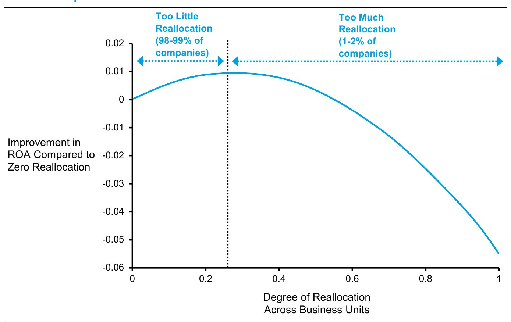
有若干因素让管理团队无法把资本配置到尽可能好的程度。第一点很简单：他们没有一套清晰而正确的流程。资本配置归根结底是评估机会、并执行那些有吸引力的机会；这需要根据形势随时决定自己该当买方还是卖方，需要一定的超脱与分析敏捷性。
There are a handful of factors that keep management teams from allocating capital as well as they could. The first, simply, is that they do not have a clear and correct process for doing so. Capital allocation is ultimately about assessing opportunities and executing on the ones that are attractive. As such, it requires a willingness to be a buyer or a seller given the circumstances. This necessitates some dispassion and analytical agility.几乎每一个资本配置问题的答案都是"视情况而定"。在某个价格上回购股票，可能正是提升存量股东每股价值的好办法；而在另一个价格上卖出，则可能是合算的。8 一次战略性收购在某个价格上会为收购方增加价值，在更高的价格上则会毁损价值。而资产剥离——很多高管觉得它远不如收购诱人——同样可能对股东有利。
The answer to nearly every capital allocation question is, "it depends." Buying back stock at one price may be a great way to add value per share for ongoing holders whereas selling it at another price may be desirable. A strategic acquisition will add to an acquirer's value at a certain price but destroy value at a higher one. And divestitures, which many executives find less compelling than acquisitions, can be beneficial for shareholders.估值是把这些决策绑在一起的那根绳子。估值商（valuation quotient）用公司市值去除那些依赖估值的决策金额。这个比率衡量的是：估值对整体股东价值有多重要。9
Valuation is the tie that binds these decisions. The valuation quotient divides a company's decisions that rely on valuation by its market capitalization. This measures how important valuation is to overall shareholder value.图表 2 显示，1970 至 2024 年间，美国公司的估值商平均为 10%。我们在分子中计入的估值类决策包括：发行普通股与优先股所得的款项、并购（M&A）总额（含资产剥离）、以及回购股票支付的现金；然后用年初时美股总市值去除它。对于估值商偏高的公司，估值错误会压低其股东总回报（TSR）——如果这些错误跨越多年、涉及多笔资本配置决策，影响就更大。
Exhibit 2 shows that the valuation quotient for U.S. companies averaged 10 percent from 1970 through 2024. The valuation decisions we consider in the numerator include the proceeds from issuance of common and preferred stock, total mergers and acquisitions (M&A) including divestitures, and cash paid for share buybacks. We divide the sum of these decisions by the market capitalization of U.S. stocks at the beginning of the year. For companies with high valuation quotients, valuation errors limit total shareholder returns (TSR), especially if they span multiple years and capital allocation decisions.某种意义上，高管应当像投资组合经理那样行事：把资本配置到有望赚取超额回报的机会上，同时剥离那些在别人手里更值钱的资产。但高管的资本配置与投资者的资本配置有两处实质性的不同。10 其一，高管的决定往往难以逆转——比如拆掉一笔大型收购，代价高昂且耗时。其二，高管通常对自己投资的结果还握有一定的主导权，因为他们可以随时调整资源、战略与战术。
In a sense, executives should act like investment portfolio managers in that they allocate capital to opportunities that have the potential to earn excess returns and divest assets that are worth more to others. But capital allocation for executives is different than it is for investors in two ways that are meaningful. Decisions by executives are often hard to reverse. For example, unwinding a large acquisition can be costly and time consuming. On the other hand, executives generally have some control over the outcomes for the investments they make. This is because they can shift resources, strategies, and tactics as necessary.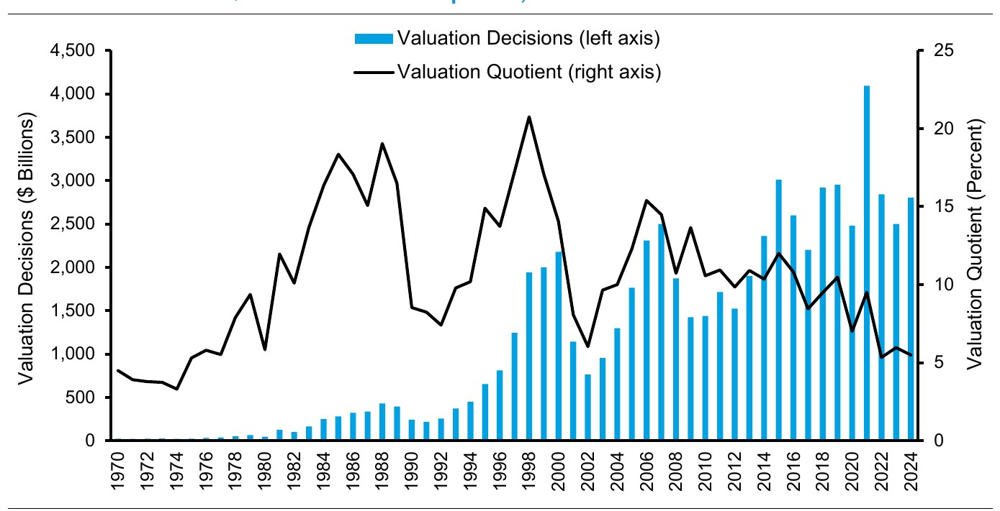
激励是阻碍有效资本配置的第二个因素，它们通常反映了委托—代理问题带来的成本。资产的所有者（委托人）与负责管理资产的人（代理人）的目标可能冲突。股东是委托人，高管是代理人。比如，公司规模与高管薪酬之间存在正相关关系；结果就是，管理层可能有动机通过收购来做大公司——哪怕那些交易对股东毫无价值可言。另外，高管还可能把自己的薪酬挂钩到与价值创造没有直接关系的财务或非财务指标上。这些做法都会给股东制造"代理成本"。
Incentives are the second factor that impedes effective capital allocation. These generally reflect the costs that arise from the principal-agent problem. The goals of the owners of assets, the principals, and those in charge of managing the assets, the agents, can come into conflict. Shareholders are the principals and executives are the agents. For instance, there is a positive relationship between firm size and executive compensation. As a result, managers may have an incentive to grow through acquisitions even in cases where the deals add no value for shareholders. Further, executives may peg their compensation to financial or non-financial metrics that have no direct link to value creation. These actions create "agency costs" for shareholders.最后是沃伦·巴菲特所说的"制度性强制（institutional imperative）"。11 它说的是：高管会在实践上（包括薪酬与资本配置）"不假思索地"相互模仿；而公司内部的较低层级人士，会迅速为 CEO 想做的任何事情找出业务上的理由。12
Finally, there is what Warren Buffett calls the "institutional imperative." This says executives will "mindlessly" imitate one another in their practices, including compensation and capital allocation, and that junior people within a firm will be quick to come up with business justifications to support whatever the CEO wants to do.金融服务公司 Morningstar 依据资产负债表实力、投资眼光以及对股东分配的适当性，为美国约 1,850 家上市公司打出资本配置评级。在 2025 年 9 月已评级公司中，16% 的公司三方面都足够出色、获评"典范"，78% 为"标准"，5% 得分低到被视为"差"。13
Morningstar, a financial services firm, provides a Capital Allocation Rating for roughly 1,850 public companies in the U.S. based on balance sheet strength, investment acumen, and appropriate distributions to shareholders. Of the companies rated as of September 2025, 16 percent score high enough in each area to be deemed exemplary, 78 percent are standard, and 5 percent rate low enough to be considered poor.评估资本配置时，判断一家公司处在生命周期的哪个阶段很重要。许多学者与从业者用"年龄"来拟人化地刻画生命周期，但这是一个有限的度量：不同行业经历生命周期的速度不同，有些公司的学习速度快于竞争对手，而"年龄"本身也有多种算法。
Consideration of where a company is in its life cycle is important in assessing capital allocation. Many academics and practitioners depict the life cycle anthropomorphically by using age. This is a limited measure considering that industries move through the life cycle at different rates, some firms learn faster than do their competitors, and age itself can be calculated in multiple ways.我们发现，按年龄计算的平均 ROIC 并不会呈现与生命周期相联系的倒 "U" 形（即 ROIC 先低、达到顶点、再逐步走低）。相反，我们发现利润与投资的形态是理解生命周期好得多的方式（见图表 3）。注意，我们假定公司诞生于其首次公开募股（IPO）之日。14
We observed that the average ROIC based on age does not produce the pattern associated with a life cycle of an inverted "U," in which ROIC starts low, reaches an apex, and then drifts lower. Instead, we found that patterns of profits and investment are a much better way to understand the life cycle (see exhibit 3). Note that we assumed companies are born on the date of their initial public offering.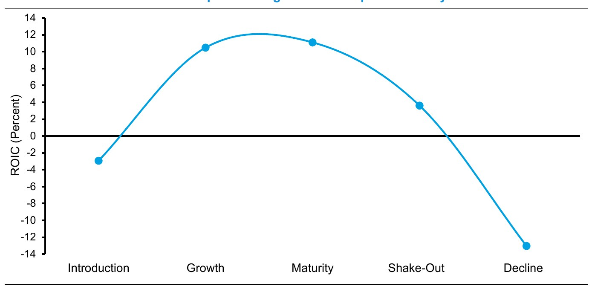
我们的分析建立在密西西比大学会计学教授 Victoria Dickinson 的工作之上。Dickinson 的研究起点是经济学教授 Steven Klepper 与 Michael Gort 提出的、基于实证的生命周期框架，它把企业划分为五个阶段：引入期（introduction）、成长期（growth）、成熟期（maturity）、淘汰期（shake-out）、衰退期（decline）。随后她把各阶段与现金流量表中的结果挂钩，让这套分类更严谨。这一形态的推论是：对生意的投资往往在生命周期靠前时最大，而向股东返还资本的倾向在靠后时更高。
Our analysis is based on work by Victoria Dickinson, a professor of accounting at the University of Mississippi. Dickinson starts with research by Steven Klepper and Michael Gort, professors of economics, who developed an empirically-grounded life cycle framework based on five stages: introduction, growth, maturity, shake-out, and decline. She then added rigor to the classification by linking the stages to results within the statement of cash flows. Reflecting this pattern, investment in the business tends to be greatest toward the beginning of the life cycle and the proclivity to return capital to shareholders is higher toward the end.本报告分三部分。第一部分打基础：回顾资本的来源、资本配置的备选方案，以及 1970 年以来美国公司如何配置资本；我们也考察增长与投入资本回报率，以理解为什么资本配置对高管与投资者而言始终重要。
This report has three parts. The first establishes the foundation by reviewing the sources of capital, alternatives for capital allocation, and how companies in the United States have allocated capital since 1970. We also look at growth and return on invested capital to understand why capital allocation remains an important consideration for executives and investors.第二部分逐一更细致地检视每一种资本配置备选方案。我们这项工作的新意在于纳入了无形资产投资——它无疑重要，却天生难以衡量。我们还借助学术研究获得一个统览视角，并在合适的地方提供一个思考价值创造前景的框架。
Next, we review each of the capital allocation alternatives in more detail. What is new in our work is the inclusion of intangible investments, which are undoubtedly important but inherently difficult to measure. We also draw on academic research to gain a synoptic view and, where appropriate, provide a framework for thinking about the prospects for value creation.第三部分给出一些评估公司资本配置能力的准则，包括：检视公司过去如何配置资本、度量投入资本回报率、考虑激励所起的作用，以及应当指导资本配置的五条核心原则。
Finally, we offer some guidelines for assessing a company's capital allocation skills. These include examining how the firm has allocated capital in the past, measurement of return on invested capital, consideration of the role of incentives, and five core principles that should guide capital allocation.学术研究考察过各种资本配置方式（并购、股份回购、首次派息等）所对应的股价累计异常收益（CAR）。15 CAR 的计算试图通过剔除大盘涨跌的影响，来隔离出某项公告本身的作用。把这些工作与其他资本配置形式的具体研究结合起来，我们得以对股票市场对各类活动能否创造价值的评价做出一个粗略排序。注意，这些汇总结果并未考虑每个案例的具体情形——换句话说，它说明的是平均而言的结果，个别案例的结果可能非常不同。
Academic research has investigated the cumulative abnormal return (CAR) for stock prices associated with various capital allocation alternatives, including M&A, share buybacks, and dividend initiations. The CAR calculation tries to isolate the impact of an announcement by removing changes associated with the stock market. Combining this work with specific research on other forms of capital allocation allows us to create a rough ranking of the stock market's assessment of potential value creation by activity. Note that these summary results do not consider the specific circumstances of each case.分拆、资产剥离、首次派息、股份回购、偿还债务、资本开支，以及部分无形资产投资，都与正的超额 TSR 相关联。研发（R&D）往往对价值中性，并购对买方而言也是如此。而股权融资——包括 IPO 与增发——平均而言预示的是负的超额收益。
Spin-offs, divestitures, dividend initiations, share buybacks, debt prepayments, capital expenditures, and some intangible investments are associated with positive excess TSRs. Research and development (R&D) tends to be value-neutral, as is M&A for the buyer. And equity issuance, including initial public offerings and seasoned equity offerings, predicts negative excess returns on average.资产增长是个粗糙的工具，但它能预测异常收益：资产增长高的公司，其 TSR 低于资产增长低的公司。16 资产收缩与高于资产扩张的 TSR 相关。这一实证观察已被写进多因子资产定价模型，值得关注。17 但资产增长终究是投资的一个糟糕代理变量，而且它忽略了内部生成的无形资产投资的兴起。18 至于为何会出现这样一条普遍结论，可能的解释是：由股权发行或股权注销推动的资产水平变化。19
Asset growth is a blunt tool that predicts abnormal returns. Specifically, companies with high asset growth earn lower TSRs than companies with low asset growth. Asset contraction is associated with higher TSRs than asset expansion. This empirical observation has been built into multi-factor asset pricing models and is worthy of attention. But asset growth is ultimately a poor proxy for investment and neglects the rise of investments in internally-generated intangible assets. Changes in asset levels fueled either by equity issuance or retirement might explain the broad result.下面我们开始打基础：回顾金融资本的来源与去向、1970 年以来公司如何使用这些资本，以及为什么资本配置始终是一个重要的投资考量。
We now lay the foundation by reviewing the sources and uses of financial capital, how companies have spent that capital since 1970, and why capital allocation remains an important investment consideration.评估资本配置，要从理解资本从哪里来、以及公司把钱花到哪里开始（见图 4）。
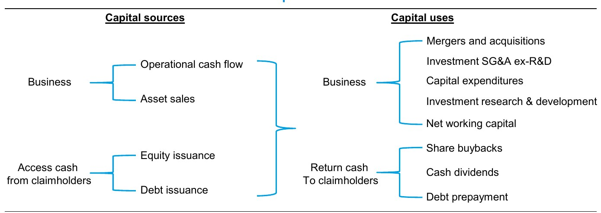
资本的来源可以是外部的，也可以是内部的。外部资本来自发行股权或债务（包括租赁）。初创公司和年轻公司通常需要获取外部资本，因为在能够以足够规模销售商品或服务、从而吸收这些前期生产费用之前，它们必须先发生并承担这些成本。股份支付（SBC）本身也是一种股权发行。
判断一家公司是否需要外部资本，一种方法是把它的税后净营业利润（NOPAT）增长率与其投入资本回报率（ROIC）作比较。无论年轻还是成熟，增长快于自身增量 ROIC 的公司都需要获取外部资本。如果公司的 ROIC 高于资本成本，这本身没问题，甚至是可取的。20
Firms, young or old, that grow faster than their incremental ROICs need to access external capital. This is fine, indeed desirable, if the company’s ROIC is in excess of the cost of capital.一个经典案例是全球零售商沃尔玛（Walmart）：在上市后的最初 15 年里，它的增长快于自身的 ROIC。关键在于，正因为它的 ROIC 远高于资本成本，这家公司创造了大量价值。尽管沃尔玛需要外部资本来支撑增长，其股票在此期间仍实现了 33% 的年化股东总回报（TSR），是同期标普 500 指数的三倍。
Even though Walmart required external capital to support its growth, the stock delivered an annual total shareholder return of 33 percent during that period, three times that of the S&P 500.内部资本来自业务自身产生的现金。这包括经营活动现金流和资产出售所得，后者实质上是把一串未来现金流一次性折成今天的总额。当增长低于 ROIC 时，公司就会有资金可以返还给股东，或补充进资产负债表。
图 5 显示了 1970 年以来美国公司的资本来源。内部融资一直是主要来源。公司也持续增加新债，只有在经济处于衰退的若干年份例外。这种发行方式与稳定的资本结构相符。
该图还显示，公司平均而言是在净回购股权。请注意，这项分析不包括以股份支付形式进行的股权发行。但即使把 SBC 费用考虑在内，股权净发行额仍为负。21
But net equity issuance is negative even after taking SBC expense into consideration.内部融资承担了很高比例的投资资金，这既可以看作好事，也可以看作坏事。好的一面是，美国上市公司的 ROIC 足够高，几乎不需要求助于资本市场来为增长融资。坏的一面是，公司可以把内部经营产生的资金投向毁损股东价值的投资。从资本市场筹资则意味着公司的支出计划会受到审视。事实上，证据显示健康的资本市场能够改善资本配置。22
In fact, the evidence shows that healthy capital markets improve capital allocation.著名的经济学家、金融史学家彼得·伯恩斯坦（Peter Bernstein）提出过一个思想实验：让公司把全部盈利都分配给股东，然后再向市场募集投资资金。他的逻辑是：既然市场比公司更擅长配置资本，那么经过这道关卡，整体的资本配置就会得到改善。23
债务占总资本比率是衡量资本结构——也就是公司如何为经营融资——的指标。图 6 显示了 1970 至 2024 年美国公司（不含金融行业）的这一比率。我们把它定义为债务的账面价值，除以债务的账面价值加上股权的市值。2024 年该比率为 15%，而长期平均为 26%，并在 2025 年上半年继续走低。请注意，尽管这一时期利率总体下行，资本结构反而变得更加保守。例如，美国 10 年期国债收益率在 20 世纪 70 年代的年均值为 7.5%，而过去 10 年的平均值为 2.5%。
That ratio for 2024 was 15 percent versus the long-term average of 26 percent, and it continued to trend lower in the first half of 2025.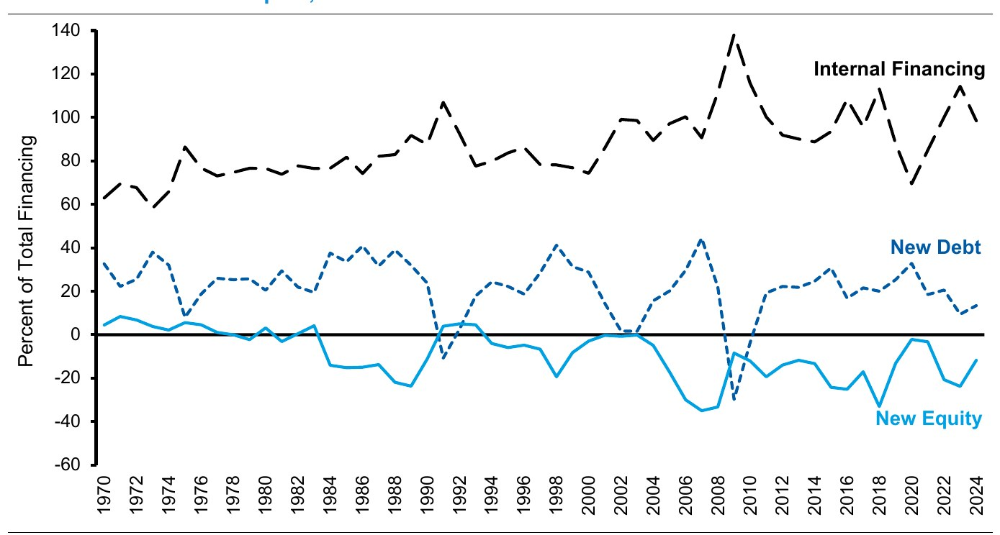
公司使用资本，要么投向业务本身，要么为索取权人（claimholders）提供回报。对业务内部的投资包括资本开支（capex）、营运资本、研发（R&D）投资，以及剔除研发后的销售、一般及行政费用（SG&A）投资（属于无形资产投资）。公司也可以进行并购（M&A）等外部投资。区分两类支出很重要：一类是为了追求创造价值的增长而自主决定的现金支出，另一类是维持当前经营所必需的支出。24
图 7 显示了 2024 年美国公司如何配置资本，既以绝对金额计，也以占销售额的百分比计。总支出为 US$7.5 万亿。其中 US$0.3 万亿的资产剥离已包含在并购金额中。
Total spending was $7.5 trillion. Divestitures of $0.3 trillion are included in the M&A amount.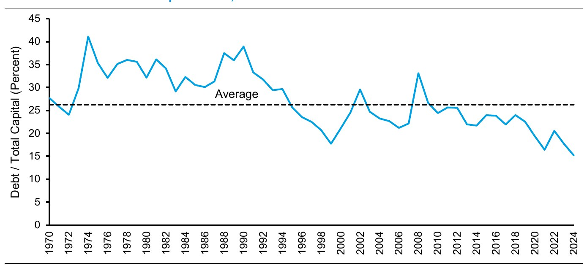
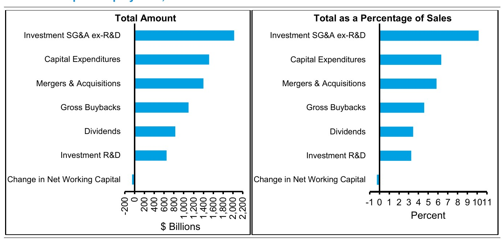
图 8 显示了 1970 年以来按来源划分的支出情况。数据揭示出一些值得注意的模式：
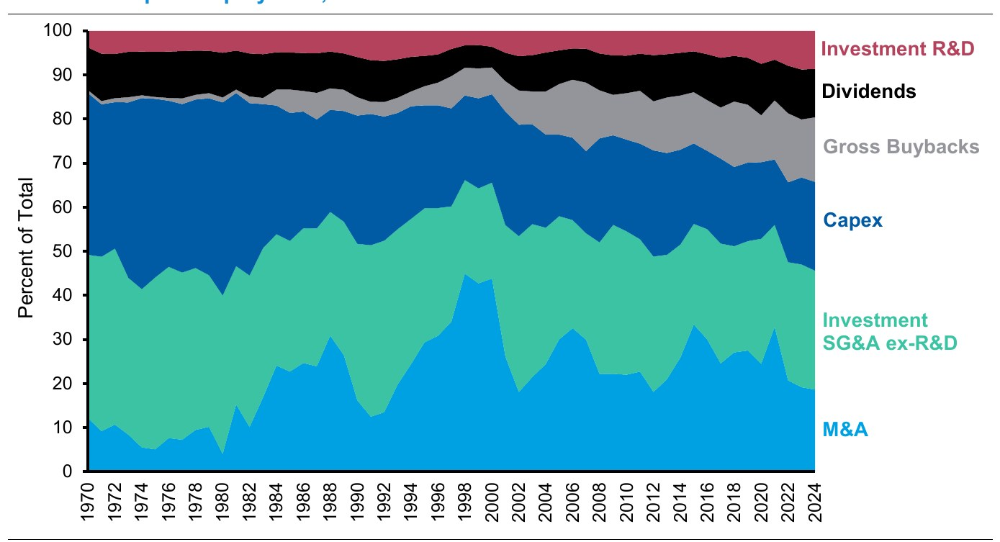
图 10 显示了标普 500（S&P 500）指数行业构成的变迁，该指数追踪美国最大的 500 家上市公司的市值。这些变化有助于解释，为什么今天公司配置资本的方式与几十年前不同。在这段时期内，信息技术、医疗保健和通信服务在市场中的占比翻了一番，从 1970 年的 26% 升至 2024 年的 52%。与此同时，工业、能源和原材料的占比下降超过一半，从 30% 降至指数的 13%（见图 11）。从有形投资向无形投资的结构变化，与行业构成的这一演变相互吻合。
Information technology, healthcare, and communication services doubled as a share of the market over this period, from 26 percent in 1970 to 52 percent in 2024.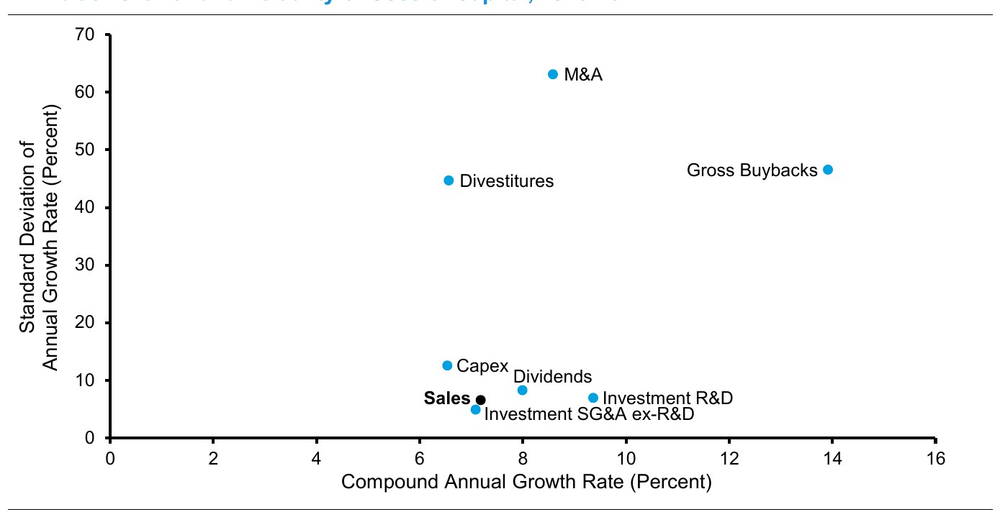
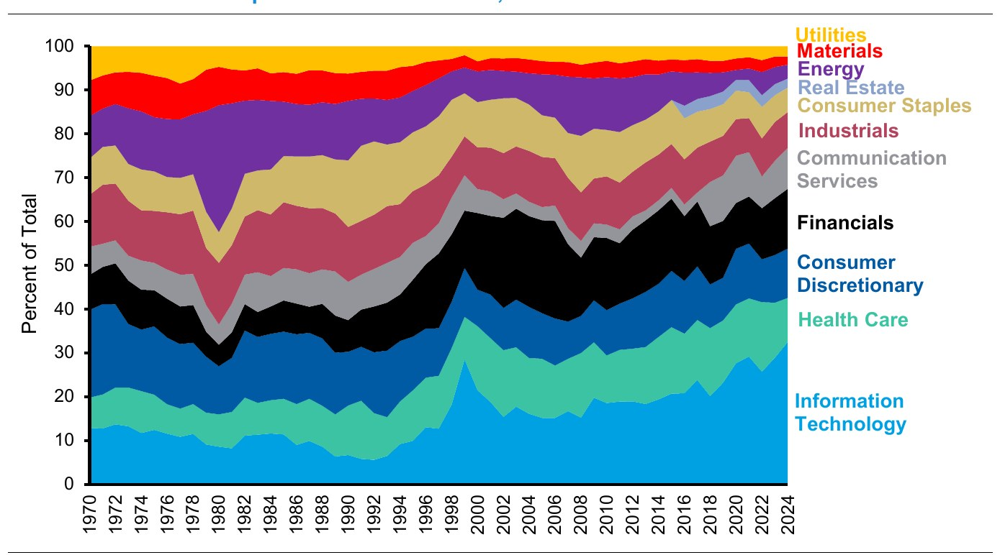
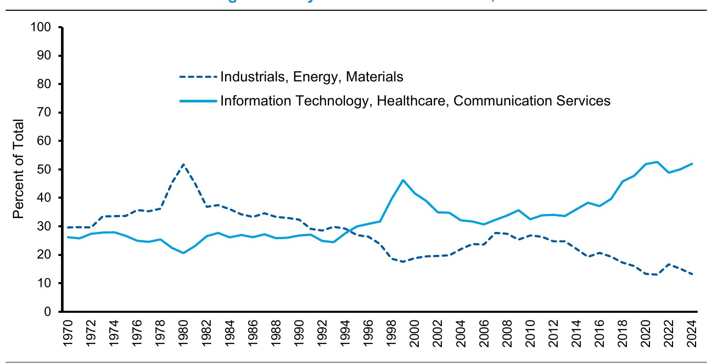
资本配置之所以是一个重要的投资议题，是因为上市公司的整体 ROIC 超过了整体增长率。这意味着美国上市公司创造的现金多于其投入的现金。经内部生成的无形资产调整后，1970 至 2024 年的平均 ROIC 为 9.2%（见图 12）。同样经无形资产投资调整后，NOPAT 的平均增长率为 7.9%。
The average ROIC, adjusted for internally-generated intangible assets, was 9.2 percent from 1970 through 2024 (see exhibit 12). The average growth rate in NOPAT, also adjusted for intangible investment, was 7.9 percent.图 13 显示，经通胀调整后，投入资本的平均增长率为 4.3%，该数字基于过去 3 年的年化增长率（滚动三年年化增长率）。我们对投入资本的定义剔除了超额现金。自 1970 年以来，包含回购和股息在内的整体投资以 7.5% 的速度增长。
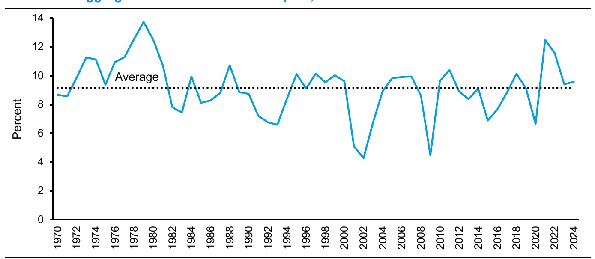
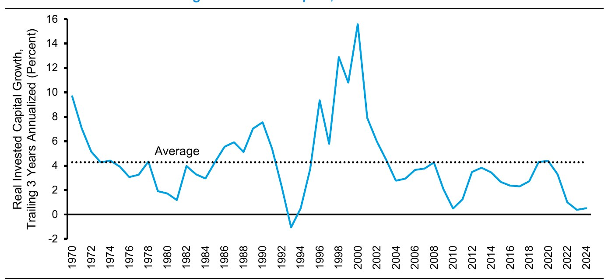
超额现金的生成与行业构成的变化叠加，导致现金和短期（ST）投资的余额上升。27 图 14 显示了我们对美国公司超额现金及短期投资占资产总额百分比的估计。1970 至 2024 年的平均值为 5.8%，2024 年为 7.5%。
The average was 5.8 percent from 1970 to 2024 and was 7.5 percent in 2024.这笔超额现金和短期投资中相当可观的一部分，集中在少数几家公司手里，包括苹果（Apple）、字母表（Alphabet）和微软（Microsoft）。截至 2024 年末，各公司报告显示，这笔资金总额的四分之一由 10 家公司持有，三分之一由前 21 家公司持有，一半由 67 家公司持有。
As of year-end 2024, company reports show that one-quarter of the total was held by 10 companies, one-third by the top 21, and one-half by 67 firms.投资者需要考虑这些公司将如何使用这些超额资金。虽然这笔现金并不能赚取资本的机会成本，但它可以在融资环境困难时提供缓冲，并且在出现有吸引力的机会时可能具有期权价值。
下面我们逐一讨论资本配置的各项备选方案。
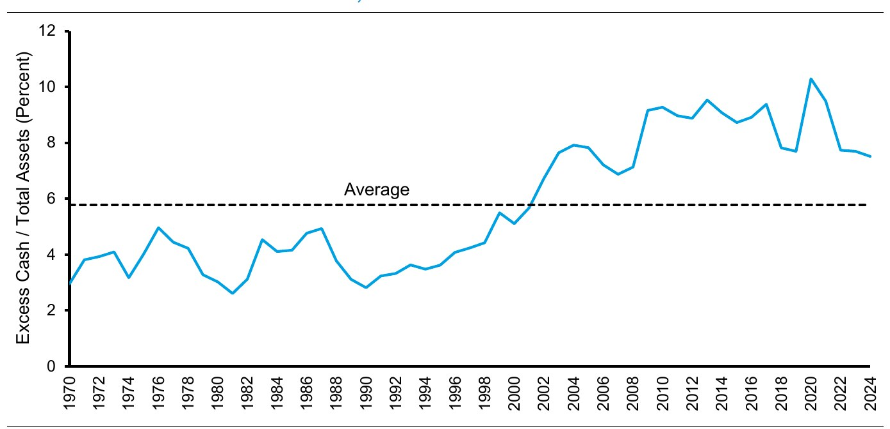
在资本配置的各项选项中，并购（M&A）代表的是企业资源最大规模的再分配之一。图表 15 展示了 1970 年至 2024 年美国每年的并购交易量，以及并购交易额占销售额的比例。2024 年的并购交易总额为 US$1.4 万亿，相当于销售额的 5.8%，而在 2025 年上半年，与上年同期相比增长了 10.8%。图表显示，并购往往具有周期性。早期行动者往往比那些在周期后段才出手收购的公司表现更好。28
The chart shows that M&A tends to be cyclical. Early movers tend to do better than companies that buy later in the cycle.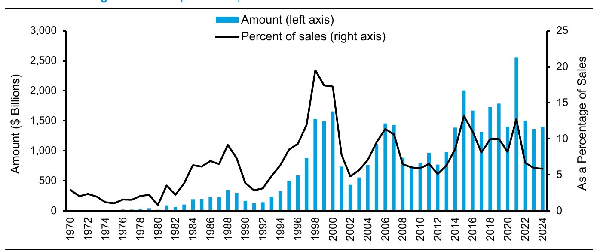
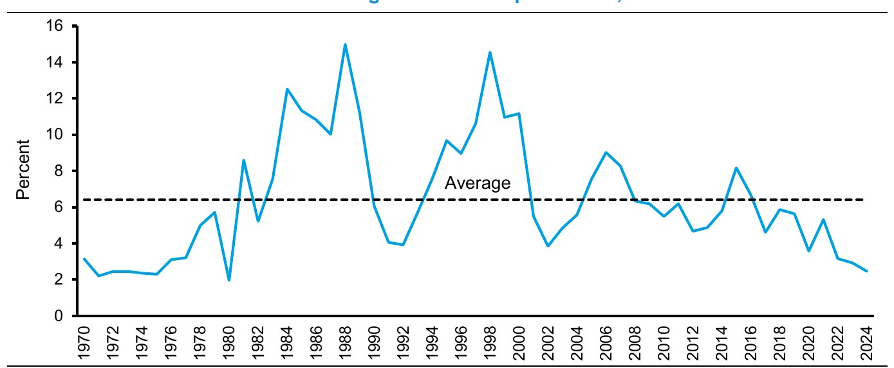
并购还与更高的股价水平和估值水平相关。29例如，在过去 55 年中，以占销售额的百分比衡量，并购活动的高峰出现在 1990 年代末的市场上涨期。
并购的普遍性意味着，几乎所有公司都直接或间接受到其影响。例如，在 1990 年代和 2000 年代，10 家上市公司中有 9 家至少做过一笔交易。30图表 16 展示了 1970 年至 2024 年并购交易额占市值的年度比重。其均值为 6.4%，并于 1988 年达到 15.0% 的峰值。
It has averaged 6.4 percent and peaked at 15.0 percent in 1988.虽然我们的关注点是公开市场中的资本配置，但私募股权（PE）公司的收购在整体并购活动中扮演着值得注意的角色。所谓收购，是指金融赞助方买下一家现金流强劲的公司，并以相对较高的债务权益比为交易融资。买方随后会寻求改善经营与公司治理、偿还债务，并以盈利的价格把公司卖掉。
图表 17 展示了私募股权交易占并购总量的百分比。收购行业在 1980 年代末经历了一波活跃期，随后在 1990 年代初崩盘，并在接下来的十年中复苏。2008 年金融危机前夕，活动急剧增长，此后再次陡降，并自那时起稳步增长。2000 年以来，私募股权交易平均占交易总量的 15%；1985 年以来平均占 13%。该比重在 2007 年达到交易量的 31%，并在 1998 年降至 2% 的谷底。
Private equity deals have averaged 15 percent of deal volume since 2000 and 13 percent since 1985. They peaked at 31 percent of volume in 2007 and troughed at 2 percent in 1998.公司通常会去做那些能强化自身战略地位的交易。31事实上，大多数交易都有合理的战略逻辑。但交易还必须在财务上讲得通，才能为买方创造价值。CEO 和董事会常常因傲慢而出价过高。32一笔在战略上讲得通的交易，如果价格不对，仍可能是一个糟糕的资本配置决策。
But deals must also make financial sense to create value for the buyer. CEOs and boards often show hubris by bidding more than they should.这正是沃伦·巴菲特的制度性必然（institutional imperative）发挥作用的地方。制度性必然的表现包括：拥有愿意支持领导者任何决策的下属，以及公司之间相互模仿的倾向，其中包括与并购有关的决策。33
凯洛格管理学院的荣休教授阿尔弗雷德·拉帕波特（Alfred Rappaport），以及德勤咨询并购业务合伙人马克·西罗尔（Mark Sirower），解释了为什么并购交易对买方而言很难创造价值。第一个原因是支付过高的风险。即便是聪明的战略型交易，如果溢价过高、超出买方收回投资所能覆盖的水平，也不会带来回报。
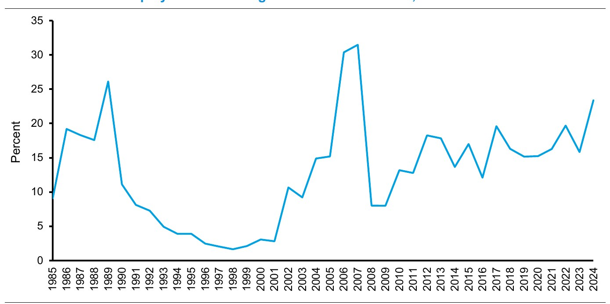
做一笔交易会释放战略意图的信号，也需要付出努力。在某些情况下，竞争对手可以复制一笔交易带来的收益。他们还可以利用买方在整合标的公司时的注意力分散。卖方通常会为不确定的未来收益要求一大笔预付款，这使得投资者的质疑完全有正当理由。而且与许多其他决策不同，并购交易通常代价高昂、很难逆转。34
总体而言，并购创造价值——这是通过比较买卖双方在交易前后的合并股权价值来衡量的。问题在于，收购方股票的价值在交易公告之后常常下跌，这反映出财富从买方股东向卖方股东的转移。这是买方为说服卖方达成交易所支付溢价的结果。
The problem is the value of the acquiring company’s stock often goes down following the announcement of a transaction, reflecting a wealth transfer from the shareholders of the buyer to the shareholders of the seller.一项针对 1995 年至 2018 年 1,267 笔交易的研究显示，在公告发布时，买方股价有 60% 的情况出现下跌，且全样本的平均变化为 -1.6%。35这些汇总数字自然掩盖了大量差异。相当多的交易确实为买方创造了价值。
关于并购的大量研究提供了基准比率，供公司和投资者用来寻找恰当的参照类。这些参照类的结果，有助于看清哪一类交易通常能够增加价值。以下是其中几个参照类：
评估资本配置的各项选项并不容易，我们稍后会给出一种评估并购的办法。但值得注意的是，交易完成后每股收益（EPS）的增厚或摊薄，是许多利益相关方着重关注的指标。咨询公司凯睿（Kearney）的一项调查显示，在衡量一笔并购交易时，投资者关系专业人士认为高管层、卖方分析师和投资者最看重的指标是 EPS 增厚。四分之三的受访者表示，利益相关方对 EPS “高度强调”，只有 2% 的受访者报告说 EPS “完全没有得到强调”。
Three-quarters of the respondents said that stakeholders place a “strong emphasis” on EPS, and only 2 percent reported that it received “no emphasis.”EPS 增厚或摊薄在感知上的重要性，压倒了其他所有指标。43这种看法几乎没有实证基础。严谨的研究显示，买方股票的超额收益与 EPS 的变化基本无关。44
Careful studies show excess returns for the buyer’s stock is essentially independent of EPS changes.例如，我们对 2015 年和 2016 年公布的 95 笔并购交易做了详细分析，这些交易包含管理层关于 EPS 增厚或摊薄的说明，以及潜在协同效应的规模。随后，我们考察了公告发布后买方股票的超额收益。
我们把每一笔交易放进一个 3×3 的方格中。列对应管理层所表述的预期 EPS 影响（负、中性、正），行对应超额收益（负、中性、正）。格子里最拥挤的一格——95 笔交易中的 45 笔——是 EPS 为正而超额收益为负。对这些买方来说，盈利上升了，股价却下跌了。45
并购和资本配置的其他选项一样，当买方实现的价值超过其支付的价格时，才算成功。马克·西罗尔建议买方和投资者使用下面这个公式：46
交易净现值 = 协同效应的现值 – 溢价Net present value of the deal = present value of the synergies – premium
简言之，这个公式试图量化买方是否物有所值。请注意，公司越来越多地披露协同效应估算值，这为评估交易提供了依据。47研究表明，协同效应往往不足以支撑所承诺的溢价。48但当协同效应的现值超过溢价时，股票市场的初始反应会更正面。49下面我们来看协同效应和溢价。
But the stock market’s initial reaction is more favorable when the present value of synergies exceeds the premium.简单的现实是：协同效应很难兑现。50虽然可以界定各种类型的协同效应，但一个简单的分类是成本协同效应或收入协同效应。51大多数协同效应基于经营层面，不过买方也可以获取财务协同效应。52如果管理层分享具体的数字并加以有效解释，市场会认为这些协同效应更可信。53
与此一致，成本协同效应比收入协同效应更可靠。54图表 18 展示了麦肯锡（McKinsey）顾问就公司是否实现预期成本与收入协同效应所做的调查。结果显示，36% 的公司达到了或超过了预期的成本协同效应。未达预期的常见原因包括低估一次性成本，以及未能检视过往交易以校准预期。
Thirty six percent of companies reported reaching or exceeding their anticipated cost synergies.但收入协同效应的结果要差得多。只有 17% 的公司表示其收入协同效应超过了预测。乐观错判的来源包括低估客户流失，以及对市场增长或目标市场份额作出不切实际的假设。在并购中，要落实足以实现充分协同效应所需的流程并不容易。55
Only 17 percent of companies said they surpassed their revenue synergy forecasts.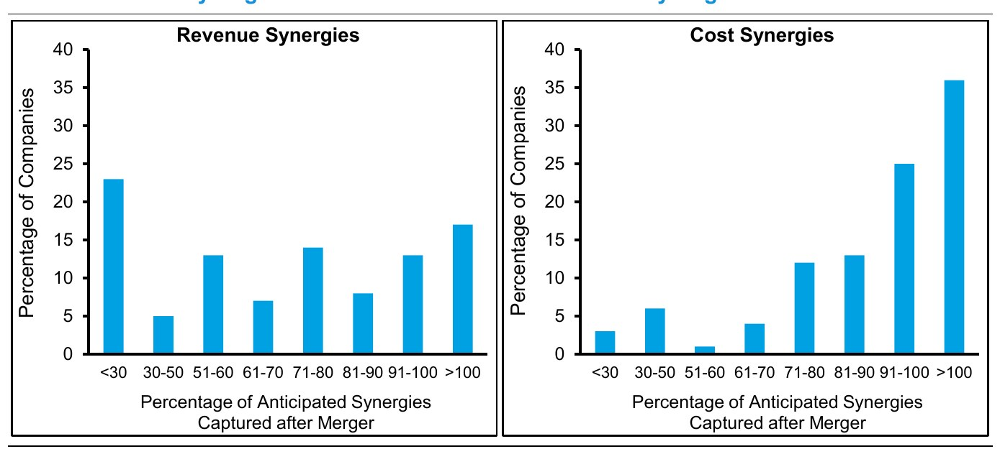
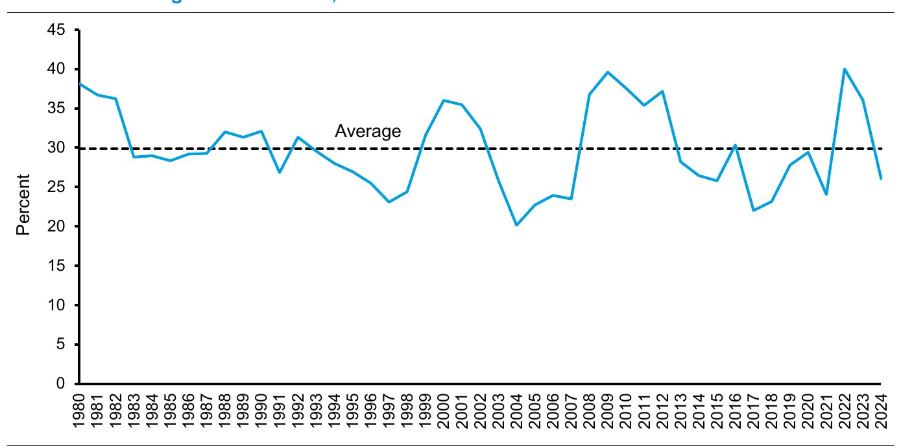
图表 19 展示了 1980 年至 2024 年每一年的平均交易溢价。整个序列的平均值为 30%。本分析中的每笔交易权重相同。溢价的计算方式是买方支付的价格与任何交易预期形成之前标的公司当时市场价格之间的差额。举例来说，如果一家标的公司的股票交易在 US$100，而竞买人出价 US$130，那么溢价就是 30%（US$30 ÷ US$100）。对任何一笔具体交易而言，溢价的计算通常相当直接，但要把一整个溢价序列汇总起来则很困难。
股东价值风险（shareholder value at risk, SVAR）是衡量并购交易中买方股价下行风险的有用方法。56在现金交易中，SVAR 定义为所承诺的溢价除以买方的市值。例如，如果买方出价 US$200 的溢价以收购一家标的公司，而买方的市值为 US$2,000，那么 SVAR 为 10%（US$200 ÷ US$2,000）。
SVAR 意味着，在合并完全没有协同效应的情况下，从买方转移到卖方的财富金额。它让你了解这笔赌注有多大，以及有多少价值处于风险之中。
在现金交易中，SVAR 总是高于股票交易。在股票交易中，SVAR 的计算方式为所承诺的溢价除以买方市值加上卖方市值（含溢价）。沿用前面的数字，假设这次交易改用股票支付，且卖方在交易前的价值为 US$800，那么 SVAR 将为 6.7%（US$200 ÷（US$2,000 + US$1,000））。
SVAR is always higher in a cash deal than a stock deal.其中的启示是：选择发行股票而非支付现金，意味着卖方要共同承担实现协同效应的风险。在实践中，如果交易向市场传递出买方或卖方任何一方的独立经营价值过高的信号，买方股价的下跌幅度可能超过溢价本身。
对大多数公司而言，并购比其他资本配置决策更偶发。在一家上市公司收购另一家上市公司的情形下，投资者应当在交易公告时回答以下几个问题，以评估这笔交易：57
你可以用 SVAR 来衡量重要性。SVAR 高的交易值得仔细审视。SVAR 并不总是显而易见，因为交易结构各不相同，而且大多数公告所依据的是股价，而不是溢价与市值。
交易的性质同样提供了可供借鉴的参照类。运营型交易平均表现好于转型型交易，地理上更近的交易往往好于距离遥远的交易，而收购私有公司的交易通常好于收购其他上市公司。58
支付方式本身也可以传递信号。图表 20 展示了 1980 年至 2024 年全现金交易与全股票或混合交易的构成。现金交易的表现好于股票交易，或好于由现金与股票混合融资的交易。正如 SVAR 的计算所揭示的那样，确信自己能够创造超过溢价之协同效应的高管，应当使用现金支付，因为这样他们就能把全部价值为自己的股东所捕获；对协同效应收益没有把握的管理者，则通过用股票支付来同时降低回报与风险。正如引言中所述，发行股票与随后的糟糕股东总回报（TSR）相关联。
Cash deals have performed better than stock deals or deals that are financed with a blend of cash and stock.我们可以用西罗尔的公式来估算股票市场的反应。在管理层披露成本协同效应的情况下，可以把税后协同效应指引除以资本成本，再把结果与所给出的溢价相比。我们发现，这一计算虽然并不完美，却比每股收益变化之类的经验法则提供的信息多得多。
最后，你可以在市场消化完消息、反映出投资者共识意见之后，评估市场对这笔交易的看法。这会体现为买方和卖方股价的变化。把市场反应的预测与实际发生的情况做比较。例如，当市场质疑买方实现其所宣称协同效应的能力时，买方股价的跌幅会大于公式所暗示的水平。对于重大的收购，对潜在协同效应做更深入的分析，可以为你在某只股票上形成差异化的观点提供机会。
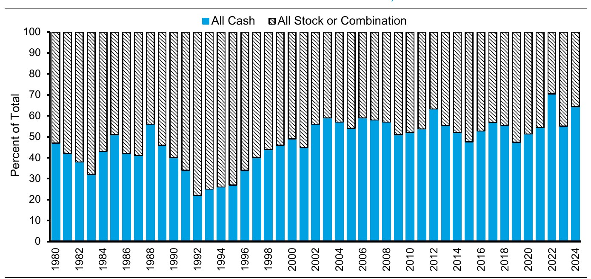
管理团队和投资者有时会否定市场收益给出的反馈，认为它们是短期导向的，因此没有信息量。我们回到对 1,267 笔交易的研究。该分析纳入了上市公司之间的交易，购买价格为 US$1 亿（US$100 million）或以上，且卖方价值至少相当于买方价值的 10%。样本包含了 1995 年至 2018 年间公布的所有符合这些标准的交易。
图表 21 展示了结果。首先，市场对其中 508 笔交易（即 40%）报以欢迎，平均初始反应为 +7.7%。市场对其余 60% 交易的平均初始反应为 -7.8%。这些数字的计算方式是测量从公告前五天到公告后五天、经行业调整后的总收益。
First, the market greeted 508 of the deals, or 40 percent, with an average initial response of +7.7 percent. The market’s average initial response to the other 60 percent of the deals was -7.8 percent.一个值得注意的点是，买方的成功率随时间推移在改善。该研究的作者把样本分成三个时间段。1995-2002 年，买方获得正收益的比例为 36%。2003-2010 年，该比例升至 40%。在最后一个时期，即 2011 年至 2018 年，收购方的股价有 44% 的情况出现上涨。这与其他研究的结论一致，即自 2008-2009 年金融危机结束以来，并购中买方的回报有所改善。59
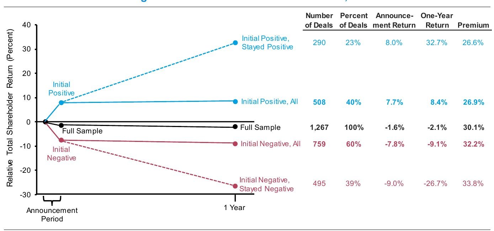
该研究随后把收益考察窗口延长到公告后一年，以观察正负反应是否延续。研究者发现，最初 508 次正反应中有 290 次（57%）得以延续，而最初 759 次负反应中有 495 次（65%）得以延续。这表明，虽然市场在评估交易时并不完美，但初始反应是有信息量的，而且相对无偏。同样重要的是，糟糕的结果比好的结果略更可能延续。
The researchers found that 290 of the initial 508 positive responses (57 percent) persisted compared to 495 of the initial 759 negative responses (65 percent).最后，所支付的溢价与交易成功之间存在直接关系。成功的交易平均而言溢价低于失败的交易。这符合逻辑，因为这反映出买方为了创造价值必须实现的协同效应规模。
过去半个世纪，投资发生了从有形投资到无形资产投资（intangible investment）的明显转移。例如，在美国，1970 年代的有形投资大约是无形投资的两倍，而近年来这一比例已经反转。60对公司市场价值进行拆分的分析表明，26% 至 68% 的价值可归因于无形资本。61
Analysis that decomposes the market value of firms suggests that 26 to 68 percent of the value is attributable to intangible capital.关于资本配置的多数讨论聚焦于有形投资，包括资本开支（capex）和营运资本。有形资产是指你能够触摸到的资产。无形资产是非实体的。例子包括软件代码、品牌建设营销、客户获取成本和员工培训（见图表 22）。
计量有形投资相对直接，因为它们在现金流量表和资产负债表上表现为各自独立的列报项目。而计量内部生成的无形投资则颇具挑战，因为在利润表上，它们与维持性支出混同计入销售、一般及行政费用（SG&A）之中。62
Measuring internally-generated intangible investments is a challenge because they are commingled with maintenance spending within selling, general, and administrative (SG&A) expenses on the income statement.有形投资与无形资产投资的会计处理方式不同，这使得财务报表的信息含量随时间推移而下降。631974 年，美国财务会计准则委员会（FASB）决定企业应将研发（R&D）——一种重要的无形资产投资形式——费用化。FASB 曾考虑将研发资本化，即比照有形投资的处理方式，但最终他们认定「单个研发项目的未来收益通常存在高度不确定性」。其研究得出的结论是，「研发成本与特定未来收入之间的直接关系通常尚未得到证实」。64
The FASB considered capitalizing R&D, which would have treated it similarly to tangible investments, but they decided that “there is normally a high degree of uncertainty about the future benefits of individual research and development projects.” Their research concluded that “a direct relationship between research and development costs and specific future revenue generally has not been demonstrated.”当支出与收益之间的联系不清晰时，会计师选择保持保守，这意味着将研发及其他无形资产投资费用化。这一做法并非毫无依据，因为研究显示研发的回报不确定性高于资本开支的回报。65尽管如此，如今已有大量证据证实：重述财务报表以反映无形资产投资，能提升其解释资产价格的有效性。66
That said, there is now a large body of evidence confirming that recasting financial statements to reflect intangible investments improves their usefulness in explaining asset prices.要让有形投资与无形资产投资处于同等地位，做法是在资产负债表上将无形资产投资资本化，并在随后的期间对其摊销。摊销费用体现在利润表上。
主要难点在于确定 SG&A 中有多少属于可自由支配的无形投资，又有多少属于维持当前经营所必需的维持性费用。但难点还不止于此。一旦估算出投资金额并确认一项内部生成的无形资产，还需要为这些资产设定使用寿命以便摊销。这将使有形投资与无形资产投资得以被同等对待。
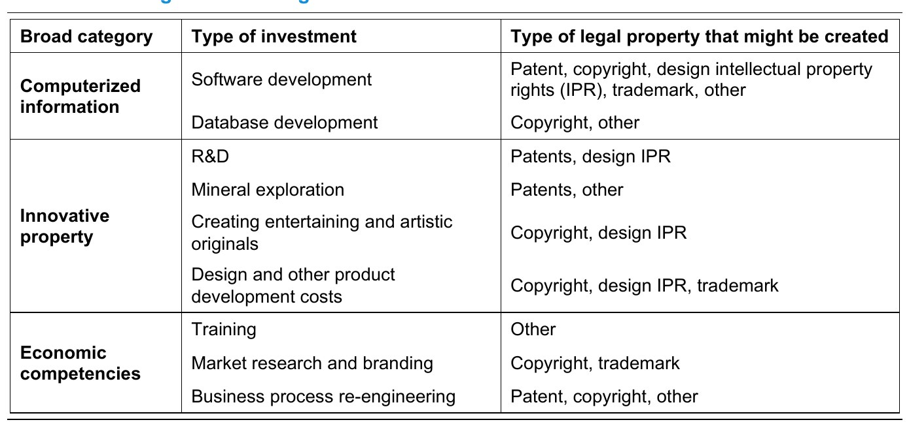
学界正在积极研究如何从 SG&A 中剥离出无形资产投资，并估算资产使用寿命的方法。67最常见的做法是假设研发全部、以及剔除研发后的 SG&A 的 30% 属于无形资产投资。68一些较新的研究按行业对无形资产投资和资产寿命的估计进行差异化处理。69无形资产密集型行业的财务报表调整幅度很大，而有形资产密集型行业则变化甚微。70
为估算剔除研发后的投资性 SG&A（investment SG&A ex-R&D），我们取 SG&A 总额，减去研发，再乘以会计学教授 Aneel Iqbal、Shivaram Rajgopal、Anup Srivastava 和 Rong Zhao 所估算的投资比例。71图表 23 展示了结果。2024 年剔除研发后的投资性 SG&A 超过 US$2.0 万亿，而 1970 年仅为 US$500 亿。该合计数占销售额的比重从 1970 年的 9.3% 升至 2024 年的 10.1%。将投资性研发加到 2024 年的结果上，无形资产投资总额达到 US$2.7 万亿。
Investment SG&A ex-R&D was more than $2.0 trillion in 2024, up from $50 billion in 1970. The sum has risen from 9.3 percent of sales in 1970 to 10.1 percent in 2024. Adding investment R&D to the 2024 result brings the total for intangible investment to $2.7 trillion.要衡量剔除研发后的 SG&A 的净投资规模，还需考虑摊销。图表 24 展示了我们对 1970 至 2024 年剔除研发后的投资性 SG&A 扣除摊销后的估算结果。2024 年该项合计占销售额的 0.7%，整个期间平均为销售额的 1.8%。换个说法，摊销金额大约相当于剔除研发后的投资性 SG&A 的 80%。
The total was 0.7 percent of sales in 2024 and averaged 1.8 percent of sales over the full period. Saying it a little differently, amortization has been around 80 percent of investment SG&A ex-R&D.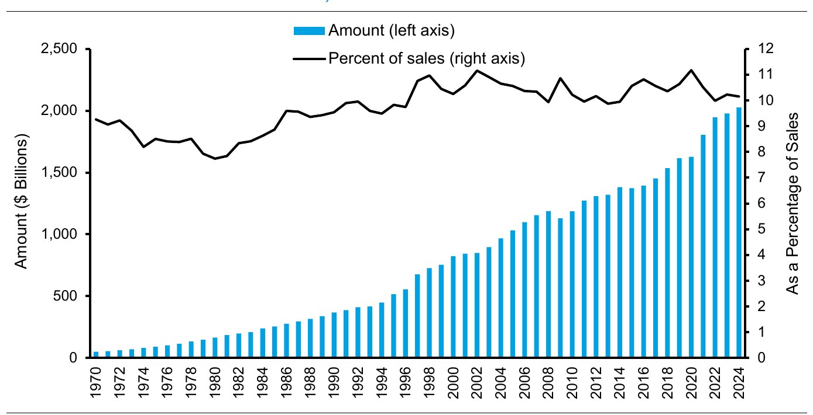
尽管很少有研究直接关注无形资产投资与价值创造之间的联系，但有一些迹象表明它是一项好投资。例如，所谓的「超级明星」公司——即 ROIC 高于平均、且往往在无形资产上大量投入的公司——其每单位投入资本的产出高于竞争对手。72那些通过 SG&A 大量投入无形资产的公司，平均也能获得正的超额回报。73这说明这些投资的实际回报高于市场原先的预期。最后，当广告支出提升了客户价值、并由此带来支付意愿时，其回报看起来是不错的。74
For example, so-called “superstar” firms, those with above-average ROICs that often invest heavily in intangible assets, have higher output per unit of invested capital than their rivals.图表 25 展示了按传统口径计算的 ROIC 分布（虚线条），以及经内部生成无形资产调整后的分布（实线条）。中位数变动不大，但调整使两端数值向均值回归。我们认为，这些调整能更准确呈现企业经济性的真实面貌。
The median does not move much but the adjustment regresses the extremes toward the average. We believe these adjustments result in a more accurate view of the economics of the businesses.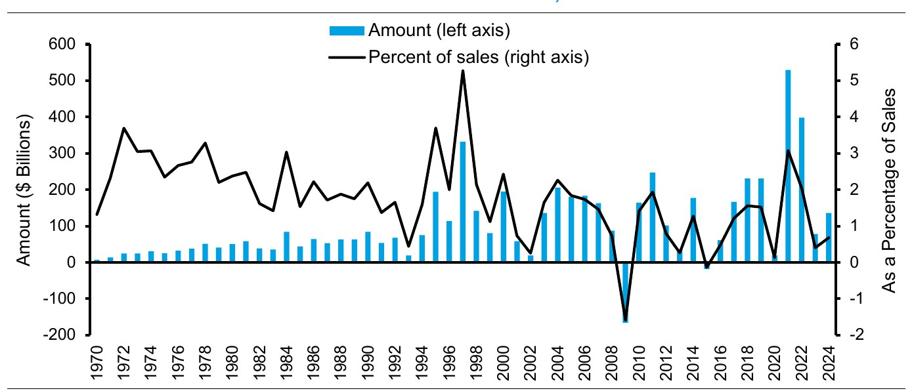
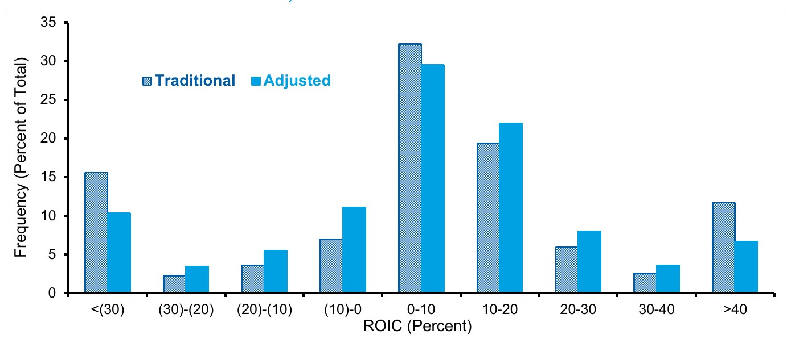
2024 年，企业在资本开支（capex）上分配了 US$1.5 万亿，相当于销售额的 6.3%。资本开支通常是资本用途中排名前三的用途之一。与无形资产投资类似，资本开支的周期波动性弱于并购（M&A）。
Companies allocated $1.5 trillion, or 6.3 percent of sales, to capital expenditures in 2024. Capital expenditures are generally one of the top three uses of capital. Similar to intangible investment, capital expenditures are less cyclical than M&A.图表 26 以金额和占销售额百分比两种口径展示了 1970 至 2024 年的资本开支。在此期间，支出占销售额的比重于 1973 年见顶，达 9.4%；2009 年见底，为 5.5%。2015 年该比重回升至 7.2%，反映出能源与材料板块的支出增加。过去十年这一比重持续走低，疫情期间支出降至接近历史低点，随后小幅回升。
Over this period, spending peaked at 9.4 percent of sales in 1973 and troughed at 5.5 percent of sales in 2009. Spending rebounded to 7.2 percent of sales in 2015 reflecting increases in spending in the energy and materials sectors.管理层与投资者通常把资本开支拆分为两部分。第一部分是维持性资本开支，即维持或替换现有长期资产所必需的最低支出。第二部分是为了追求增长、创造价值的投资性支出。受访投资者表示，他们希望能够区分维持性资本开支与增长性资本开支。75
许多投资者抱着一个简单假设：折旧是维持性资本支出的合理代理变量。这一假设有其道理，因为会计师把资产成本记录在资产负债表上，再估算其使用寿命以确定折旧进度。例如，若一家公司花 US$1,000购置一台使用年限为 5 年的机器，它会在此后每年计提 US$200折旧，以匹配收入与费用。若折旧能够近似维持性需求，那么只有超出折旧部分的资本开支才属于投资。
For instance, if a company pays $1,000 for a machine that has a 5-year life, the company will depreciate $200 per year over that time in order to match revenue and expense. If depreciation approximates maintenance needs, only the capital expenditures above depreciation are an investment.按此定义，整个期间归属于投资的资本开支占资本开支总额的 38%。维持性支出必不可少，这解释了资本开支相当大一部分的稳定性。更进一步看，它意味着在评估资本开支的价值创造前景时，最好把注意力集中在支撑增长的那一部分上。学术研究显示，这一区分对投资者是有用的。76
Using this definition, capital expenditures attributable to investment were 38 percent of total capital expenditures over the full period. That spending for maintenance is essential explains a good deal of the stability of capital expenditures.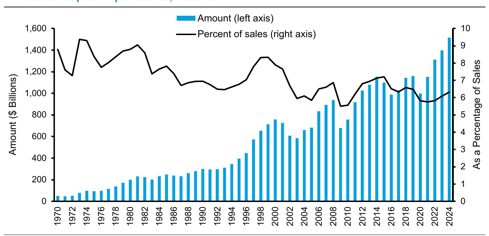
图表 27 展示了我们所研究样本中资本开支减折旧后的金额。按此口径，投资占销售额的比重于 1974 年见顶，达 5.6%；2020 年见底，为 0.5%。过去十年的平均值为 1.6%。
把折旧作为维持性资本开支代理变量的两大实质性局限，在于通胀和技术淘汰风险。在物价上涨时期，替换新设备所需的资本开支会超过折旧，因为新增支出反映了通胀，而折旧基于历史成本。77技术淘汰快于预期，会导致资产使用寿命被高估、折旧被低估。
中欧国际工商学院会计学助理教授 Venkat Peddireddy 提出了一套衡量维持性支出的框架，称为「累计产能成本」（cumulative capacity cost）。它是五年期间内折旧与摊销（D&A）、资产减记、资产出售损失、商誉减值和无形资产减值的合计。由于纳入了减记、损失与减值，这一指标既能反映技术淘汰的证据，也能反映正常损耗。
Peddireddy 的结论是，折旧低估了维持性资本开支，幅度约为 20%（见图表 28）。这一比例在不同行业之间差异显著，各行业内部个别公司之间当然也存在差异。我们认为 Peddireddy 的方法存在一些局限，但把资本开支拆分为维持性与增长性两部分确实存在合理的做法。78
Peddireddy concludes that depreciation understates maintenance capital expenditures by about 20 percent (see exhibit 28). This percentage varies substantially by industry and there are certainly additional differences for individual companies within the industries.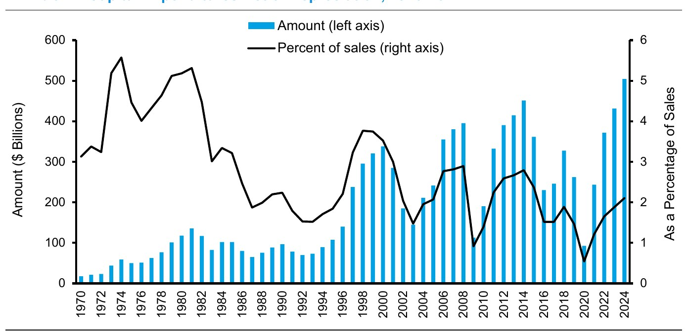
总体而言，资本开支增加的公告往往受到股票市场的欢迎。79这表明市场认为这类支出能够创造价值。但市场对资本开支指引的反应，很大程度上取决于所感知到的机会。80与许多资本配置选项一样，其收益似乎呈现倒 U 形：支出过少和过多都不好，存在一个创造价值的最优水平。81
Like many capital allocation options, the benefits appear to follow the shape of an inverted U. Too little and too much spending is bad, and there is an optimal level for creating value.2025 年上半年，资本开支较上年同期增长约 15%。我们测算，这一增量中 60% 来自仅四家公司的支出：Amazon、Meta、Alphabet 和 Microsoft。这些公司常被称为超大规模云服务商（hyperscalers），它们大规模提供云服务。
We calculate that 60 percent of this increase reflects the spending of just four companies: Amazon, Meta, Alphabet, and Microsoft. Often called hyperscalers, these companies provide cloud services on a large scale.研发在很大程度上属于无形资产投资。研究（research）致力于能够推出新产品或新服务的创新；开发（development）则聚焦于让这些产品或服务对市场有吸引力的过程。
在美国，企业约占研发总支出的 70-75%，联邦政府占 20%，学术界及其他机构占其余的 5-10%。82
In the U.S., businesses account for about 70-75 percent of total R&D spending, the federal government 20 percent, and academia and other entities the other 5-10 percent.美国企业将研发预算的 20-25% 用于研究，75-80% 用于开发。83信息技术与医疗保健板块的研发投入最多。相比之下，联邦政府的研发预算在研究与开发之间的分配更为均衡。
与研发支出大部分用于开发这一事实相一致，研究者认为不应把研发整体都视为可自由支配的无形资产投资。84近期一项研究提出，采用全行业加权平均的口径，约 75% 的研发应被视为投资，其余部分则恰当地归为维持性支出。85
图表 29 以金额和占销售额百分比两种口径展示了 1970 至 2024 年的投资性研发。1970 年代投资性研发约占销售额的 1.0%，此后稳步上升，到 1995 年达到 1.8%，直到 2012 年基本持平，随后快速攀升，2024 年达到销售额的 3.3%。整个期间投资性研发占销售额比重的上升，反映了市场构成的变化：科技、医疗保健与通信服务板块的权重自 1970 年以来已经翻倍，如今占标普 500 指数略高于一半。
Investment R&D was around 1.0 percent of sales in the 1970s, then rose steadily to 1.8 percent by 1995, remained relatively flat until 2012, and then climbed sharply to 3.3 percent of sales in 2024.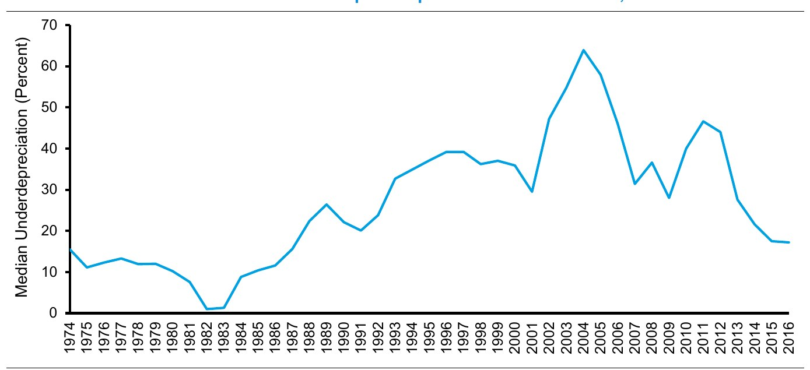
图表 30 展示了扣除摊销后的投资性研发，这与扣除折旧后的资本开支是等价的。该分析假设研发的加权平均资产寿命为 4.8 年。扣除摊销后的投资性研发于 2021 年见顶，为销售额的 1.7%，2024 年回落至长期平均值，即销售额的 0.5%。
This analysis assumes the weighted average asset life for R&D is 4.8 years. Investment R&D net of amortization peaked at 1.7 percent of sales in 2021 and reverted to the long-term average of 0.5 percent of sales in 2024.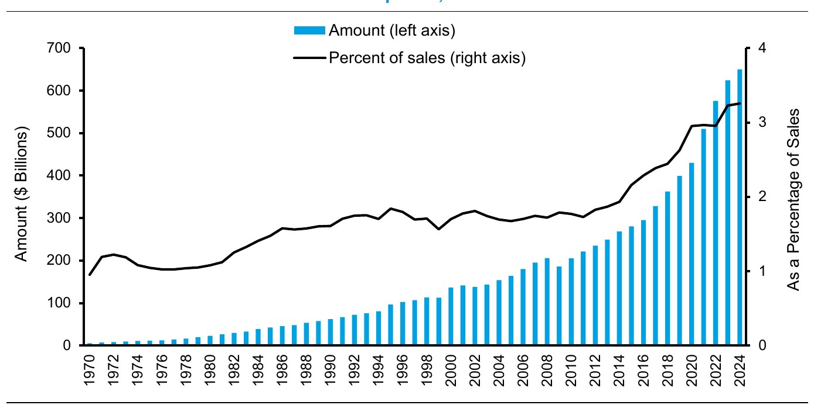
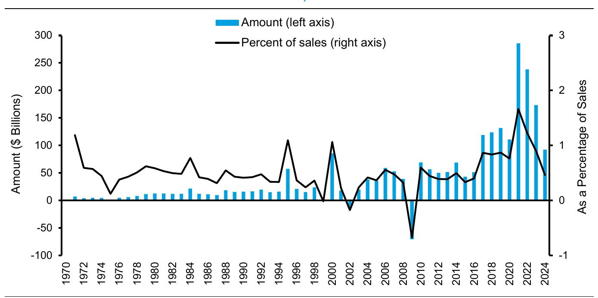
研发生产率衡量的是新产品价值与该产品投入之间的关系。由于投入与产出之间存在时滞，生产率本身难以计量。我们认同区分「研发效率」（R&D efficiency，即推出一个产品所需的成本）与「研发效能」（R&D effectiveness，即每次推出带来的价值）：效率更接近研究，效能更接近开发。
We like the distinction between “R&D efficiency,” the cost to launch, and “R&D effectiveness,” the value per launch. Efficiency is closer to research and effectiveness to development.擅长把产品推向市场的公司，可能不同于那些能通过设计、营销或分销能力的提升来创造价值的公司。86这有助于解释，为何具备研发效能的大型制药公司会收购那些展现研发效率的小公司。
总体来看，证据表明近几十年来研发的回报一直在下降。87圣路易斯华盛顿大学战略学教授 Anne Marie Knott 提出了一项她称之为「研究商数」（research quotient, RQ）的指标。RQ 运用生产函数，在其他变量保持不变的前提下，衡量研发投入（input）增加 1% 所带来的收入（output）增幅百分比。88
她的分析表明，约三分之一的公司研发支出低于最优水平，存在通过增加支出来创造价值的空间；近三分之二的公司支出过高，可以在不损害价值的前提下削减成本。她认为样本中 5% 的公司接近最优。Knott 指出，激进投资者（activist investors）在识别研发支出过度的公司方面相当有一套。89
Her analysis suggests that about one-third of companies spend below the optimal level of R&D and have the opportunity to create value by spending more. Nearly two-thirds spend too much and can cut costs without jeopardizing value. She deems five percent of her sample to be close to optimal.RQ 作为衡量创新与价值的决定因素，为分析增添了价值。90RQ 强调了一点：在任何一种资本配置选项上，恰当的支出水平都取决于当时的具体条件。91近年来平均 RQ 一直在下降，显示出研发支出回报的恶化。
RQ underscores the idea that the right amount to spend on any of the capital allocation alternatives depends on the prevailing conditions.退一步看，与创新相关的长期增长，取决于研究人员的数量及其生产率。一项研究显示，尽管研究投入持续增加，研究生产率却在下降。92另一项研究发现，虽然研发仍能提升公司层面的生产率与价值，但由于激烈竞争导致的快速淘汰，维持优势变得前所未有地困难。93
把一款药品推到市场的实际研发成本在几十年间稳步上升，这为研发相关回报的下降提供了额外证据。94一些会计学教授表示，他们的研究显示「有充分证据表明研发与未来盈利能力之间的关系正在下降」。95
Some accounting professors suggest their research shows “strong evidence of a declining relation between R&D and future profitability.”在我们测算的上市公司样本中，2025 年上半年研发支出较 2024 年同期增长约 9%。与资本开支类似，我们测算这一增量中接近 60% 来自 Amazon、Meta、Alphabet 和 Microsoft 的支出。
净营运资本（net working capital）衡量的是一家公司在正常经营条件下需要占用多少资本，其定义为流动资产减去无息流动负债（NIBCLs）。「流动」是指该项目预期在未来十二个月内会有现金流入或流出。资本配置关注的是净营运资本的变动，把它作为增量投资的度量。
Net working capital is a measure of how much capital a company needs to operate under normal conditions. It is defined as current assets minus non-interest-bearing current liabilities (NIBCLs).近几十年来，净营运资本作为资本配置一项影响因素的重要性在下降，因为它的规模变小了。1970 年代净营运资本接近资产的 30%，如今已不足资产的 10%。存货水平的下降——源于更先进的技术以及向无形资产驱动型业务的转变——是这一下滑的最大原因。96
Net working capital was nearly 30 percent of assets in the 1970s and is less than 10 percent of assets today.图表 31 展示了 1970 至 2024 年净营运资本的年度变化。2024 年末，我们样本中的公司净营运资本为 US$1.5 万亿。整个期间净营运资本投资平均仅占销售额的 0.6%，这一比例显著低于并购、剔除研发后的投资性 SG&A、资本开支和投资性研发。
2025 年上半年净营运资本较 2024 年同期增长略低于 2%。
净营运资本包含现金与短期投资。经营一家企业所必需的现金，往往随公司在其生命周期中所处阶段而变化。尽管如此，许多公司仍持有超额现金。图表 32 展示了剔除超额现金和短期投资后的净营运资本变化。这里我们假设公司需要维持相当于销售额 2% 的现金余额。
我们估算，所测算范围内的公司持有近 US$2.1 万亿的超额现金。如前所述，这些现金持有量的分布非常倾斜：现金与短期投资总额的 1/4 由 10 家公司持有，1/3 由前 21 家公司持有，1/2 由 67 家公司持有。正如后文将看到的，这些现金充裕的公司同时也是派发股息和回购股票的先行者。
We estimate that the companies in the universe we measure hold nearly $2.1 trillion in excess cash. As mentioned above, the distribution of the cash holdings is very skewed.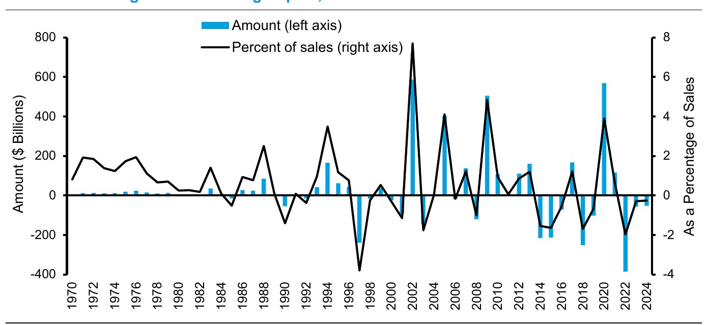
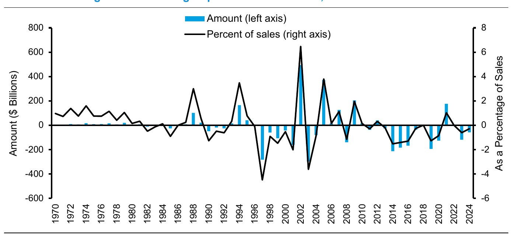
营运资本投资微不足道（de minimis）。但持有超额现金与短期投资的公司，其资本配置选择与计划理应受到审视。我们已记录，美国的现金持有量自 1970 年以来稳步上升，主要原因是无形资产投资的增加。公司持有现金还源于其被视为期权价值的考虑，但这一因素应当被错误配置的风险所约束。97市场对拥有良好投资机会的公司所持现金给予高于账面金额的溢价，对公司治理较差的公司所持现金则给予折价。98
现金转换周期（CCC）衡量在正常经营过程中一家公司的现金有多少天被占用在营运资本上。99图表 33 展示了 2024 年八个板块的现金转换周期。通信服务板块的 CCC 中位数最低，为 30 天；医疗保健板块最高，为 113 天。但每个板块乃至每个行业内部的差异可能很大。例如，2024 年 Amazon 的 CCC 为 -33 天，Macy's 为 45 天。两家公司同属可选消费板块，以及百货零售行业与子行业。
Communication services is the sector with the lowest median CCC, at 30 days, while healthcare has the highest at 113 days. But there can be a great deal of variation within each sector and industry.Amazon 的数据表明，当无息流动负债超过流动资产时，公司可能拥有为负的净营运资本和为负的 CCC。这些公司在必须支付供应商货款之前，就已经收回了所售存货对应的现金。供应商实际上成了一种融资来源。企业不可能永远维持负的现金转换周期，因为所有生意最终都会结束。但负的 CCC 可以持续很长时间。
These firms collect the cash on the inventory that they sell before they have to pay their suppliers. Suppliers effectively serve as a source of financing. Firms can’t have a negative cash conversion cycle forever because all businesses wind down eventually.过高的营运资本可能拖累价值。100但正如新冠疫情引发的供应链困境所凸显的，供应链上效率过高反而可能带来脆弱性。尽管如此，学术研究显示，以 CCC 衡量的、能有效管理营运资本的公司，其股东回报高于管理不佳的公司。101
That said, academic research shows companies that effectively manage their working capital, expressed as the CCC, deliver higher shareholder returns than those that do not.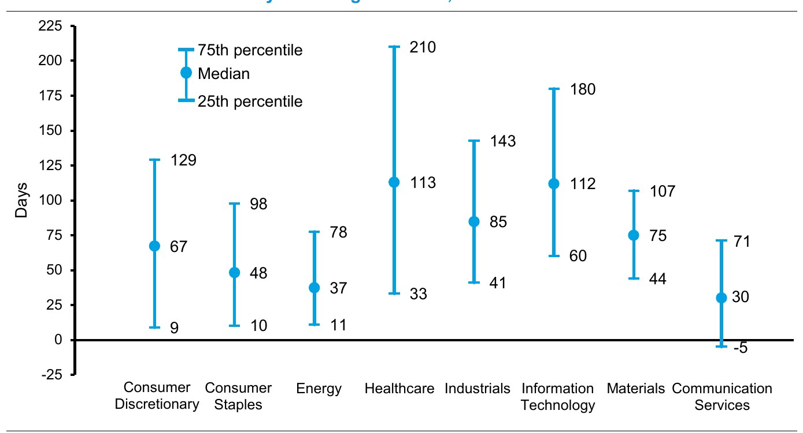
资产剥离（divestiture）包括出售业务部门、分拆（spinoff）和股权切离（equity carve-out），它们会改变一家公司的业务组合。如果某项业务对另一位所有者而言更有价值，或者剥离该业务能让公司更好地聚焦于其他业务、从而改善经营业绩，公司就应当考虑剥离它。
Divestitures, which include the sale of divisions, spinoffs, and equity carve-outs, modify a company’s portfolio of businesses. A firm should consider divesting an operation if it is worth more to another owner or if it allows the company to better focus on its other businesses and hence improve results.高管通常对剥离业务颇为犹豫，原因有几个。102 第一，资产剥离通常是撤回先前决策的结果，因此一笔交易等于承认过去犯了错。103 第二，大多数管理者希望扩张而非收缩自己的业务，而增长意味着更大的责任和更高的薪酬。最后，公司内部常常存在政治因素，会对分拆或出售业务形成阻力。
Executives are often reticent to divest businesses for a few reasons. 102 First, a divestiture is typically the result of unwinding a prior decision. As a result, a deal is an admission of a past mistake. 103 Second, most managers want to grow their businesses rather than shrink them. Growth is consistent with more responsibility and remuneration. Finally, there are commonly political issues within firms that can create resistance to spinning off or selling operations.图 34 展示了 1980 年至 2024 年的资产剥离情况。这些数字包含分拆，但平均而言其中约 85% 的价值来自把资产或业务部门卖给另一家公司。资产剥离受到的关注少于并购（M&A），但仍是资本配置的重要手段。在这段时间里，我们估算美国公司的资产剥离平均相当于销售额的 2.3%。
Exhibit 34 shows divestitures from 1980 to 2024. These figures include spinoffs, but about 85 percent of the value on average is the sale of an asset or division to another company. Divestitures get less attention than M&A but are nonetheless an important means of capital allocation. Over this period, we estimate divestitures have averaged 2.3 percent of sales for companies in the U.S.分拆（spinoff）是指一家上市公司按比例、以免税方式向股东分配一家全资子公司的股份。一个例子是通用电气（General Electric）——它曾是大型企业集团——2023 年分拆出其医疗业务 GE Healthcare Technologies，2024 年分拆出其电力业务 GE Vernova，最终只剩下 GE Aerospace。较近的案例是食品行业集团卡夫亨氏（Kraft Heinz），它宣布将拆分为两部分：“Global Taste Elevation Co.”，一家常温保存餐食（shelf-stable meals）业务；以及“North American Grocery Co.”，一组北美品牌的组合，其中包括肉类和冷切肉制品生产商 Oscar Mayer。
A spin-off is when a public company distributes shares of a wholly-owned subsidiary to its shareholders on a pro-rata and tax-free basis. One example is General Electric, once a major conglomerate, which spun off GE Healthcare Technologies, its healthcare business, in 2023 and GE Vernova, its power business in 2024, leaving only GE Aerospace. A more recent case is Kraft Heinz, the food conglomerate, which announced that it will split into two parts, “Global Taste Elevation Co.,” a shelf-stable meals business, and “North American Grocery Co.,” a portfolio of North American brands that include Oscar Mayer, a producer of meat and cold cuts.图 35 展示了 1980 年至 2024 年已公告分拆的数量和价值。
Exhibit 35 shows the number and value of announced spinoffs from 1980 through 2024.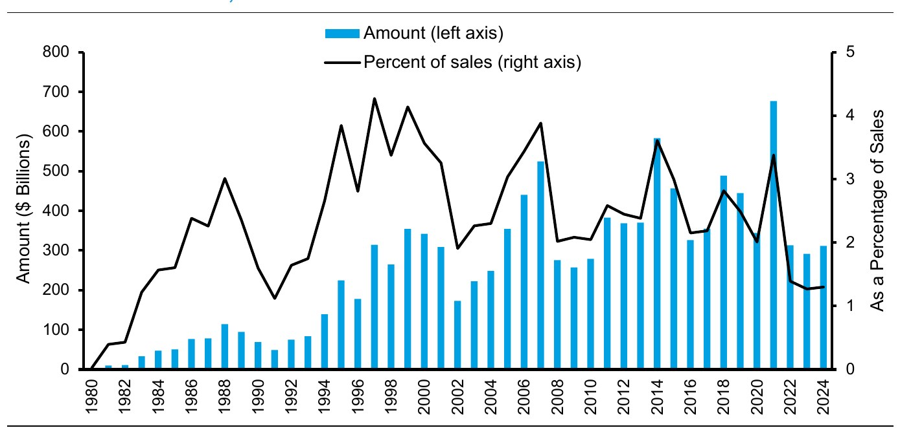
研究显示，资产剥离往往对股东有利，这合乎情理。分析表明，公司相对较少比例的资产创造了大部分价值，这种情况很常见。104 换言之，大多数公司都拥有一些赚不回资本成本的业务，因此这些业务对另一位战略买家或财务买家而言可能更有价值。这类剥离实现了“以减法求加法”（addition by subtraction）：处置所得的价值超过了该业务留在公司内部时的价值。105
Research shows that divestitures tend to be good for shareholders. This stands to reason. Analysis shows that it is common for a relatively small percentage of a company’s assets to create most of the value. 104 In other words, most companies have businesses that fail to earn the cost of capital and therefore may be more valuable to another strategic or financial owner. These divestitures lead to addition by subtraction, as the value of the proceeds exceeds the value of the operation as part of the company. 105正如前面所见，并购（M&A）总体上创造价值，但卖方往往拿走超过 100% 的价值。平均而言，做卖方优于做买方。
As we saw, M&A creates value in the aggregate but the seller frequently captures more than 100 percent of that value. It is better, on average, to be a seller than a buyer.当一项资产有多个竞买人时，卖方表现尤其出色。在竞价交易中，买方常常要面对“赢家诅咒”（winner’s curse）。106 此时，竞拍的“赢家”出价过高，只能承受多付的“诅咒”。赢家诅咒描述的正是财富从买方转移到卖方的过程。
Sellers do particularly well when an asset has multiple suitors. In a contested deal, the buyer is often subject to the “winner’s curse.” 106 In this case, the “winner” of an auction offers too much for the asset and has to accept the “curse” of overpaying. The winner’s curse describes a wealth transfer from the buyer to the seller.关于并购（M&A）的学术论文数量几乎是以六比一的比例超过关于资产剥离的论文。107 一项汇总近 100 项资产剥离研究的元分析得出结论：
从最宽泛的意义上说，我们的结果表明，平均而言，资产剥离行为与母公司积极的业绩结果相关联。108Academic papers on M&A outnumber those about divestitures by nearly a six to one margin. 107 A meta-analysis of nearly 100 studies on divestitures concludes: “In the broadest possible terms, our results suggest that on average, divestiture actions are associated with positive performance outcomes for the parent firm.” 108
分拆通常既为被分拆的公司、也为母公司创造价值。109 近期一项针对分拆文献的元分析的核心发现是：
“分拆、企业集团及其股东，都从免税的资产剥离以及公司随后的重新聚焦中获益。”110
推动这一价值创造的因素包括管理层聚焦的锐化、对业务的更好理解，以及税务处理。111
Spin-offs generally create value for the spinoffs themselves as well as the corporate parents. 109 The central finding of a recent meta-analysis of the spinoff literature was: “spin-offs, conglomerates, and stockholders benefit from tax-free divestiture and subsequent refocusing by the companies.” 110 The drivers of this value creation include sharpened managerial focus, better information about the business, and tax treatment. 111一家公司一生中能支付给股东的现金总量，最终决定了股东价值。股息、股份回购，以及出售公司换取现金所得的款项，是股东获得现金的三种主要方式。股息是支付给股东的现金，通常由利润提供资金。
The sum of cash a company can pay shareholders over its lifetime ultimately determines shareholder value. Dividends, share buybacks, and proceeds from the sale of the company for cash are the three main ways shareholders get cash. A dividend is a cash payment to a shareholder that is generally funded by profits.在严格的假设下，股息与回购是等价的（见附录）。112 但大多数高管认为两者存在实质性的差别。股息一经设定，就被视为与资本开支（capex）等投资决策性质相同的东西。回购则更多被看作公司在做完所有合适的投资之后，把剩余现金发出去的一种方式。113 因此，股息的波动性远小于回购（见图 36）。1970 年至 2024 年，股息增长率的标准差约为回购的六分之一。
Dividends and buybacks are equivalent under strict assumptions (see appendix). 112 But most executives think of them as meaningfully different. Dividends, once set, are considered equivalent to investment decisions such as capital expenditures. Buybacks are seen more as a way to disburse residual cash after the firm has made all suitable investments. 113 As a result, dividends are much less volatile than buybacks (see exhibit 36). The standard deviation of the growth rate of dividends from 1970 to 2024 is around one-sixth that of buybacks.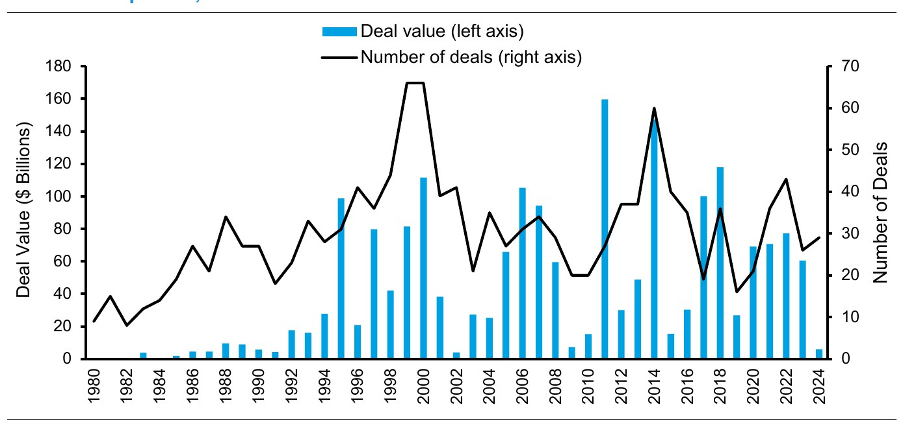
图 37 以美元金额和占净利润百分比两种口径展示了 1970 年至 2024 年的股息情况。即便在 2008–2009 年金融危机和 2020 年新冠疫情爆发期间，股息也表现出惊人的韧性。114
Exhibit 37 shows dividends as a dollar amount and as a percentage of net income from 1970 through 2024. Dividends were remarkably resilient even during the financial crisis of 2008-2009 and the COVID outbreak in 2020. 114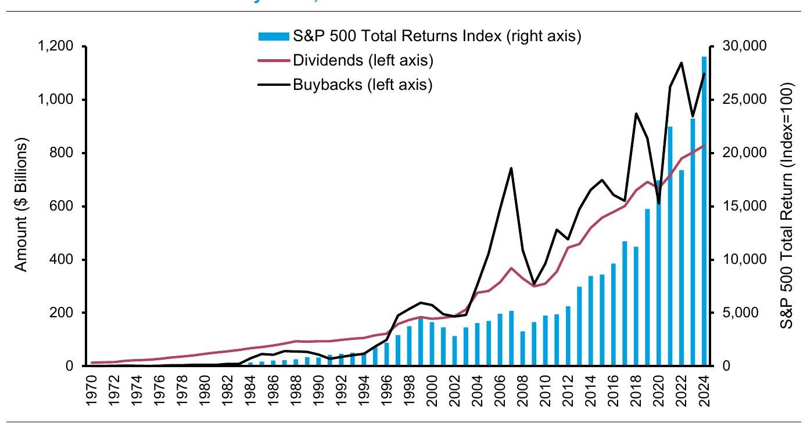
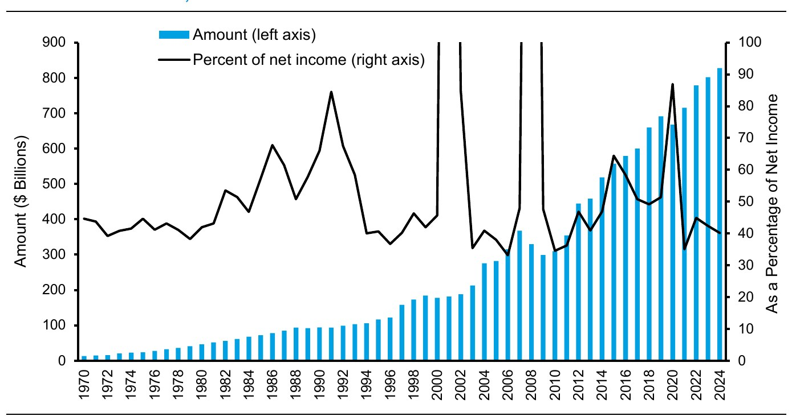
相对于回购，股息在 20 世纪 80 年代和 90 年代初的重要性有所下降，直到 21 世纪才有所回升。例如，20 世纪 70 年代末有 10 家公司中有 7 家派发股息，而到 2002 年只有 10 家中有 3 家派发；到 2016 年回升至 10 家中有 4 家，之后又缓慢走低，到 2024 年重新回到 10 家中有 4 家（见图 38）。115 该项分析统计普通股股息和优先股股息。
Relative to buybacks, dividends became less relevant in the 1980s and early 1990s, only to rebound somewhat in the twenty-first century. For example, 7 in 10 companies paid a dividend in the late 1970s, and just 3 out of 10 did so in 2002. That recovered to 4 in 10 by 2016, then drifted lower again, only to rise back to 4 out of 10 in 2024 (see exhibit 38). 115 This analysis counts common and preferred dividends.以股息和回购两种形式返还资本的倾向更强，反映出美国上市公司比以往任何时期都更成熟、盈利能力更强。116
The greater proclivity to pay out capital, both in the form of dividends and buybacks, reflects the fact that public companies in the U.S. are more mature and more profitable than they were in previous eras. 116在调查中，首席财务官（CFO）把盈利的稳定性与可持续性，以及投资者的偏好，列为决定股息支付政策最重要的因素。117 实际上，股息依然是对未来盈利信心的有用信号，因为公司必须创造超出基本需求的现金流才能维持股息。118
When surveyed, chief financial officers (CFOs) cite the stability and sustainability of earnings, as well as the preference of their investors, as the most important factors determining dividend payout policy. 117 In effect, dividends remain a useful signal of confidence in future earnings because a company must generate cash flow beyond its basic needs to sustain a dividend. 118股息也被视为计算股东总回报（TSR）时的一项重要输入。例如，宾夕法尼亚大学沃顿商学院荣休教授杰里米·西格尔（Jeremy Siegel）在其最新版《长期持股》（Stocks for the Long Run）中考察了股市的长期表现，并断言“股息远不愧为股东回报最重要的来源”。119 如果你想衡量的是累积资本，这个说法就是错的。只有价格升值才是随时间增加累积资本的投资回报来源。120
Dividends are also perceived to be an important input into the calculation of total shareholder return (TSR). For example, in his latest edition of Stocks for the Long Run, Jeremy Siegel, a professor emeritus from the Wharton School at the University of Pennsylvania, examines long-term results for the stock market and asserts that “dividends are by far the most important source of shareholder return.” 119 This is wrong if you seek to measure accumulated capital. Price appreciation is the only source of investment return that increases accumulated capital over time. 120年度股票收益率（股价变动加上股息率）很容易计算。但股东总回报（TSR）是一个多期指标，假设所有股息都再投资于该股票。如果知道价格升值幅度和股息率，就可以这样计算 TSR：
股东总回报（TSR）= 价格升值 + [(1 + 价格升值) × 股息率]
Total shareholder return (TSR) = Price appreciation + [(1 + price appreciation) × dividend yield]
如果股价因股息再投资的复利效应而上涨，一年期股票收益率总是低于股东总回报。例如，假设价格升值 8%、股息率 3%，股票收益率为 11.00%（.08 + .03），而股东总回报为 11.24%（.08 + [(1 + .08) × .03]）。
A one-year equity rate of return is always lower than the TSR if the price rises due to the compounding of reinvested dividends. For example, assume price appreciation of 8 percent and a dividend yield of 3 percent. The equity rate of return is 11.00 percent (.08 + .03) but the TSR is 11.24 percent (.08 + [(1 + .08) × .03]).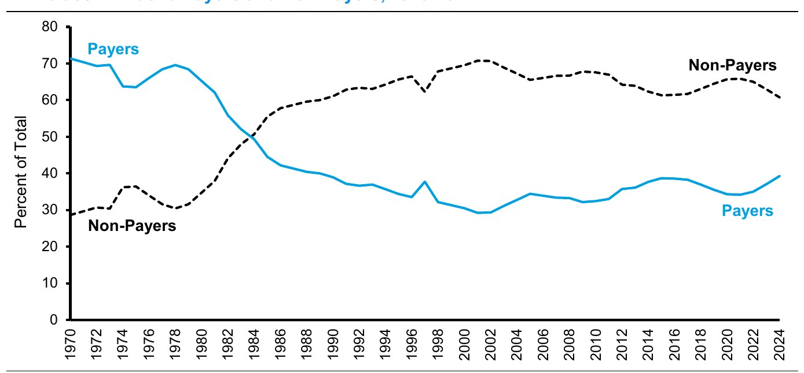
投资者必须把股息全额再投资回该股票，才能获得股东总回报。这其中有两个问题：投资者通常并不会把股息再投资回股票，而且股东总回报并未考虑税收和其他交易成本的作用。
An investor must reinvest dividends back into the stock in full to earn the TSR. There are two problems with this. Investors generally do not reinvest their dividends back into the stock and TSR does not consider the role of taxes and other transaction costs.近年来的大量研究表明，很少有机构投资者或个人投资者把股息再投资于支付股息的那只股票。121 投资者并不以同样的方式看待价格升值与股息。此外，许多投资者和市场评论人士陷入了“免费股息谬论”（free dividends fallacy），认为股息是抵御价格波动的缓冲，却没意识到股息是以价格水平为代价的。122
Substantial research in recent years shows that few institutional or individual investors reinvest their dividends in the stock of the payer. 121 Investors do not think of price appreciation and dividends in the same way. Further, many investors and market commentators fall for the “free dividends fallacy,” which deems dividends to be a buffer against price fluctuations without recognizing that dividends come at the expense of the price level. 122由于对再投资采用了不同的假设，一些学者认为股东总回报被低估了，另一些则认为它被高估了。123 这凸显出理解投资者实际上如何使用股息的重要性，也清楚表明“全额再投资”这一假设很少成立。
Using different assumptions about reinvestment, some academics conclude that TSRs are understated while others contend they are overstated. 123 This underscores the importance of understanding how investors actually use their dividends and makes clear that the presumption of full reinvestment is rarely correct.税收是这道题中重要的一环。持有应税账户股票的投资者必须为收到的股息缴税。图 39 展示了 1954 年至今资本利得与股息所适用的最高个人边际税率。假设只有股息中未被课税的部分被再投资，股东总回报就会下降。学术研究支持这样一个观点：分配环节的税率会影响股东回报。124
Taxes are an important part of the equation. Investors who own stocks in taxable accounts must pay taxes on the dividends they receive. Exhibit 39 shows the maximum individual marginal tax rate for capital gains and dividends from 1954 to the present. Assuming that only the non-taxed portion of dividends are reinvested drops the TSR. Academic research supports the view that the tax rate on payouts affects shareholder returns. 1242025 年上半年，我们覆盖范围内公司的股息较上年同期增长了中个位数百分比（mid-single digits）。
Dividends for the companies in our universe grew in the mid-single digits in the first half of 2025 relative to the prior year.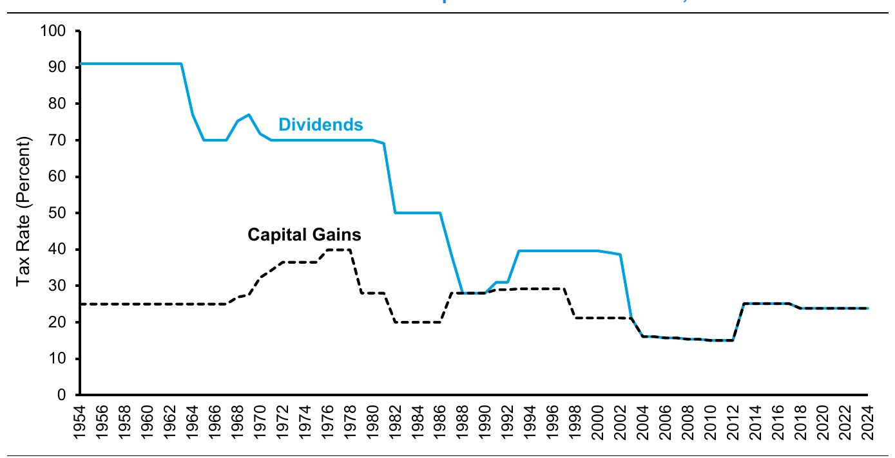
股份回购是公司向股东返还现金的第二种方式。股息对所有股东一视同仁，而通过回购拿到现金的只有那些向公司卖出股份的股东。
Share buybacks are the second way that firms return cash to shareholders. All shareholders are treated equally with a dividend, but only those shareholders who sell to the company get cash with a buyback.回购成了政客和少数经济学家的众矢之的，而他们似乎并不了解回购的运作方式，以及相关研究的结论。125 金融学教授肯·弗伦奇（Ken French）指出：
“回购是分裂性的。它把懂金融的人和不懂金融的人区分开来。”126Buybacks have become a lightning rod for politicians and a minority of economists who do not appear to understand how buybacks work and what the research says about them. 125 Ken French, a professor of finance, has noted, “Buybacks are divisive. They divide people who do understand finance from people who don’t.” 126
这种怨愤的一个表现是：2022 年的《通胀削减法案》（Inflation Reduction Act of 2022）于当年 8 月签署生效，其中包含对回购征收 1% 的消费税（按扣除发行后的净额计算，含股份支付（SBC））。这项税在经济上并无重大影响，但确实使回购要面对三轮税收：公司缴纳的企业所得税与消费税，以及投资者缴纳的资本利得税。
In one manifestation of this vitriol, the Inflation Reduction Act of 2022, signed into law in August of that year, includes a one percent excise tax on buybacks (net of issuance, including stock-based compensation). This tax is not of great economic consequence but does make buybacks subject to three rounds of taxes: corporate and excise taxes paid by companies, and capital gains taxes paid by investors.图 40 以美元金额和占净利润百分比两种口径展示了 1970 年至 2024 年的股份回购。在这段时期的后半段，公司用回购支付出去的净利润占比明显高于前半段。
Exhibit 40 shows buybacks as a dollar amount and as a percentage of net income from 1970 to 2024. The percent of net income that companies are paying out in buybacks was meaningfully higher in the second half of this period than it was in the first half.回购在近几十年变得重要得多，但公司使用回购已有很长历史。例如，1962 年纽约证券交易所（NYSE）上市的公司回购了 US$11 亿的股票（按 2024 年美元计为 US$93 亿），而同期资本开支为 US$373 亿（按 2024 年美元计为 US$3,160 亿）。127 当时的讨论聚焦于回购占交易量的比例。1934 年的《证券交易法》禁止操纵证券价格，但什么构成操纵并不总是清楚。事实上，证券交易委员会（SEC）不时指控公司通过回购计划操纵自家股票。128
Buybacks have become much more prominent in recent decades, but companies have used them for a long time. For example, in 1962 companies on the New York Stock Exchange bought back $1.1 billion of stock ($9.3 billion in 2024 dollars) versus $37.3 billion ($316.0 billion) in capital expenditures. 127 Discussions at that time focused on buybacks as a proportion of trading volume. The Securities and Exchange Act of 1934 prohibited the manipulation of securities prices, but what constituted manipulation was not always clear. Indeed, from time to time the Securities and Exchange Commission (SEC) charged companies with manipulating their stock through buyback programs. 1281982 年 SEC 通过 10b-18 规则后，情况发生了变化。该规则给予公司安全港保护，前提是其回购计划在方式、时点、价格和成交量方面遵循特定指引。SEC 多年来不断更新规则以适应市场状况。在 10b-18 规则颁布前五年，通过回购的支付占盈利的 5%；颁布后五年，则超过了 40%。129
This changed when the SEC adopted Rule 10b-18 in 1982. The rule grants companies a safe harbor provided they follow certain guidelines for their buyback programs in terms of manner, timing, price, and volume. The SEC has updated the rules over the years to reflect market conditions. Five years prior to the enactment of Rule 10b-18, the payout via buybacks was five percent of earnings. Five years after, it was more than 40 percent. 129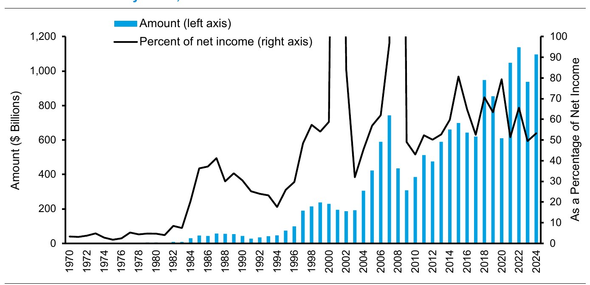
虽然在公司整体支付中回购已经超过股息，但整体支付水平却异常稳定。图 41 展示了 1970 年至 2024 年的股东回报率（shareholder yield，即回购加股息除以市场的股权资本），以及股权资本成本的估计值。我们同时展示了扣除股权发行前后的股东回报率。
While buybacks have surpassed dividends in overall corporate payouts, the aggregate payout has been remarkably steady. Exhibit 41 shows the shareholder yield, defined as buybacks plus dividends divided by the equity capital of the market, as well as an estimate of the cost of equity, from 1970 to 2024. We show the shareholder yield gross and net of equity issuance.毛口径的股东总回报从 1970 年相当于股权成本的 27% 上升到 2024 年的 38%。股东总回报是长期股市回报的关键驱动力之一，比单看股息率具有更强的可预测性。130
The gross total shareholder yield went from 27 percent of the cost of equity in 1970 to 38 percent in 2024. Total shareholder yield is among the key drivers of long-run stock market returns and provides more predictability than dividend yield alone. 130基于对回购动机的调查，我们把公司归入公平价值派（fair value school）、内在价值派（intrinsic value school）和会计驱动派（accounting-driven school）三类思路。131 一家公司可能同时受到不止一种思路的驱动。对持续持股的股东而言，内在价值派最为有利。
Based on surveys of the motivations to pursue buybacks, we place companies into the fair value, intrinsic value, and accounting-driven schools of thought. 131 Companies can be motivated by more than one school at a time. The intrinsic value school is best for continuing shareholders.公平价值派对回购采取平稳而一致的策略。管理层认为，无论股价高估还是低估，公司都会回购，但长期来看平均价格将是公允的。这种做法给股东提供了很大的灵活性：他们既可以继续持股、递延纳税义务，也可以按比例卖出一部分股份，从而制造“自制股息”（homemade dividends）。
The fair value school takes a steady and consistent approach to buybacks. Management believes that it will buy back shares when they are both overvalued and undervalued, but over time the average price will be fair. This approach offers shareholders substantial flexibility as it allows them to either hold shares and defer tax liabilities or create homemade dividends by selling a pro-rated number of shares.这一派别同时支持自由现金流假说（free cash flow hypothesis），即手中握有超额现金的管理层会倾向于投资于净现值为负的项目。无论通过回购还是派息把现金发出去，都能降低管理层把资金用于愚蠢用途的风险。132 研究还显示，许多公司如果持续回购股票会受益。133
This school also supports the free cash flow hypothesis, which says that managers who have excess cash will be tempted to invest in projects that have a negative net present value. Disbursing cash, whether through a buyback or a dividend, lessens the risk that management will deploy the funds foolishly. 132 The research also shows that many firms would do well by buying back stock consistently. 133内在价值派建立在市场择时（market timing）的理念之上：具体而言，公司只应当在股份看起来被低估时才回购。要把这事做对并从中获利，公司的管理层必须掌握股价未能反映的信息。
The intrinsic value school is based on the idea of market timing. Specifically, a firm should only buy back shares when they appear undervalued. To do this profitably, a company’s management must have information that the stock price fails to reflect.难点在于，对财务政策往往有很大发言权的 CFO 校准严重失当。例如，在一个典型季度的调查中，50%–80% 的 CFO 认为自家公司的股票被低估。134 CFO 在给自家公司股票估值时最常引用的方法，是“当前价格相对于历史高点和低点的位置”。135 这不能让人放心。
The challenge is that CFOs, who often have a large say in matters of financial policy, are badly miscalibrated. For example, 50-80 percent of them say the stock of their company is undervalued when surveyed in a typical quarter. 134 The most common method that CFOs cite for valuing the stock of their company is “current price relative to historic highs and lows.” 135 This does not instill confidence.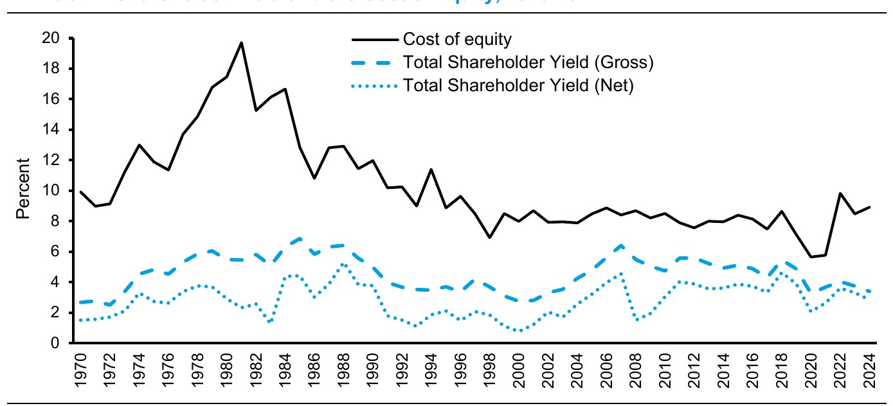
内在价值派的公司遵循股份回购的黄金法则（golden rule）：
“公司只有在股票交易价格低于其预期价值、且没有更好的投资机会可用时，才应该回购自己的股份。”136Firms in the intrinsic value school adhere to the golden rule of share buybacks: “A company should repurchase its shares only when its stock is trading below its expected value and when no better investment opportunities are available.” 136
黄金法则设定了一个绝对基准，同时承认相对价值的重要性。以低于内在价值的价格买入股票，是提高每股价值板上钉钉的办法。但如果公司的内部投资机会回报率高于回购，就应当优先考虑内部投资机会。
The golden rule sets an absolute benchmark while recognizing relative value. Buying stock below its intrinsic value is a surefire way to increase value per share. But companies should prioritize internal investment opportunities if they have higher returns than buybacks.理想情况下，CFO 应当对各类投资机会的预期价值排序，并从高到低依次出资。但现实中，CFO 把“手头有多余现金／流动性资产”列为决定是否回购股票最重要的因素。137
CFOs should ideally rank the expected value of various investment opportunities and fund them from highest to lowest. In reality, CFOs list “having extra cash/liquid assets” as the most important factor determining their decision to buy back stock. 137需要说清楚的是，回购低估或高估的股票对公司本身既不创造价值，也不毁损价值，它只是把财富从一组股东转移到另一组股东。回购低估股票的公司把财富从卖方转移到持续持股方；回购高估股票的公司则把价值从持续持股方转移到卖方。
To be clear, buying back undervalued or overvalued stock does not create or destroy value for the company. It transfers wealth from one group of shareholders to another. A company that buys back undervalued stock transfers wealth from the sellers to the ongoing holders. A company that buys back overvalued stock transfers value from the ongoing holders to the sellers.图 42 给出一个简单示例。公司价值为 US$100,000，流通在外股份为 1,000 股，即每股内在价值为 US$100（US$100,000 ÷ 1,000 股）。公司决定向股东返还 US$20,000。下面展示三种情景，可以看到当股价明显偏离内在价值、或者公司改为派发股息时会发生什么。
Exhibit 42 presents a simple example. The firm value is $100,000 and there are 1,000 shares outstanding, which means that the intrinsic value per share is $100 ($100,000 ÷ 1,000). The company decides to return $20,000 to shareholders. We show three scenarios. We can see what happens if the stock price deviates meaningfully from intrinsic value or if the company pays a dividend.首先要注意的是，分配之后公司的价值将为 US$80,000。没有价值被创造，也没有价值被毁损。分配前公司价值 US$100,000，分配后公司价值 US$80,000，而股东口袋里多了 US$20,000。我们要理解的是其中的财富转移。
The first thing to recognize is that the value of the firm following the disbursement will be $80,000. There is no value created or lost. Before the payout the firm is worth $100,000, and after the payout the firm is worth $80,000 and shareholders have $20,000 in their pocket. We want to understand the wealth transfers.先假设股价为 US$200，是公允价值的两倍。在情景 A 中，公司买入 100 股（US$20,000 ÷ US$200），此后公司价值为 US$80,000，流通在外股份为 900 股。卖方股东每股获利 US$100（US$200所得 − US$100价值 = US$100），持续持股的股东每股亏损 US$11.11（US$88.89持续价值 − US$100初始价值 = −US$11.11）。回购高估股票使卖方受益、持续持股方受损。
Let’s start with the assumption that the stock price is $200, double the fair value. In scenario A, the company buys 100 shares ($20,000 ÷ $200), which leaves $80,000 of corporate value and 900 shares outstanding. The selling shareholders gain $100 per share ($200 proceeds - $100 value = $100) and the continuing shareholders lose $11.11 per share ($88.89 continuing value - $100 initial value = -$11.11). Buying back overvalued stock benefits sellers at the expense of ongoing holders.再来看如果股价为每股 US$50、相当于公允价值一半时会发生什么。在情景 B 中，公司可以买入 400 股，此后公司价值为 US$80,000，流通在外股份为 600 股。卖方股东每股亏损 US$50（US$50所得 − US$100价值 = −US$50），持续持股的股东每股获利 US$33.33（US$133.33持续价值 − US$100初始价值 = US$33.33）。回购低估股票使持续持股方受益、卖方受损。
Now we look at what happens if the stock trades at $50 per share, one-half of its fair value. The company can buy 400 shares in scenario B. This leaves $80,000 of value and 600 shares outstanding. The selling shareholders lose $50 per share ($50 proceeds - $100 value = -$50) and continuing shareholders gain $33.33 per share ($133.33 continuing value - $100 initial value = $33.33). Buying back undervalued stock benefits the ongoing holders at the expense of sellers.为完成分析，情景 C 考虑公司向全体股东派发每股 US$20股息的情形。股价无关紧要：公司价值降至 US$80,000，每位股东收到每股 US$20（US$20,000 ÷ 1,000 股），只有税收因素才决定每位股东最终能留下多少。
To complete the analysis, scenario C considers the case when the company pays a $20 dividend to all shareholders. The stock price does not matter. The firm value drops to $80,000, each shareholder receives $20 per share ($20,000 ÷ 1,000), and only tax considerations will determine how much each shareholder can keep.这项分析还有其他几点值得指出。第一，如果你持有某家正在回购股票公司的股份，那么“不作为”就等于提高了你在公司的持股比例。如果你不希望持股比例上升，可以按持股比例卖出相应股份。这实际上制造了一种股息，同时保持了在企业中的持股比例不变。
Other features of this analysis are worth pointing out. First, if you own shares of a company buying back stock, inaction is equivalent to increasing your percentage ownership in the company. If you do not want your percentage stake to rise, you can sell shares in proportion to your ownership position. This effectively creates a dividend while maintaining the same percentage ownership in the business.奇怪的是，有些投资者声称更希望自己组合里持有的公司派发股息而不是回购股票。或许他们看重的是股息所传递的信号。但如果你持有某家公司的股份是因为你正确地认为它被低估，那么回购按定义就会提高每股价值。
Some investors, curiously, claim they prefer that the companies they hold in their portfolio pay a dividend rather than buy back stock. Perhaps the focus is on the signal a dividend conveys. But if you own shares of a company because you correctly think it is undervalued, buybacks will by definition increase value per share.尽管对管理层择时能力表示怀疑是合理的，实证研究在若干结论上趋于一致。第一，平均而言，公司能够对股票的卖出与买入进行择时，从而让持续持股的股东受益。138 但在高估股票的卖出中发生的财富转移，通常要大于在低估股票的买入中所发生的财富转移。139 最后，机构投资者在与公司交易方面通常比个人投资者更娴熟。140
While it would be reasonable to doubt management’s ability to time the market, the empirical research converges on some conclusions. First, on average companies can time the sale and purchase of equity so as to benefit ongoing shareholders. 138 But the wealth transfers are generally larger for sales of overpriced equity than they are for purchases of undervalued equity. 139 Finally, institutional investors are usually more adept than individual investors at transacting with companies. 140回购和股权发行往往向投资者传递有用的信号，85% 的财务高管认同或强烈认同“回购决策向投资者传递了关于我们公司的信息”。141 有若干因素决定信号的强弱。
Buybacks and equity issuance tend to be useful signals to investors, and 85 percent of financial executives agree or strongly agree that “repurchase decisions convey information about our company to investors.” 141 A few factors determine the strength of the signal.把已经宣布的计划执行完毕是个好开始。回购方式本身也在传递信念强度。公开市场购买（open-market purchase）是使用最普遍的方式，但它传递的信念最弱。荷兰式拍卖（Dutch auction）和要约收购（tender offer）如今已很少见，但它们传递出强烈的正面信号，尤其是在回购以债务融资时。142 最后，大规模计划比小规模计划传递更多信息；如果内部人持股比例较高、且高管表示无意卖出任何股份，信号的可信度就会提升。143
Completing programs that are announced is a good start. The method of buybacks also signals conviction. Open-market purchases, the most commonly used by far, signal the weakest conviction. Dutch auctions and tender offers are now rare but suggest a strong positive signal, especially when the buyback is funded with debt. 142 Finally, large programs convey more information than small ones do, and the credibility of the signal rises if there is high insider ownership and executives indicate that they do not intend to sell any shares. 143委托—代理问题（principal-agent problem）及其伴生的代理成本，在回购的讨论中也会出现。回购既可能解决代理成本，也可能制造代理成本。144 它解决代理成本的方式是把资本返还给股东，从而限制价值毁损型投资的可能性；当回购被用作让高管获利、或者仅仅为了让高管看起来更风光时，它就制造了代理成本。
The principal-agent problem and its associated agency costs show up in the discussion of buybacks. Buybacks have the potential to either solve or create agency costs. 144 They solve agency costs by returning capital to shareholders, thus limiting the potential for value-destroying investments. They create agency costs when buybacks are used as a means to enrich executives or simply to make them look good.会计驱动派利用回购来改善会计结果，包括提高每股收益（EPS）或减少与股份支付（SBC）相关的摊薄。例如，在一项调查中，
The accounting-driven school uses buybacks to improve accounting outcomes, including increasing earnings per share or reducing dilution associated with stock-based compensation (SBC). For example, in one survey,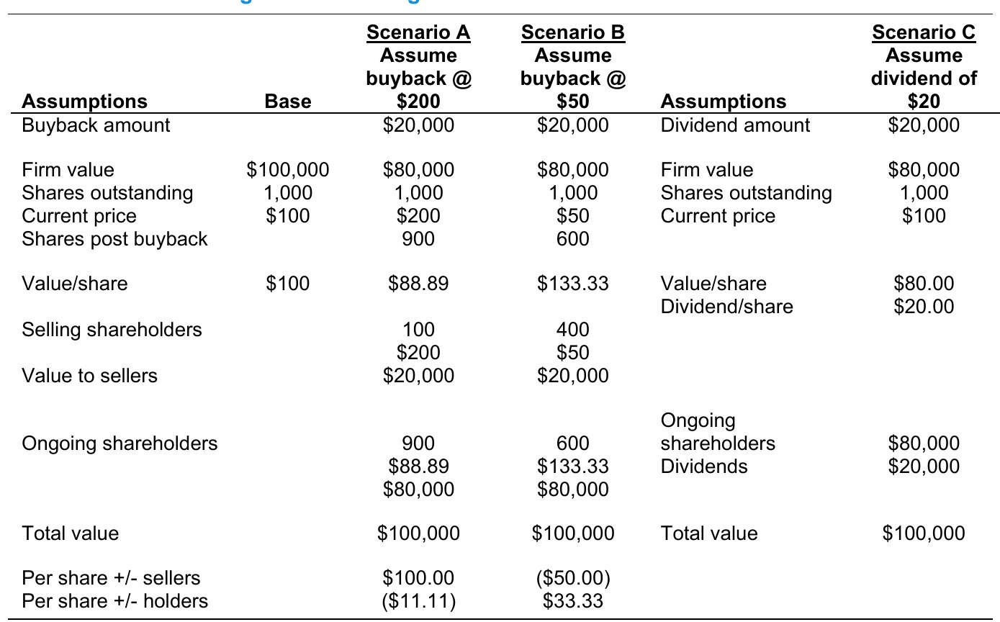
76% 的 CFO 表示，提高每股收益是决定回购股票时一个重要或非常重要的因素；68% 的 CFO 表示，抵消股份支付带来的摊薄是重要或非常重要的因素。145 研究表明，近年来的回购中有三分之一以上是为了抵消股份支付导致的股本增加。146
76 percent of CFOs said that increasing EPS was an important, or very important, factor in the decision to buy back stock. And 68 percent indicated that offsetting dilution from SBC was important or very important. 145 Research suggests that more than one-third of buybacks in recent years have gone to counter the increase in shares as the result of SBC. 146正如我们在并购中看到的，没有证据表明通过回购提高每股收益能提升股东价值。147 价值创造与每股收益变化是两个不同的概念，不应把每股收益的提升当作价值创造的替代指标。事实上，“回购总会提升每股收益”这一假设是错的。回购对每股收益的影响，取决于市盈率倍数，以及为该计划提供资金而放弃的税后利息收入或税后债务成本。148
As we saw with M&A, there is no evidence that increasing EPS increases shareholder value with buybacks. 147 Value creation and changes in EPS are separate concepts, and EPS increases should not be used as a proxy for value creation. Indeed, the presumption that buybacks always increase EPS is wrong. A buyback’s impact on EPS is a function of the price-earnings multiple and the foregone after-tax interest income or after-tax cost of debt used to fund the program. 148会计驱动派的结果或许无害，但动机并不纯粹，一旦与价值创造原则相抵触，就会制造代理成本。有充分的证据表明，公司回购股票是为了管理业绩（manage earnings），或为了达成能触发奖金的财务目标。149 这些目标与“管理层应以创造股东价值的方式配置资本”这一理念并不一致。
While results of the accounting-driven school may be benign, the motivations are impure and create agency costs if they conflict with the principle of value creation. There is plenty of evidence that companies buy back stock to manage earnings or to reach a financial objective that prompts a bonus. 149 These goals are inconsistent with the idea that management should allocate capital so as to create value for shareholders.了解管理层的思考过程与激励机制，有助于评估回购创造价值的潜力。实际上，大多数公司同时属于我们描述的多类思路之中。但投资者应当对那些依据会计结果而非经济实质来做决策的公司保持警惕。
Knowing about management’s thought process and incentives can help in assessing the value-creating potential of buybacks. In reality, most companies are in more than one of the schools we described. But investors should flag those companies making decisions based on the accounting results rather than on the economic merits.通过股息或回购把资本返还给投资者，可以让资本从前景较差的机会重新配置到前景更好的机会上。150 这是自由市场体系中的一项关键功能。图 43 展示了 1970 年至 2024 年的总净支付率（total net payout ratio，即股息加上净股份回购除以净利润）。总体而言，这一比率在后半段远高于前半段。
Returning capital to investors through dividends or buybacks allows for the reallocation of capital from opportunities that are less promising to those that are more promising. 150 This is a vital function in a free market system. Exhibit 43 shows the total net payout ratio, defined as dividends plus net share buybacks divided by net income, from 1970 to 2024. Overall the ratio was much higher in the second half than the first half of this period.在我们覆盖的公司中，2025 年上半年的股份回购较 2024 年同期增长约 13%。增幅主要来自第一季度，第二季度同比基本持平。
Share buybacks were up about 13 percent in the first half of 2025, versus 2024, for the companies within our universe. Most of that increase came in the first quarter, with the second quarter relatively flat year-over-year.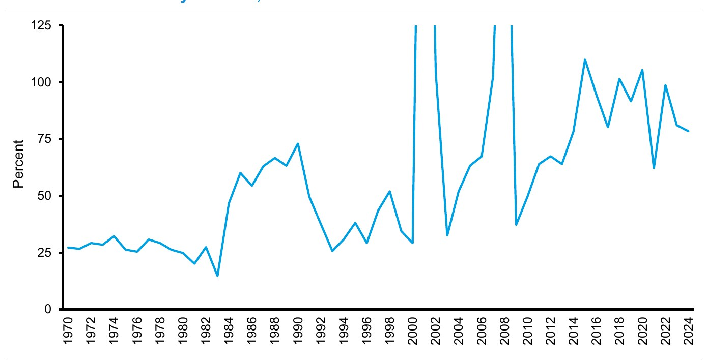
在一个理想世界里，企业高管会配置资本，以最大化长期每股价值。但出于多数情况下可以理解的原因，有大量证据表明他们未能达成这一目标。151
In an ideal world, corporate executives would allocate capital to maximize long-term value per share. But, for reasons that are mostly understandable, there’s a lot of evidence they fall short of this objective.在 2022 年向美国金融协会所作的会长演讲中，杜克大学金融学教授 John Graham 对财务高管实际上如何决策做了很好的总结，其依据是他长达数十年的调查问卷回答：152
基于这些发现，我们勾勒出一个四部分框架，用于评估管理团队资本配置技能的质量。我们从过去的资本配置行动开始。正如沃伦·巴菲特所指出的：“在任职十年之后，一家每年留存相当于其净值 10% 盈利的公司的 CEO，将对这家公司运转中的全部资本中超过 60% 的部署负责。”154
As Warren Buffett notes, “After ten years on the job, a CEO whose company annually retains earnings equal to 10% of net worth will have been responsible for the deployment of more than 60% of all the capital at work in the business.”接下来，我们建议研究一家公司的投入资本回报率（ROIC）和增量投入资本回报率（ROIIC）。第三部分是对一家公司的公司治理与激励机制的仔细研究。最后，我们考察管理层的过往决策与资本配置的五条原则相比表现如何。
我们从考察管理层过去如何花钱开始评估。我们分别考察投资（并购（M&A）、投资性销售、一般及行政费用（剔除研发）（investment SG&A ex-R&D）、资本开支（capex）、投资性研发（R&D）和营运资本）与派付政策（股息、股份回购和偿债）。
一家企业的价值是未来自由现金流（FCF）的现值，自由现金流定义为税后净营业利润（NOPAT）减去对未来增长的投资。在传统算法中，NOPAT 由销售额与销售增长、营业利润率以及现金税率驱动。
投资由营运资本的变动、扣除折旧后的资本开支，以及扣除资产剥离后的收购驱动。注意，在传统算法中，投资性 SG&A（剔除研发）和投资性研发并不资本化。我们对相关数据做了这样的调整。但无论是否做这些调整，自由现金流都是一样的。
阿尔弗雷德·拉帕波特（Alfred Rappaport）把上述科目称为“价值驱动因素”，因为它们决定了在现金流折现模型中驱动价值的自由现金流。155 拉帕波特把投资类价值驱动因素定义为：销售额每变动 US$1，公司投向各项用途的百分比。这使我们能够对这些指标进行比较。
例如，如果一家公司的净营运资本在某一年增长 US$200，而销售额增长 US$1,000，那么增量营运资本比率为 20%（US$200 ÷ US$1,000）。如果资本开支为 US$500、折旧为 US$200，则增量固定资本比率为 30%（[US$500 - US$200] ÷ US$1,000）。我们可以用同样的方法计算“增量并购减去资产剥离”或其他任何投资的价值驱动因素。
For instance, if a firm’s net working capital grows by $200 in a given year and its sales grow by $1,000, the incremental working capital rate is 20 percent ($200 ÷ $1,000). If capital expenditures are $500 and depreciation is $200, the incremental fixed capital rate is 30 percent ([$500 - $200] ÷ $1,000).这使我们能够研究一家公司过去实际上是如何投资的。我们能追溯得越久越好，同时记录下当时负责资本配置决策的是哪些高管是有用的。以下是微软（一家跨国科技公司）截至 2025 财年的五个年度的数据：156
这些数字让我们立刻看到公司把钱投在了哪里。在这种情形下，净营运资本是现金的来源。资本开支是现金的最大用途，其次是并购和内部生成的无形资产。
以下是思科系统（一家数字通信公司）截至 2025 财年的过去五年的数据：
净营运资本对思科而言同样是现金来源。但在这里我们看到，公司净投资的绝大部分流向并购，对内部生成无形资产的投资为正，而公司的资本开支低于维持性水平。业务分析师自然会想弄清管理层如何做并购决策。对过往交易结果的复盘同样是恰当的。
But here we see the vast majority of the company’s net investment is going to M&A, investment in internally-generated intangibles is positive, and that the company’s capital expenditures are below the maintenance level. A business analyst would logically seek to understand how management makes its M&A decisions. A review of the results from past deals would also be appropriate.审视过去的资本配置决策也让我们能够找到拐点。例如，微软的资本开支急剧上升，从 2022 财年到 2025 财年增长了两倍，以支持其云计算平台 Azure 的增长。亿滋国际（Mondelez International，一家跨国食品和饮料公司）通过把现金转换周期从 2013 年的 39 天降至 2024 年的 -30 天，释放了估计 US$60 亿的净营运资本。此类变化应当纳入战略分析，用以评估一家公司未来的投资和利润。
派付政策同样重要。我们已经确立：股息一旦开始派发就具有粘性，其维持的重要程度与对业务的投入相当。股份回购则波动更大，我们希望理解其背后的动机。
回到我们的例子。截至 2025 财年的五个年度，微软的股东回报率（shareholder yield）为 1.8%。公司向股东返还了 US$2,090 亿，其中 48% 以股息形式、52% 以净股份回购形式。这些年份中股息支付金额的最高值与最低值之差为 US$76 亿，而净回购的同一差额为 US$156 亿。
For the five years ended fiscal 2025, Microsoft’s total shareholder yield was 1.8 percent. The company returned $209 billion to shareholders, 48 percent in dividends and 52 percent in net share buybacks. The difference between the highest and lowest amount of dividends paid in those years was $7.6 billion, whereas the same difference for net buybacks was $15.6 billion.思科截至 2025 财年的五个年度的股东回报率为 5.5%。公司向股东返还了 US$590 亿，其中 54% 以股息形式、46% 以净股份回购形式。这些年份中股息支付金额从最高到最低的区间仅为 US$3 亿，而净回购的离散度为 US$49 亿。
我们需要在一家公司的资本结构这一背景下评估投资与派付。大多数公司会维持其目标债务权益比，即便环境显示作出调整是合理的。理解这些决策背后的理由与动机至关重要。我们也希望看到管理层的决策过程是否与创造长期每股价值相一致。
归根结底，高管是有血有肉的人，并不总是自律和理性的。一个典型例子是：尽管大多数大型公司表示它们总是或几乎总是使用净现值法评估项目或收购，但申请资源的业务部门负责人的声誉同样重要，高管的“直觉”也是如此。157
As a case in point, while most large companies say they always or almost always use the net present value rule to evaluate projects or acquisitions, the reputation of the division manager requesting resources is also important, as is senior management’s “gut feel.”管理层的目标应当是通过进行那些回报率超过资本机会成本的投资来创造价值。ROIC 是衡量一家公司是否达成这一目标的一种方式。
我们的报告《投入资本回报率：如何计算 ROIC 以及处理常见问题》（Return on Invested Capital: How to Calculate ROIC and Handle Common Issues）与《ROIC 与无形资产：无形资产调整如何影响 ROIC 之观察》（ROIC and Intangible Assets: A Look at How Adjustments for Intangibles Affect ROIC）详细说明了如何计算 ROIC。158 其中还讨论了如何处理内部生成的无形资产投资——这类投资在资产负债表上体现为资产，然后在利润表上摊销。
ROIC 的分子是 NOPAT，与我们在自由现金流计算中看到的数字相同。NOPAT 是企业的现金盈利，不含债务利息支出或超额现金利息收入的影响。因此，无论公司选择何种债务与权益的组合来为该企业融资，NOPAT 都保持不变。
投入资本是公司产生 NOPAT 所需的净资产；等价地说，它是公司用来为这些资产融资的债务与权益的组合。每年的投资决定了投入资本的变动。这样我们就能看到自由现金流与 ROIC 之间的联系：投资从 NOPAT 中扣除，得到自由现金流；NOPAT 是 ROIC 的分子；而投入资本是累计的投资。
Investment is subtracted from NOPAT to determine free cash flow. NOPAT is the numerator of ROIC. And invested capital is accumulated investment.ROIC 高于资本成本意味着一家公司在创造价值。例如，假设一家公司的 NOPAT 为 US$150，投入资本为 US$1,000，资本成本为 7%。那么该公司 15% 的 ROIC（US$150 ÷ US$1,000）将大大高于 7% 的资本成本。同样投入资本但只赚 US$50的企业，ROIC 为 5%（US$50 ÷ US$1,000），低于资本成本。
That company’s ROIC of 15 percent ($150 ÷ $1,000) would be well in excess of the 7 percent cost of capital. A business with the same invested capital earning $50 would have an ROIC of 5 percent ($50 ÷ $1,000), below the cost of capital.图 25 展示了经内部生成无形资产调整与未经调整的 ROIC。数据剔除了金融行业的公司，覆盖 1970 年至 2024 年。基于调整后的算法，对于销售额至少 US$1 亿（按 2024 年美元计）的公司，约有一半的观测值的 ROIC 超过资本成本。
市场看的是未来，沉没成本不决定未来价值。因此，我们希望理解边际上的变化。增量投入资本回报率（ROIIC）使我们能够做到这一点。ROIIC 衡量的是 NOPAT 的变动相对于投入资本变动的比例。这一计算忽略了沉没成本，但它做了一个很强的假设：现有投入资本的回报率保持不变。这往往并不现实。
ROIIC measures the change in NOPAT relative to the change in invested capital. While the calculation ignores sunk costs, it makes the strong assumption that the return on the existing invested capital is unchanged. This is often unrealistic.ROIIC 的计算公式如下：
增量投入资本回报率（ROIIC）＝（第 1 年 NOPAT − 第 0 年 NOPAT）÷（第 0 年投入资本 − 第 -1 年投入资本）
ROIIC 试图量化的是：某一年所做的投资，如何影响下一年的 NOPAT。
ROIC 和 ROIIC 的一个局限是，结果可能非常嘈杂。这一点对于那些偶尔才进行大额投资的公司尤其如此，与那些持续稳定投资的公司相比更是如此。这也是为什么 ROIC 通常不适合用来评估并购。交易一旦完成，分母——投入资本——立即上升，而分子——NOPAT——只会在一段时间内才反映该交易的现金流。
This is why ROIC is typically a poor way to assess M&A. Once the deal is done, the denominator, invested capital, goes up right away while the numerator, NOPAT, reflects the deal’s cash flows only over time.举一个例子：微软以 US$690 亿收购电子游戏公司动视暴雪（Activision Blizzard）。该交易在 2024 财年完成，结果是微软传统口径的投入资本增加约 30%，而按内部生成无形资产调整后的投入资本从 2023 财年到 2024 财年膨胀了 20% 以上。
缓和 ROIIC 波动的方法是按三年或五年期间计算。例如，三年滚动 ROIIC 取过去三年 NOPAT 的变动（第 3 年 NOPAT − 第 0 年 NOPAT），除以滞后的投入资本变动（第 2 年投入资本 − 第 -1 年投入资本）。微软从 2021 财年到 2025 财年的三年滚动 ROIIC 见图 44。
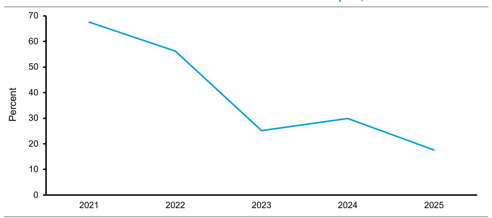
ROIIC 上升或处于高位，既可能意味着一项业务的资本效率正在改善，也可能意味着它正处在经营杠杆为正的时期。经营杠杆以 NOPAT 的变动除以销售额的变动来衡量，用以说明一项业务吸收固定成本的能力。经营杠杆可以为正也可以为负，且通常是暂时的。尽管如此，管理层和投资者对经营杠杆的识别存在时滞，这可能带来机会。
高管最终要对资本配置负责。因此，评估他们的动机与激励很重要。理想状态是一家公司拥有包括 CEO 和 CFO 在内的核心管理层，他们拥有“价值的北极星”。北极星之所以能提供可靠的方向感，是因为它在黑夜的天空中清晰可见，而且整夜乃至整年都保持稳定。
The ideal is a company that has senior leadership, including the CEO and CFO, who have a “North Star of value.” The North Star provides a dependable sense of direction because it is readily visible in the sky when it is dark and is stable throughout the night and year.没有北极星的高管，会被他们从股东、利益相关者、投资银行家和媒体那里听到的各不相同、有时相互冲突的观点所左右。而那些以创造长期每股价值的纪律为根基的高管，则能保持航向稳定，并利用他们对企业所掌握的非对称信息，为长期持股的股东谋利。
理解一家公司的主导目标——对公司根本上想要达成之事作出清晰表述——至关重要。这一目标指引着公司的文化、沟通、薪酬和资本配置，也应当揭示公司的时间跨度（时间视界）。公司治理是一套制衡机制，用来确保高管忠实地服务于公司的主导目标。159
主导目标通常聚焦于股东或利益相关者。近年来公司纷纷把重心转向利益相关者。我们认为这是一种伪选择。160 寻求构建长期股东价值的公司，必须照顾好其所有利益相关者，包括雇员、客户和供应商。创造长期价值同时也意味着尽量减少负面外部性，并与立法者和监管机构合作。
We believe this is a false choice.主导目标之所以重要，是因为它指引着高管面对不可避免的取舍时的决策。清晰的目标也为利益相关者提供了选择参与或退出与公司关系的基础，并让外部人士能够评价管理者的选择。
有意寻找致力于构建长期价值的公司的投资者，需要考虑代理成本（agency cost）。161 学者指出，代理成本在三个方面造成了管理者利益与股东利益之间的冲突。162
第一，对管理者最有利于提升价值的事，可能不同于对股东最有利于提升价值的事。一般来说，高管掌控的资源越多，获得的报酬就越高。例如，他们可能有动机去做那些毁损价值的并购交易，或者回避那些能够创造价值的资产剥离。
风险偏好是另一个潜在冲突来源。大多数投资者把一家公司的股票作为多元化投资组合的一部分持有，通常通过共同基金或交易所交易基金（ETF）。大多数高管的财富则主要投资于其所在公司的股票。因此，高管所追求的风险水平可能低于股东认为合适的水平。CFO 采取保守政策这一事实支持这一看法。
最后一个冲突领域涉及时间跨度。当薪酬计划的时间跨度短于投资者用来评估一项投资吸引力的时间跨度时，就会出现错配。例如，近 80% 的财务高管表示，他们愿意放弃一项创造价值的投资，以实现短期盈利。163
高管薪酬是使管理者与股东利益一致的一种方式。但设计一套为管理者提供恰当激励以创造长期价值的方案并不容易。我们可以从两个极端开始考察。
完全与价值创造无关的薪酬，从一开始就没有提供创造价值的激励。我们远远还没到那一步。美国前 100 家上市公司中，超过 60% 的 CEO 薪酬以股票期权或股票奖励及长期激励计划的形式发放。在美国前 3,000 家上市公司中，这类薪酬占总薪酬的一半以上。164
另一个极端是 CEO 拥有全部非公开股份。这本应消除人们对代理成本的担忧。但请注意投票权控制与经济所有权之间的区别。研究表明，采用双重股权结构的公司——即一类股票的每股投票权多于另一类——可能产生代理成本。165 创始人通常持有允许多重投票权的那一类股份，从而实质上确立了对公司的控制。
美国 CEO 薪酬的增长率一直远超普通员工薪酬的增长率，也远超整体经济增长。过去 40 年，CEO 的薪酬构成已从以工资和奖金为主，转向以股票为主。CEO 的财富对股价变化的敏感度越来越高。166 如今，美国前 100 家上市公司的普通 CEO，股价 1% 的变化会带来约 1.5% 的财富变化。167 向基于股份的薪酬转变看似降低了代理成本，但可能带来其他挑战。
第一个问题是，雇员薪酬的形式本身就会影响资本配置。这在股份回购上表现得最为直接。168 作为背景，美国公司在 2024 年报告的 SBC（股份支付）费用为 US$3,140 亿，股份回购总额为 US$1.1 万亿。如前所述，超过四分之三的 CFO 表示，对冲 SBC 造成的股权稀释是回购股票的重要或非常重要原因。
To put this in context, companies in the U.S. reported expense for SBC of $314 billion and gross share buybacks of $1.1 trillion in 2024. As noted earlier, more than three-quarters of CFOs said that offsetting dilution from SBC was an important or very important reason to buy back stock.图 45 展示了美国公司按规模排序的平均 SBC 占销售额的百分比。SBC 占销售额的百分比往往随公司规模变大而下降。规模最小的公司，SBC 平均约占销售额的 7%，而最大的公司只有约 1%。SBC 与销售额之比的中位数在绝对水平上更低，走势也类似。
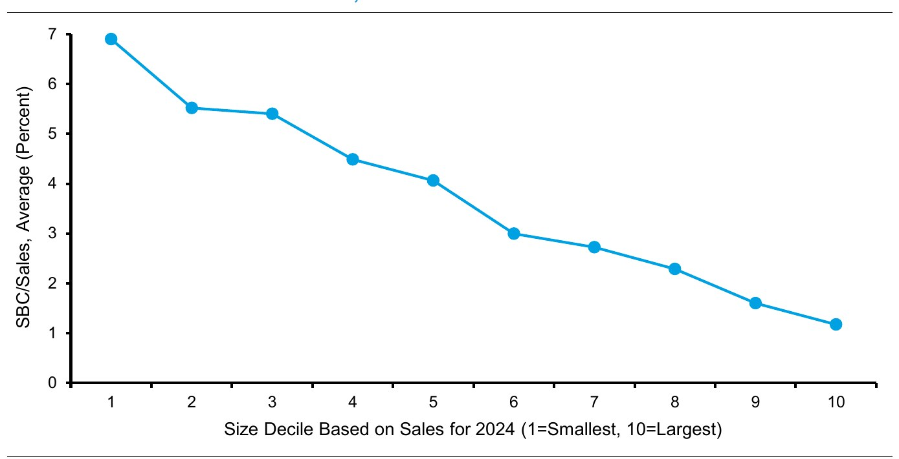
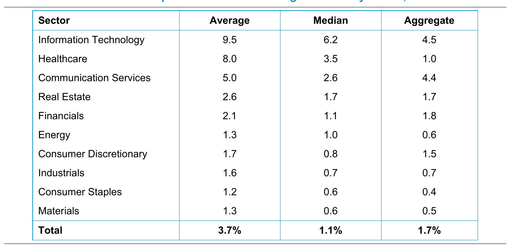
SBC 的重要性也因行业而差异极大。例如，信息技术和医疗保健行业的 SBC 发行规模远高于材料行业和必需消费品行业（见图 46）。管理层应当脱离其薪酬政策，单独评估股份回购方案的价值。但现实中，公司把两者是绑在一起的。
SBC 是否有效地把管理层的注意力聚焦在长期业绩上，是一个争论激烈的话题。169 关于 CEO 薪酬驱动因素的各种竞争性理论——包括股东价值最大化、租金攫取以及其他制度性因素——在研究中都获得了一定的支持。170 但 SBC 实际上受到一系列因素的制约。
首先，公司的股价只是衡量公司业绩的一个粗糙指标。影响股价的其他因素——包括总体经济状况、利率变化、通胀预期和股权风险溢价——可能比公司经营结果更重要。这些外部因素大多不在管理层的控制范围内。171
其次，股票市场就投资机会、当前资本配置决策和过往资本配置决策向管理层提供的信息，在短期内可能非常嘈杂。172 我们在并购交易的最初市场反应中看到过这一点。这些反应平均而言方向正确、相对无偏，但也时不时会出错。这一问题又因很少有高管理解股票市场所反映的对未来财务业绩的预期而进一步加剧。173
Further, the information the stock market provides to managers regarding investment opportunities, current capital allocation decisions, and past capital allocation decisions can be very noisy in the short run.我们待会儿会回到这些考量上。但在此之前，我们可以看看公司最常用的绩效型长期激励指标。图 47 展示了由专注于高管薪酬的咨询公司 FW Cook 对标普 500 中最大的 250 家公司所做的年度调查在过去 5 年的结果。近年来，股东总回报（TSR）已成为首位的激励指标。其后的指标则与传统利润挂钩，例如每股收益（EPS）和资本效率。
TSR 位列榜首或许值得乐观。但仍需谨慎。如我们此前讨论的，TSR 可能成为实际股东回报的误导性衡量。这会在触发高管薪酬的条件与股东所获得的回报之间造成落差。
此外，只有当管理层懂得如何创造价值时，TSR 才具有相关性。在我们整个讨论中，我们看到过许多管理层的决策与构建长期价值相矛盾的例子。
最后，在决定 TSR 时，外部因素可能比公司特定的因素更重要。当 TSR 被当作绝对指标、而非相对于恰当基准的指标来使用时，它就会失效，因为它没有隔离出该公司的自身结果。
拥有恰当北极星的公司相信股价终将追随价值，因而致力于创造长期每股价值。在价格未能恰当反映价值的情形下，管理层可以改进与金融界的沟通，也可以通过买卖股票采取行动。还有充分的证据表明，那些清楚自己创造长期价值的使命、并有效传递这一信息的公司，能够吸引到优质股东。在这些情形下，由于股东的目标与期望同管理层的一致，股东更像是商业伙伴。174
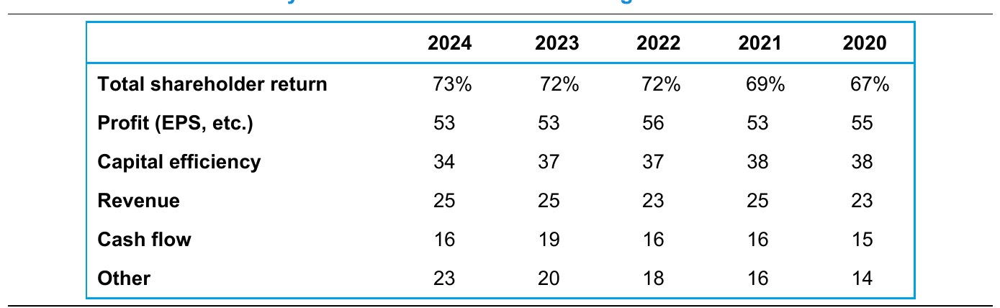
激励性薪酬是公司治理结构的一部分，它支撑着主导目标。如果主导目标聚焦于创造长期每股价值，那么薪酬将具备一些支持审慎资本配置的特征。175
董事会应当为高管设计这样的薪酬：股票期权或限制性股票单位（RSU）以上市大盘或一组恰当的同业为基准进行指数化挂钩。指数化有助于削弱运气的成分；如果外部因素对同业与对本公司的影响相似，指数化就能隔离出技能本身的贡献。雇员的激励性薪酬应当与他或她能够控制的事情相关联。这会把享有基于股份薪酬资格的雇员范围缩小到那些能够影响股价的人。
大多数雇员对股价几乎没有个人影响力。因此，高管以及与经营单元打交道的一线员工的薪酬，应当基于该单元经营价值驱动因素的长期目标，包括销售增长、营业利润率以及某种投入资本回报率的度量。
过于粗糙的价值驱动因素可以细化为“价值的领先指标”（leading indicators of value），即那些能够向上汇总到价值驱动因素的度量。例如，一家计划一年内开设十家门店的零售商，其价值领先指标可能包括确定门店选址和签署租约。激励应当与员工能够控制的事情保持一致。
正如沃伦·巴菲特所写，一份好的计划“应当：（1）针对该特定经营业务的经济特征量身定制；（2）在性质上简单，以至于其实现程度可以被轻易衡量；以及（3）与计划参与者的日常活动直接相关。”176
关于短期还是长期的争论，在很大程度上是空洞的。177 有些投资很快就有回报，有些则要等到遥远的未来。目标始终应当是最大化长期每股价值。
尽管如此，几乎毫无疑问高管和投资者都感受到短期压力。也有大量证据表明存在分流（sorting）现象：短期取向的投资者寻找那些提供大量“信息事件”和交易机会的公司，而长期取向的投资者则试图找到那些拥有真正价值北极星的公司。178 研究支持这样的观点：长期投资者能够强化公司治理并减少管理层的不当行为。179
许多公司看起来会从采用比现在更长的时间跨度中获益。图 48 展示了时间跨度（相对于行业平均衡量）与资产回报率（ROA）之间的取舍关系。资产回报率定义为净利润除以总资产。该图显示，一家公司的 ROA 会随着其着眼点比同业更远而提高，直到某个点，此后收益递减。研究者构建的模型表明，把公司的时间跨度拉长到最优水平，会使其预测 ROA 提高到 4.6%，而整体平均 ROA 为 3.3%。180
The model the researchers developed suggests that a lengthening of a firm’s time horizon to the optimal level increases the company’s predicted ROA to 4.6 percent, where the overall average ROA was 3.3 percent.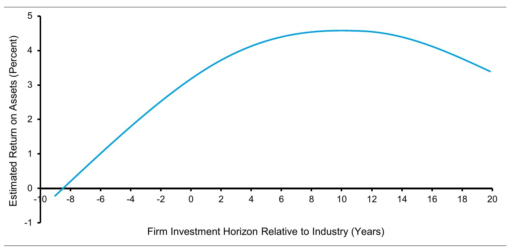
分析的脉络应当是：从治理目标（governing objective），到公司治理，再到激励。治理目标解释了公司打算如何面对所有企业都面临的取舍，并提供了判断管理层是否真正聚焦于价值的线索。公司治理通过建立恰当的决策流程、组织结构与激励机制来支撑治理目标。拥有正确激励的员工会发现，自己的利益与治理目标是一致的。
资本配置的五条原则。管理顾问 James McTaggart、Peter Kontes 与 Michael Mankins 在《The Value Imperative》一书中描述了资源配置的四条原则。181 我们认为这些原则对思考资本配置很有帮助，并补上第五条、强调行动的一条。这些原则既能为衡量管理层在资本配置上的心态提供框架，也与 Will Thorndike 在其著作《The Outsiders》中提出的"外部人士清单"（The Outsider's Checklist）一致。182
前面讨论中的两个实证观察在这里很关键。第一，绝大多数公司低于事业部之间最优资本配置的阈值——这意味着有些事业部拿到的投资太多，另一些拿到的太少（见图表 1）。第二，CFO 天性保守。这种对改变的厌恶，可能让公司在动态的世界里步调错位。
零基准的做法问的是这样一个问题："为了支撑那个能创造最多财富的战略，这门生意该配置多少资本（以及多少人）？"183 答案是面向未来的，并不排斥在合适的时候减少净投资。
The zero-based approach asks the question, "What is the right amount of capital (and the right number of people) to have in this business in order to support the strategy that will create the most wealth?" The answer is based on the future and does not rule out reducing net investment when appropriate.研究显示，在内部资源配置上更主动的公司，其资产回报率（ROA）高于更保守的公司。184 还有证据表明，擅长内部资本配置的公司，在外部配置上同样有效。185
资本配置应当服务于公司的战略目标。但通常发生的并不是这样。小额投资决策通常在业务单元内部做出，中等规模的决策交给事业部经理，大额决策则交到 CEO 或董事会手里。这些流程是为了控制钱怎么花，但可能无法把决策放进更完整的背景中。
Capital allocation should support a company's strategic goals. But that's not what usually happens. Small investment decisions are usually made within a business unit, medium decisions go to unit managers, and large decisions go to the CEO or board of directors. These are processes to control how money is spent but can fail to put decisions into a broader context.资本配置应当从对一项战略的评估与批准开始，再去确定哪些项目支持它。这个区分经常被忽略：可能存在这样的项目——它在一个失败的战略里通过了回报率检验；也可能存在这样的项目——它虽然通不过回报率检验，却在支撑一个成功的战略。
Capital allocation should start with an assessment and approval of a strategy, and then determine which projects support it. This distinction is commonly overlooked. There can be projects that pass a rate-of-return test within a strategy that fails. There can also be projects that fail the rate-of-return test that support a winning strategy.举个例子：某公司在 一个履约中心里发现了一个自动化项目，回报率很高，于是获批投资。与此同时，公司意识到整个行业产能过剩，为支撑战略需要关闭一些履约中心。这就是一个坏战略里的好项目。
For example, you might imagine a company that identifies an automation project within a fulfillment center that has a high rate of return and hence gets approved for investment. At the same time, the company realizes that the industry has excess capacity and that some fulfillment centers need to be closed to support the company's strategy. That is a good project within a bad strategy.巴菲特的"制度性强制"概念在这段讨论里同样适用。经常的情况是：CEO 先做出投资决定，然后才去找数字来支持这个选择。大多数时候，财务团队里会有人做一张表格来论证这笔投资的合理性。正如巴菲特所说："领导者对任何生意的渴求，无论多么愚蠢，很快都会得到其部下准备的详尽回报率研究与战略研究的支持。"186
Warren Buffett's concept of the institutional imperative is also relevant in this discussion. Often, CEOs make investment decisions first and only then make sure they have figures to support the choice. In most cases, a member of the finance team will create a spreadsheet that justifies the investment. As Buffett says, "Any business craving of the leader, however foolish, will be quickly supported by detailed rate-of-return and strategic studies prepared by his troops."一个成功的商业战略，是由一组项目支撑起来的，其中有些项目单独看并不吸引人。重要的是这一组（bundle）的价值。
在大多数成熟公司里，实践中的态度是：资本"稀缺但是免费"。之所以说稀缺，是因为可用于再投资的资本被认为受限于生意本身产生的现金流和公司的分红承诺。之所以说免费，是因为企业领导者有时没有把机会成本与内部产生的现金联系起来。这与 CFO 们表现出的保守、以及黏性的决策流程是一致的。
更合适的心态是：资本是可获得的，但有其成本。资本除了经营现金流之外还有若干来源：一是把那些回报不足的事业部的资本重新部署——或减少其投入资本，或干脆把生意卖掉——转投到有良好价值创造前景的事业部；资本市场也是资本来源，尽管提供资本的意愿往往具有周期性。
正确的 mindset 是：无论来自内部还是外部，所有资本都有机会成本。当企业只顾着增加利润或每股收益、却没有认真计算价值时，问题就出在这里。
The right mindset is that all capital, whether from an internal or external source, has an opportunity cost. This can present a problem when firms make decisions that add to earnings or earnings per share without properly reckoning for value.股份支付（SBC）在这个语境下同样相关。187 股份支付是一项正当的费用，但把它加回到经营现金流里，会制造"这门生意产生的现金比实际更多"的假象。SBC 本质上是一项融资活动——公司通过发行股权来支付员工薪酬。SBC 可能是招募员工、缓解流动性问题、降低代理成本的有效方式，但它是一项需要被正确计入的成本。
一项投资——无论是由企业还是由资金管理人做出——都只会以某种概率成功。追求增长的公司，有时会把资本配置到没能兑现的投资上。新业务和新产品的失败率很高。比如 Amazon——一家以电商与云计算业务闻名的跨国科技公司——有一长串失败的尝试。188 要点在于：公司不该继续对一个没有价值创造前景的战略或业务initiative死心塌地。那样只会持续消耗人力与财力。
An investment, whether made by a business or a money manager, will succeed only with some probability. Companies that aspire to grow will sometimes allocate capital to investments that do not pay off. New businesses and products fail at a high rate. ... The point is that companies should not remain wedded to a strategy or business initiative that has no prospects to create value. Doing so drains human and financial resources.企业应当投资于创新，同时在某个战略不太可能兑现时果断止损。这是对"退出本身有价值"的明确承认。189 此外，正如我们所见，剥离业务可能是合算的，因为它对买方的价值高于对卖方的价值。退出业务还能降低公司内部交叉补贴的风险，并让最优秀的人才去管理那些创造最多价值的业务。
优秀的资本配置者，对旗下每一门生意都始终分得清"价格"与"价值"的差别。同样重要的是，当这个差距大到足以抵消税费等摩擦成本时，他们愿意采取行动去创造价值。
正如开篇所说，大多数资本配置问题的答案都是"视情况而定"。对价值与价格有清醒判断的管理层，才能在正确的时间做正确的事：有时是买，有时是卖，而在多数情况下是什么都不做。高管通常更愿意买而不是卖，尽管经验上买方的结果通常不如卖方。
资本配置是创造价值不可或缺的一部分，也是管理层的首要职责之一。但并非所有高管都知道如何有效地配置资本。代理成本是良好资本配置面临的主要挑战之一：掌控公司资源的高管，可能做出对自己有利的决策，而不是做符合股东利益的事。事实上，基于会计结果、或者与价值创造无关的激励方案，会促成不利于长期股东利益的决策。我们认为，资本配置的恰当目标，是提升长期的每股价值。
Capital allocation is an essential part of creating value and is one of management's prime responsibilities. But not all senior executives know how to allocate capital effectively. Agency costs are one major challenge to good capital allocation. ... We believe the appropriate objective of capital allocation is to add long-term value per share.我们先从资本的来源看起，观察到美国公司的大部分投资是靠内部融资的。接着我们考察资本的用途，看到并购（M&A）、剔除研发后的投资性 SG&A、以及资本开支获得的投资分配最大。我们检视了八种资本配置备选方案（并购、剔除研发后的投资性 SG&A、资本开支、投资性研发、营运资本变动、资产剥离、股息、股份回购），既回顾了过去的支出，也借助学术研究来理解价值创造的前景。我们认为，把无形资产投资纳入讨论，是本文在资本配置语境下的新意所在。
We started by looking at the sources of capital and observed that U.S. corporations fund most of their investments internally. We then looked at the uses of capital and saw that mergers and acquisitions (M&A), investment SG&A ex-R&D, and capital expenditures receive the largest allocations. We reviewed eight capital allocation alternatives (M&A, investment SG&A ex-R&D, capital expenditures, investment R&D, working capital change, divestitures, dividends, and share buybacks), noting the past spending and drawing on academic research to understand the prospects for value creation. We believe that the discussion of intangible investment is novel in the context of capital allocation.最后，我们给出一套评估管理层资本配置实践的框架：回看过往行为、计算投入资本回报率与增量投入资本回报率、评估激励及其可能诱导的行为，以及五条可以当作基准的良好资本配置原则。
重要披露事项见原文第 86–88 页。
我们可以证明，在若干严格条件下，股息与回购是向股东返还现金的两种等价方式。这些条件包括：没有税负或税负相同；股息与回购所得款项以相同收益率再投资；股息与回购在同一时点发生；以及回购发生时股票处于公允价值。
我们先设定一条将要返还给股东的现金流序列。假设第一年支付 US$100，第 2 至第 5 年按 9% 的比率增长，第 6 年一次性支付尾款。所有支付都在年末进行。我们取股权成本为 7%，期初在外股本为 100 股。
| 年份 | 1 | 2 | 3 | 4 | 5 | 6 |
|---|---|---|---|---|---|---|
| 现金流 | US$100.0 | US$109.0 | US$118.8 | US$129.5 | US$141.2 | US$772.7 |
这串现金流现值之和为 US$1,000，计算如下：
| 支付前现值 | 现金流现值 | 总价值 | |
|---|---|---|---|
| 1 | US$93.5 | US$1,000.0 | US$95.2 |
| 2 | US$97.0 | ||
| 3 | US$98.8 | ||
| 4 | US$100.6 | ||
| 5 | US$514.9 |
在开始支付那一年年初，第一年支付额的现值为 US$93.5，即 100 ÷ (1 + .07)1；第 2 年支付额的现值为 US$95.2，即 109 ÷ (1 + .07)2，依此类推。因此每股价值为 US$10（1,000 ÷ 100）。
要证明等价性，我们需要把时间往前推。第 1 年末，公司支付 US$100，此时只剩下 5 次支付；第 2 年末，公司支付 US$109，只剩 4 次；依此类推。
我们假设，无论股息还是回购所得款项，都按股权成本再投资。我们知道这些支付额加上再投资金额的总价值是 US$1,500.7，即 1,000 ✕ (1 + .07)6。这个计算就是复利，也就是折现的逆运算。无论我们假设是派息还是回购，最终都会得到这个数字。因为我们假设按股权成本再投资，内部收益率（IRR）也就是 7%。若换一个再投资收益率假设，总价值会不同，但两种方式依然等价。
先从股息开始，因为这个情形更简单。第 1 年末，我们假设公司派发 US$100股息；第 2 年末派发 US$109，依此类推。
注意，把股息按股权成本再投资还会带来额外的价值来源：第 2 年这项再投资值 US$7.0（100 ✕ .07），因此第 2 年末的总价值为 US$216（US$100与 US$109的股息支付，加上 US$7的股息再投资）。
| 年份 | 股息支付 | 再投资 | 总价值 |
|---|---|---|---|
| 1 | US$100.0 | 0.0 | US$100.0 |
| 2 | US$109.0 | 7.0 | US$216.0 |
| 3 | US$118.8 | 15.1 | US$349.9 |
| 4 | US$129.5 | 24.5 | US$503.9 |
| 5 | US$141.2 | 35.3 | US$680.4 |
| 6 | US$772.7 | 47.6 | US$1,500.7 |
6 年我们照此推演，直到所有现金流支付完毕。结果是：股息贡献 US$1,371.2，再投资所得贡献 US$129.5，合计 US$1,500.7。
现在转向回购。第 1 年末，我们假设公司回购价值 US$100的股票。回购之前公司的价值为 US$1,070（1,000 ✕ (1 + .07)），即股价为 US$10.70，公司可以买回 9.3 股。
第 2 年末，公司回购 US$109。股票的公允价值是 US$11.45（10.70 ✕ (1 + .07)），因此可以回购 9.5 股（109 ÷ 11.45）。这个过程一直持续到第 6 年，此时回购金额 US$772.7恰好等于每股价值乘以在外股本（772.7 = 15.01 ✕ 51.5）。最后一次回购之后，在外股本归零。
| 年份 | 回购金额 | 期初股本 | 每股价值 | 回购股数 | 回购后股本 | 再投资 | 总价值 |
|---|---|---|---|---|---|---|---|
| 1 | US$100.0 | 100.0 | US$10.70 | 9.3 | 90.7 | 0.0 | US$100.0 |
| 2 | US$109.0 | 90.7 | US$11.45 | 9.5 | 81.1 | 7.0 | US$216.0 |
| 3 | US$118.8 | 81.1 | US$12.25 | 9.7 | 71.4 | 15.1 | US$349.9 |
| 4 | US$129.5 | 71.4 | US$13.11 | 9.9 | 61.6 | 24.5 | US$503.9 |
| 5 | US$141.2 | 61.6 | US$14.03 | 10.1 | 51.5 | 35.3 | US$680.4 |
| 6 | US$772.7 | 51.5 | US$15.01 | 51.5 | 0.0 | 47.6 | US$1,500.7 |
和股息一样，我们必须考虑股东把股票卖给公司所获现金的再投资。由于返还金额与再投资收益率都相同，这里的再投资所得与股息方案完全一致。
股份回购的总价值合计 US$1,371.2（100 股、平均成本 US$13.71），再投资所得 US$129.5，合计同样是 US$1,500.7。
现实中，实现等价所需的条件几乎从不成立。例如，对持股于应税账户的投资者而言，股息与长期资本利得的税率相同，但应税金额不同：股息全额计税，而回购只对资本利得计税。那些以相当于股息的金额卖出股票、自己"自制股息（homemade dividend）"的投资者，计税基础是卖出价与持股成本之间的差额。在免税账户中，税的问题则不重要。以上不构成税务建议，但我们要指出：税务处理可能让股息与回购产生经济结果上的差异。
股息往往按固定节奏发生，多数公司按季度派发；回购则要随意得多。我们也看到，股息金额比回购稳定得多（图表 36）。"两者时点相同"这个假设，并不反映公司的真实行为。
再投资收益率同样重要。多数投资者并不会把股息再投回派息的那家公司股票：他们要么用于当期消费，要么投向别的证券或投资。在回购中把股票卖给公司的股东，也面临类似的可选方案。虽然还不能确定收股息的人与把股票卖回给公司的人，在处理所得款项上是否真的不同，但假设他们以完全相同的方式再投资，本身就是一个很强的假设。
最后，我们的例子假设股票处于公允价值。股价对"股息情形下的价值计算"并不重要，但对回购情形很重要。我们的讨论显示，公司整体上在择时上做得不错——也就是说，它们在股票被低估时回购、被高估时卖出。这会在股东之间造成财富转移，也会让股息方案与回购方案出现差异。
本篇译文逐条对照原文 PDF，并对可复核的数据回到了原始出处做反查（FRED 美联储 H.15、Damodaran 标普 500 历史回报、S&P DJI 官方 GICS 权重、SEC 10-K、伯克希尔官方致股东信页、RePEc/WorldCat/Open Library 等）。原文 PDF 与摩根士丹利官网公开版本 MD5 完全一致，核验对象即官方发布版。共核 10 组，核实一致 5 组 / 有出入 5 组 / 查不到公开来源 0 组。以下是读者需要留意的几处：
原文：Michael J. Mauboussin & Dan Callahan，《Capital Allocation: Results, Analysis, and Assessment》，Counterpoint Global Insights（Consilient Observer），Morgan Stanley Investment Management，2025-11-05（文档编号 4942962，有效期至 2027-11-30）。
原始链接：morganstanley.com/…/article_capitalallocation.pdf（88 页，正文 57 页 + 注释 13 页 + 披露 3 页）
数据基础：1970–2024 年美国上市公司数据，主要来自 Compustat、FactSet、Mergerstat、LSEG、CRSP，以及美联储《Flow of Accounts》F.103 表、S&P Dow Jones Indices、MSCI World 指数。回报率均为经内部生成无形资产调整后的口径。
重要披露：原文第 71–88 页为 Morgan Stanley 的重要披露与免责声明，本译文未收录，请以原文为准。
1. 1 Goals include maximizing value, mitigating risk via diversification, and capturing synergies between businesses. See John R. Busenbark, Robert M. Wiseman, Mathias Arrfelt, and Hyun-Soo Woo, “A Review of the Internal Capital Allocation Literature: Piecing Together the Capital Allocation Puzzle,” Journal of Management, Vol. 43, No. 8, November 2017, 2430-2455 and Torbjörn Arenbo, Capital Allocation and Value Creation: A Market-Based Framework for Executives (Cham, Switzerland: Palgrave Macmillan, 2023).
2. 2 William N. Thorndike, Jr., The Outsiders: Eight Unconventional CEOs and Their Radically Rational Blueprint for Success (Boston, MA: Harvard Business Review Press, 2012), ix.
3. 3 Eahab Elsaid, Bradley W. Benson, and Dan L. Worrell, “Successor CEO Functional and Educational Backgrounds: Influence of Predecessor Characteristics and Performance Antecedents,” Journal of Applied Business Research, Vol. 32, No. 4, July/August 2016, 1179-1197; Mingxiang Li and Pankaj C. Patel, “Jack of All, Master of All? CEO Generalist Experience and Firm Performance,” Leadership Quarterly, Vol. 30, No. 3, June 2019, 320-334; and Michael Koch, Bernard Forgues, and Vanessa Monties, The Way to the Top: Career Patterns of Fortune 100 CEOs,” Human Resource Management, Vol. 56, No. 2, March-April 2017, 267-285.
4. 4 Warren E. Buffett, “Letter to Shareholders,” Berkshire Hathaway Annual Report, 1987. See www.berkshirehathaway.com/letters/1987.html.
5. 5 Dan Lovallo, Alexander L. Brown, David J. Teece, and David Bardolet, “Resource Re-Allocation Capabilities in Internal Capital Markets: The Value of Overcoming Inertia,” Strategic Management Journal, Vol. 41, No. 8, August 2020, 1365-1380. For a related paper, see David Bardolet, Craig R. Fox, and Dan Lovallo, “Corporate Capital Allocation: A Behavioral Perspective,” Strategic Management Journal, Vol. 32, No. 13, December 2011, 1465-1483.
6. 6 William Samuelson and Richard Zeckhauser, “Status Quo Bias in Decision Making,” Journal of Risk and Uncertainty, Vol. 1, No. 1, March 1988, 7-59.
7. 7 Barry M. Staw, “Knee-Deep in the Big Muddy: A Study of Escalating Commitment to a Chosen Course of Action,” Organizational Behavior and Human Performance, Vol. 16, No. 1, June 1976, 27-44.
8. 8 Amy Dittmar and Laura Casares Field, “Can Managers Time the Market? Evidence Using Repurchase Price Data,” Journal of Financial Economics, Vol. 115, No. 2, February 2015, 261-282 and Richard G. Sloan and Haifeng You, “Wealth Transfers via Equity Transactions,” Journal of Financial Economics, Vol. 118, No. 1, October 2015, 93-112.
9. 9 Alfred Rappaport and Michael J. Mauboussin, “Valuation Matters,” Harvard Business Review, Vol. 80, No. 3, March 2002, 24-25.
10. 10 Peter L. Bernstein, “Risk, Time, and Reversibility,” Geneva Papers on Risk and Insurance, Vol. 24, No. 2, April 1999, 131-139.
11. 11 Warren E. Buffett, “Letter to Shareholders,” Berkshire Hathaway Annual Report, 1989. See www.berkshire hathaway.com/letters/1989.html.
12. 12 Wei Shi, Yan Zhang, Robert E. Hoskisson,”Ripple Effects of CEO Awards: Investigating the Acquisition Activities of Superstar CEOs’ Competitors,” Strategic Management, Vol. 38, No. 10, October 2017, 2080-2102.
13. 13 Mathew Hodge, Adam Fleck, Julie Utterback, CFA, Andrew Lane, Javier Correonero, and Dan Baker, “The Morningstar Capital Allocation Rating,” Morningstar Equity Research, October 22, 2020. Texas Instruments is one of the exemplary companies and articulates an approach very consistent with the themes in this report. For example, Rafael Lizardi and Dave Pahl, “Capital Management,” Texas Instruments Investor Relations, February 3, 2022. See https://investor.ti.com/static-files/f857ded4-a672-4de0-adf8-09763519bd1c.
14. 14 Michael J. Mauboussin and Dan Callahan, “Trading Stages in the Company Life Cycle,” Consilient Observer: Counterpoint Global Insights, September 26, 2023; Victoria Dickinson, “Cash Flow Patterns as a Proxy for Firm Life Cycle,” Accounting Review, Vol. 86, No. 6, November 2011, 1969-1994; Michael Gort and Steven Klepper, “Time Paths in the Diffusion of Product Innovations,” The Economic Journal, Vol. 92, No. 367, September 1982, 630-653.
15. 15 Hendrik Bessembinder, Michael J. Cooper, and Feng Zhang, “Characteristic-Based Benchmark Returns and Corporate Events,” Review of Financial Studies, Vol. 32, No. 1, January 2019, 75-125. The authors also note that these abnormal returns can be largely explained by firm characteristics that are associated with shareholder returns. These results also extend to non-U.S. markets, see Hendrik Bessembinder, Michael J. Cooper, Wei © 2025 Morgan Stanley. All rights reserved. 4942962 Exp. 11/30/2027 58 Jiao, and Feng Zhang, “Firm Characteristics, Return Predictability, and Long-Run Abnormal Returns in Global Stock Markets,” Working Paper, September 2022.
16. 16 Michael J. Cooper, Huseyin Gulen, and Michael J. Schill, “Asset Growth and the Cross-Section of Stock Returns,” Journal of Finance, Vol. 63, No. 4, August 2008, 1609-1651; Kewei Hou, Chen Xue, and Lu Zhang, “Digesting Anomalies: An Investment Approach,” Review of Financial Studies, Vol. 28, No. 3, March 2015, 650- 705; and Salman Arif and Edward Sul, “Does Accounting Information Identify Bubbles for Fama? Evidence from Accruals, Journal of Accounting and Economics, Vol. 78, Nos. 2-3, November–December 2024, 101711. This effect also holds true in international markets. See Akiko Watanabe, Yan Xu, Tong Yao, and Tong Yu, “The Asset Growth Effect: Insights for International Equity Markets,” Journal of Financial Economics, Vol. 108, No. 2, May 2013, 259-263.
17. 17 Eugene F. Fama and Kenneth R. French, “A Five-Factor Asset Pricing Model,” Journal of Financial Economics, Vol. 116, No. 1, April 2015, 1-22.
18. 18 Michael Cooper, Huseyin Gulen, and Mihai Ion, “The Use of Asset Growth in Empirical Asset Pricing,” Journal of Financial Economics, Vol. 151, January 2024, 103746.
19. 19 Kent Daniel and Sheridan Titman, “Another Look at Market Responses to Tangible and Intangible Information,” Critical Finance Review, Vol. 5, No. 1, 2016, 165-175.
20. 20 The formula is: Maximum internally-financed growth = ROIC × (1 – payout ratio). ROIC equals NOPAT divided by invested capital, which can be calculated by summing the total debt and equity invested in the business (including retained earnings). The payout ratio is the percentage of the prior year’s NOPAT that is disbursed to shareholders in the form of dividends or share buybacks. For details on calculating ROIC, see Michael J. Mauboussin and Dan Callahan, “Return on Invested Capital: How to Calculate ROIC and Handle Common Issues,” Consilient Observer: Counterpoint Global Insights, October 6, 2022.
21. 21 For example, on a cumulative basis for U.S. companies from 2000-2024, net stock buybacks were $7.5 trillion and SBC was $2.4 trillion.
22. 22 Jeffrey Wurgler, “Financial Markets and the Allocation of Capital,” Journal of Financial Economics, Vol. 58, Nos. 1-2, 2000, 187-214.
23. 23 Jason Zweig, “Peter’s Uncertainty Principle,” Money Magazine, November 1994, 143-149. In the interview with Zweig, Bernstein says the following: “In the 1960s, in ‘A Modest Proposal,’ I suggested that companies should be required to pay out 100% of their net income as cash dividends. If companies needed money to reinvest in their operations, then they would have to get investors to buy new offerings of stock. Investors would do that only if they were happy both with the dividends they’d received and the future prospects of the company. Markets as a whole know more than any individual or group of individuals. So the best way to allocate capital is to let the market do it, rather than the management of each company. The reinvestment of profits has to be submitted to the test of the marketplace if you want it to be done right.”
24. 24 For guidance on discerning between discretionary and maintenance spending, see Michael J. Mauboussin and Dan Callahan, “Underestimating the Red Queen: Measuring Growth and Maintenance Investments,” Consilient Observer: Counterpoint Global Insights, January 27, 2022.
25. 25 Carol Corrado, Charles Hulten, and Daniel Sichel, “Intangible Capital and U.S. Economic Growth,” Review of Income and Wealth, Series 55, No. 3, September 2009, 661-685.
26. 26 Jacob Boudoukh, Roni Michaely, Matthew Richardson, and Michael R. Roberts, “On the Importance of Measuring Payout Yield: Implications for Empirical Asset Pricing,” Journal of Finance, Vol. 63, No. 2, April 2007, 877-915.
27. 27 Michael J. Mauboussin and Dan Callahan, “Cash Holdings: Data, Theory, and Alternatives,” Consilient Observer: Counterpoint Global Insights, August 5, 2025; Tim Opler, Lee Pinkowitz, René Stulz, and Rohan Williamson, “The Determinants and Implications of Corporate Cash Holdings,” Journal of Financial Economics, Vol. 52, No. 1, April 1999, 3-46; Richard Passov, “How Much Cash Does Your Company Need?” Harvard Business Review, Vol. 81, No. 11, November 2003, 119-126; and Thomas W. Bates, Kathleen M. Kahle and René M. Stulz, “Why Do U.S. Firms Hold So Much More Cash than They Used To?” Journal of Finance, Vol. 64, No. 5, October 2009, 1985-2021.
28. 28 For 2025 M&A volume, see Dan Primack, “The M&A Market Keeps Changing in Unexpected Ways,” Axios, June 26, 2025 and for performance during the cycle Gerry McNamara, Jerayr Haleblian, and Bernadine Johnson Dykes, “The Performance Implications of Participating in an Acquisition Wave: Early Mover Advantage, © 2025 Morgan Stanley. All rights reserved. 4942962 Exp. 11/30/2027 59 Bandwagon Effects, and the Moderating Influence of Industry Characteristics and Acquirer Tactics,” Academy of Management Journal, Vol. 51, No. 1, February 2008, 113-130 and Sara B. Moeller, Frederik P. Schlingemann and René M. Stulz, “Wealth Destruction on a Massive Scale? A Study of Acquiring-Firm Returns in the Recent Merger Wave,” Journal of Finance, Vol. 60, No. 2, April 2005, 757-778.
29. 29 Matthew Rhodes-Kropf and S. Viswanathan, “Market Valuation and Merger Waves,” Journal of Finance, Vol. 59, No. 6, December 2004, 2685-2718.
30. 30 Luc Renneboog and Cara Vansteenkiste, “Failure and Success in Mergers and Acquisitions,” Journal of Corporate Finance, Vol. 58, October 2019, 650-699.
31. 31 David R. King, Gang Wang, Mehdi Samimi, and Andres Felipe Cortes, “A Meta-Analytic Integration of Acquisition Performance Prediction,” Journal of Management Studies, Vol. 58, No. 5, July 2021, 1198-1236, David R. King, Dan R. Dalton, Catherine M. Daily, and Jeffrey G. Covin, “Meta-Analyses of Post-Acquisition Performance: Indications of Unidentified Moderators,” Strategic Management Journal, Vol. 25, No. 2, February 2004, 187-200, and B. Espen Eckbo, “Corporate Takeovers and Economic Efficiency,” Annual Review of Financial Economics, Vol. 6, No. 1, December 2014, 51-74.
32. 32 Eric de Bodt, Jean-Gabriel Cousin, and Richard Roll, “The Hubris Hypothesis: Empirical Evidence,” California Institute of Technology Social Science Working Paper 1390, July 2014 and Baruch Lev and Feng Gu, The M&A Failure Trap: Why Most Mergers and Acquisitions Fail and How the Few Succeed (Hoboken, NJ: John Wiley & Sons, 2025).
33. 33 Warren E. Buffett, “Letter to Shareholders,” Berkshire Hathaway Annual Report, 1989. See www.berkshirehathaway.com/letters/1989.html.
34. 34 Alfred Rappaport and Mark L. Sirower, “Stock or Cash? The Trade-Offs for Buyers and Sellers in Mergers and Acquisitions,” Harvard Business Review, Vol. 77, No. 6, November-December 1999, 147-158.
35. 35 This is commonly measured using a “cumulative abnormal return” (CAR) before and after the deal. “Cumulative” reflects results over a period, with windows of trading generally days to months before and after the announcement. “Abnormal return” seeks to sift out the impact of the overall stock market to isolate the market’s reaction to the deal. See Mark Sirower and Jeff Weirens, The Synergy Solution: How Companies Win the Mergers and Acquisitions Game (Boston, MA: Harvard Business Review Press, 2022). Graffin, Haleblian, and Kiley find a similar CAR of -1.4 percent. See Scott A. Graffin, Jerayr John Haleblian, and Jason Kiley, “Ready, Aim, Acquire: Impression Offsetting and Acquisitions,” Academy of Management Journal, Vol. 59, No. 1, February 2016, 232-252.
36. 36 Renneboog and Vansteenkiste, “Failure and Success in Mergers and Acquisitions”; Tim Loughran and Anand M. Vijh, “Do Long-Term Shareholders Benefit From Corporate Acquisitions?” Journal of Finance, Vol. 52, No. 5, December 1997, 1765-1790; Pavel G. Savor and Qi Lu, “Do Stock Mergers Create Value for Acquirers?” Journal of Finance, Vol. 64, No. 3, June 2009, 1061-1097; and Sirower and Weirens, The Synergy Solution.
37. 37 Peter J. Clark and Roger W. Mills, Masterminding the Deal: Breakthroughs in M&A Strategy and Analysis (London: Kogan Page, 2013),134-168. Research along similar lines links strategic motivation with success. For example, see Joseph L. Bower, “Not All M&A’s Are Alike—and That Matters,” Harvard Business Review, Vol. 79, No. 3, March 2001, 92-101.
38. 38 See https://www.danaher.com/how-we-work/acquisitions.
39. 39 Robert F. Bruner, Deals from Hell: M&A Lessons that Rise Above the Ashes (Hoboken, NJ: John Wiley & Sons, 2005), 265-291.
40. 40 Sinan Gokkaya, Xi Liu, and René M. Stulz, “Do Firms with Specialized M&A Staff Make Better Acquisitions?” Journal of Financial Economics, Vol. 147, No. 1, January 2023, 75-105.
41. 41 Mark L. Sirower, The Synergy Trap: How Companies Lose the Acquisition Game (New York: Free Press, 1997); Sirower and Weirens, The Synergy Solution; and Baruch Lev and Feng Gu, The M&A Failure Trap: Why Most Mergers and Acquisitions Fail and How the Few Succeed (Hoboken, NJ: John Wiley & Sons, 2025). It is also noteworthy that buyers do better when the deal is unanticipated by the market. See Abongeh A. Tunyi, “Revisiting Acquirer Returns: Evidence from Unanticipated Deals,” Journal of Corporate Finance, Vol. 66, February 2021, 101789.
42. 42 Richard Roll, “The Hubris Hypothesis of Corporate Takeovers,” Journal of Business, Vol. 59, No. 2, Part 1, April 1986, 197-216; Richard H. Thaler, “Anomalies: The Winner’s Curse,” Journal of Economic Perspectives, Vol. 2, No. 1, Winter 1988, 191-202; Deepak K. Datta, George E. Pinches, and V. K. Narayanan, “Factors © 2025 Morgan Stanley. All rights reserved. 4942962 Exp. 11/30/2027 60 Influencing Wealth Creation from Mergers and Acquisitions: A Meta-Analysis,” Strategic Management, Vol. 13, No. 1, January 1992, 67-84; B. Espen Eckbo, “Bidding Strategies and Takeover Premiums: A Review,” Journal of Corporate Finance, Vol. 15, No. 1, February 2019, 149-178; and Ulrike Malmendier, Enrico Moretti, and Florian S. Peters, “Winning by Losing: Evidence on the Long-Run Effects of Mergers,” Review of Financial Studies, Vol. 31, No. 8, August 2018, 3212-3264.
43. 43 Bob Haas and Angus Hodgson, “M&A Deal Evaluation: Challenging Metrics Myths,” ATKearney, March 25, 2013. For academic work on this issue, see Sudipto Dasgupta, Jarrad Harford, and Fangyuan Ma, “EPS- Sensitivity and Mergers,” Journal of Financial and Quantitative Analysis, Vol. 59, No. 2, March 2024, 521-556. For the case against managing to EPS, including in M&A, see Heitor Almeida, “Is It Time to Get Rid of Earnings- per-Share (EPS)?” Review of Corporate Finance Studies, Vol. 8, No. 1, March 2019, 174-206.
44. 44 Tim Koller, Marc Goedhart, and David Wessels, Valuation: Measuring and Managing the Value of Companies, Eighth Edition (Hoboken, NJ: John Wiley & Sons, 2025), 597. Also, Connor Lynagh, “Does the Market Reward Accretive Deals? An Investigation of Acquirer Performance and Earnings per Share Accretion,” Glucksman Institute for Research in Securities Markets Working Paper, April 1, 2014.
45. 45 Michael J. Mauboussin, Dan Callahan, and Darius Majd, “To Buy or Not To Buy: A Checklist for Assessing Mergers & Acquisitions,” Credit Suisse Global Financial Strategies, February 27, 2017.
46. 46 Sirower, The Synergy Trap and Koller, Goedhart, and Wessels, Valuation, 590.
47. 47 For a tutorial and spreadsheet that guides this analysis, see www.expectationsinvesting.com/online-tutorial-9.
48. 48 Ahmad Ismail, “Does the Management’s Forecast of Merger Synergies Explain the Premium Paid, the Method of Payment, and Merger Motives?” Financial Management, Vol. 40, No. 4, December 2011, 879-910. Related research assesses the needed benefits, showing that high expectations lead to poor shareholder returns. See Atif Ellahie, Shenje Hshieh, and Feng Zhang, “Measuring the Quality of Mergers and Acquisitions,” Management Science, Vol. 71, No. 1, January 2025, 779-802.
49. 49 Ankur Agrawal, Rajeev Varma, and Andy West, “Making M&A Deal Synergies Count,” McKinsey on Finance, No. 64, October 2017.
50. 50 J. Myles Shaver, “A Paradox of Synergy: Contagion and Capacity Effects in Mergers and Acquisitions,” Academy of Management Review, Vol. 31, No. 4, October 2006, 962-976; Oliver Engert and Rob Rosiello, “Opening the Aperture 1: A McKinsey Perspective on Value Creation and Synergies,” McKinsey & Company, June 2010; Raffaele Fiorentino and Stefano Garzella, “Synergy Management Pitfalls in Mergers and Acquisitions,” Management Decision, Vol. 53, No. 7, 2015, 1469-1503; and Stefano Garzella and Raffaele Fiorentino, Synergy Value and Strategic Management: Inside the Black Box of Mergers and Acquisitions (Switzerland, Springer, 2017).
51. 51 Emilie R. Feldman and Exequiel Hernandez, “Synergy in Mergers and Acquisitions: Typology, Lifecycles, and Value,” Academy of Management Review, Vol. 47, No. 4, October 2022, 549-578.
52. 52 Erik Devos, Palani-Rajan Kadapakkam, and Srinivasan Krishnamurthy, “How Do Mergers Create Value? A Comparison of Taxes, Market Power, and Efficiency Improvements as Explanations for Synergies,” Review of Financial Studies, Vol. 22, No. 3, March 2009, 1179-1211.
53. 53 Désirée-Jessica Pély and Daniela Stephanie Schoch, “Merger Rhetoric and the Credibility of Managerial Synergy Forecasts, SSRN Working Paper, September 18, 2020.
54. 54 Scott A. Christofferson, Robert S. McNish, and Diane L. Sias, “Where Mergers Go Wrong,” McKinsey on Finance, Winter 2004, 1-6 and Adam Haller, Benjamin Farmer, and Suzanne Kumar, “Bringing Science to the Art of Revenue Synergies,” Bain M&A Report 2022, 18-23.
55. 55 Stephen Gates and Philippe Very, “Measuring Performance During M&A Integration,” Long Range Planning, Vol. 36, No. 2, April 2003, 167-185; “Updating Your Synergy Playbook: Four Tactics to Deliver Better Deal Results,” KPMG, 2023; and Dan Horsley, John Rutan, Simon Horan, and Meaghan Hartman, “Keys to Unlocking Merger Value: Cost Synergies,” L.E.K. Insights, Vol. 26, No. 64, October 23, 2024. (This research includes a good checklist.)
56. 56 Rappaport and Sirower, “Stock or Cash?” and Sirower and Weirens, The Synergy Solution, 265-270.
57. 57 Michael J. Mauboussin and Alfred Rappaport, Expectations Investing: Reading Stock Prices for Better Returns—Revised and Updated (New York: Columbia Business School Publishing, 2021), 177-188.
58. 58 For geography, see Vahap B. Uysal, Simi Kedia, and Venkatesh Panchapagesan, “Geography and Acquirer Returns,” Journal of Financial Intermediation, Vol. 17, No. 2, April 2008, 256-275 and Sara B. Moeller, Frederik © 2025 Morgan Stanley. All rights reserved. 4942962 Exp. 11/30/2027 61 P. Schlingemann, “Global Diversification and Bidder Gains: A Comparison Between Cross-Border and Domestic Acquisitions,” Journal of Banking and Finance, Vol. 29, No. 3, March 2005, 533-564. For private, see Jeffry Netter, Mike Stegemoller, and M. Babajide Wintoki, “Implications of Data Screens on Merger and Acquisition Analysis: A Large Sample Study of Mergers and Acquisitions from 1992 to 2009,” Review of Financial Studies, Vol. 24, No. 7, July 2011, 2316-2357.
59. 59 G. Alexandridis, N. Antypas, and N. Travlos, “Value Creation from M&As: New Evidence,” Journal of Corporate Finance, Vol. 45, August 2017, 632-650.
60. 60 Carol A. Corrado, Charles Hulten, and Daniel Sichel, “Measuring Capital and Technology: An Expanded Framework,” in Carol A. Corrado, John Haltiwanger, and Daniel Sichel, eds., Measuring Capital in the New Economy (Chicago: University of Chicago Press, 2005); Carol A. Corrado, Charles Hulten, and Daniel Sichel, “Intangible Capital and U.S. Economic Growth,” Review of Income and Wealth, Vol. 55, No. 3, September 2009, 661-685; and Jonathan Haskel and Stian Westlake, Capitalism Without Capital: The Rise of the Intangible Economy (Princeton, NJ: Princeton University Press, 2017).
61. 61 Frederico Belo, Vito D. Gala, Juliana Salomao, and Maria Ana Vitorino, “Decomposing Firm Value,” Journal of Financial Economics, Vol. 143, No. 2, February 2022, 619-639.
62. 62 Intangible investments are recognized as part of M&A. Specifically, a buyer has to reflect intangible assets on its balance sheet if it pays the seller a price above book value. Acquired intangibles are then amortized over 2-
63. 10 years in most cases.
64. 63 Feng Gu and Baruch Lev, The End of Accounting and the Path Forward for Investors and Managers (Hoboken, NJ: John Wiley & Sons, 2016) and Baruch Lev, “Ending the Accounting-for-Intangibles Status Quo,” European Accounting Review, Vol. 28, No. 4, September 2019, 713-736. For a history of the accounting for intangibles, see Thomas A. King, More Than a Numbers Game: A Brief History of Accounting (Hoboken, NJ: John Wiley & Sons, 2006), 131-143.
65. 64 “Accounting for Research and Development Costs,” Statement of Financial Accounting Standards No. 2, October 1974.
66. 65 S. P. Kothari, Ted E. Laguerre, and Andrew J. Leone, “Capitalization versus Expensing: Evidence on the Uncertainty of Future Earnings from Capital Expenditures versus R&D Outlays,” Review of Accounting Studies, Vol. 4, No. 2, December 2002, 355-382.
67. 66 Baruch Lev and Anup Srivastava, “Explaining the Recent Failure of Value Investing,” Critical Finance Review, Vol. 11, No. 2, 2022, 333-360; Andrea L. Eisfeldt, Edward T. Kim, and Dimitris Papanikolaou, “Intangible Value,” Critical Finance Review, Vol. 11, No. 2, 2022, 299-332; and Dion Bongaerts, Xiaowei Kang, Mathijs van Dijk, “The Intangibles Premium: Risk or Mispricing?” SSRN Working Paper, March 2022.
68. 67 Ryan H. Peters and Lucian A. Taylor, “Intangible Capital and the Investment-q Relation,” Journal of Financial Economics, Vol. 123, No. 2, February 2017, 251-272; Luminita Enache and Anup Srivastava, “Should Intangible Investments Be Reported Separately or Commingled with Operating Expenses? New Evidence,” Management Science, Vol. 64, No. 7, July 2018, 3446-3468; Michael Ewens, Ryan H. Peters, and Sean Wang, “Measuring Intangible Capital with Market Prices,” Management Science, Vol. 71, No. 1, January 2025, 407-427; and Aneel Iqbal, Shivaram Rajgopal, Anup Srivastava, and Rong Zhao, “A Better Estimate of Internally Generated Intangible Capital,” Management Science, Vol. 71, No. 1, January 2025, 731-752.
69. 68 Peters and Taylor, “Intangible Capital and the Investment-q Relation.”
70. 69 Iqbal, Rajgopal, Srivastava, and Zhao, “A Better Estimate of Internally Generated Intangible Capital.”
71. 70 Michael J. Mauboussin and Dan Callahan, “Intangibles and Earnings: Improving the Usefulness of Financial Statements,” Consilient Observer: Counterpoint Global Insights, April 12, 2022.
72. 71 Iqbal, Rajgopal, Srivastava, and Zhao, “A Better Estimate of Internally Generated Intangible Capital.” What we do is actually a little more complicated. We start with aggregate SG&A and subtract total R&D and advertising. We apply the percentage to the resulting amount. We then add back advertising to come up with total investment SG&A ex-R&D.
73. 72 Meghana Ayyagari, Asli Demirguc-Kunt, and Vojislav Maksimovic, “The Rise of Star Firms: Intangible Capital and Competition,” Review of Financial Studies, Vol. 37, No. 3, March 2024, 882-949.
74. 73 Rajiv D. Banker, Rong Huang, Ram Natarajan, and Sha Zhao, “Market Valuation of Intangible Asset: Evidence on SG&A Expenditure,” Accounting Review, Vol. 94, No. 6, November 2019, 61-90 and Feng Gu, Baruch Lev, © 2025 Morgan Stanley. All rights reserved. 4942962 Exp. 11/30/2027 62 and Chenqi Zhu, “All Losses Are Not Alike: Real versus Accounting-Driven Reported Losses,” Review of Accounting Studies, Vol. 28, No. 3, November 2023, 1141-1189.
75. 74 Asher Curtis, Sarah McVay, and Sara Toynbee, “The Changing Implications of Research and Development Expenditures for Future Profitability,” Review of Accounting Studies, Vol. 25, No. 2, June 2020, 405-437 and Koen Tackx, Sandra Rothenberger, and Paul Verdin, “Is Advertising for Losers? An Empirical Study from a Value Creation and Value Capturing Perspective,” European Management Journal, Vol. 35, No. 3, June 2017, 327-335.
76. 75 “CFA Institute Member Poll: Cash Flow Survey,” CFA Institute Centre for Financial Market Integrity, July 2009.
77. 76 Brooke D. Beyer, Donald R. Herrmann, and Eric T. Rapley, “Disaggregated Capital Expenditures,” Accounting Horizons, Vol. 33, No. 4, December 2019, 77-93.
78. 77 Bradford Cornell, Richard Gerger, Gregg A. Jarrell, and James L. Canessa, “Inflation, Investment and Valuation,” Journal of Business Valuation and Economic Loss Analysis, Vol. 16, No. 1, 2021,1-13.
79. 78 Michael J. Mauboussin and Dan Callahan, “Underestimating the Red Queen: Measuring Growth and Maintenance Investments,” Consilient Observer: Counterpoint Global Insights, January 27, 2022.
80. 79 Saeed Akbar, Syed Zulfiqar, Ali Shah, and Issedeeq Saadi, “Stock Market Reaction to Capital Expenditure Announcements by UK Firms,” Applied Financial Economics, Vol. 18, No. 8, 2008, 617-627; J. Randall Woolridge and Charles C. Snow, “Stock Market Reaction to Strategic Investment Decisions,” Strategic Management, Vol. 11, No. 5, September 1990, 353-363; Laurence E. Blose and Joseph C. P. Shieh, “Tobin's q-Ratio and Market Reaction to Capital Investment Announcements,” Financial Review, Vol. 32, No. 3, August 1997, 449-476; and John J. McConnell and Chris J. Muscarella, “Corporate Capital Expenditure Decisions and the Market Value of the Firm,” Journal of Financial Economics, Vol. 14, No. 3, September 1985, 399-422.
81. 80 Kee H. Chung, Peter Wright, and Charlie Charoenwong, “Investment Opportunities and Market Reaction to Capital Expenditure Decisions,” Journal of Banking & Finance, Vol. 22, No. 1, January 1998, 41-60.
82. 81 Sheridan Titman, K.C. John Wei, and Feixue Xie, “Capital Investments and Stock Returns,” Journal of Financial and Quantitative Analysis, Vol. 39, No. 4, December 2004, 677-700; Ebru Reis and Leonard Rosenthal, “Can Capital Expenditures Be Value Destroying? An International Perspective,” SSRN Working Paper, September 1, 2012; and Marshall Fisher, Vishal Gaur, and Herb Kleinberger, “Curing the Addiction to Growth,” Harvard Business Review, Vol. 95, No. 1, January-February 2017, 66-74.
83. 82 “U.S. R&D Totaled $892 Billion in 2022; Estimate for 2023 Indicates Further Increase to $940 Billion,” National Science Foundation 25-327, February 27, 2025.
84. 83 “Business R&D Performance in the United States Nears $700 Billion in 2022,” National Science Foundation 24-334, September 30, 2024.
85. 84 Vijay Govindarajan, Shivaram Rajgopal, Anup Srivastava, and Luminita Enache, “It’s Time to Stop Treating R&D as a Discretionary Expenditure,” Harvard Business Review, January 29, 2019.
86. 85 Iqbal, Rajgopal, Srivastava, and Zhao, “A Better Estimate of Internally Generated Intangible Capital.”
87. 86 Steven M. Paul, Daniel S. Mytelka, Christopher T. Dunwiddie, Charles C. Persinger, Bernard H. Munos, Stacy R. Lindborg, and Aaron L. Schacht, “How to Improve R&D Productivity: The Pharmaceutical Industry’s Grand Challenge,” Nature Reviews Drug Discovery, Vol. 9, March 2010, 203-214.
88. 87 Bronwyn H. Hall, Jacques Mairesse, and Pierre Mohnen, “Measuring the Returns to R&D,” in Bronwyn H. Hall and Nathan Rosenberg, eds., The Handbook of the Economics of Innovation—Volume 2 (Amsterdam: Elsevier, 2010), 1033-1082.
89. 88 Anne Marie Knott, “The Trillion-Dollar R&D Fix,” Harvard Business Review, Vol. 90, No. 5, May 2012, 76-82 and Anne Marie Knott, How Innovation Really Works: Using the Trillion-Dollar R&D Fix to Drive Growth (New York: McGraw Hill, 2017).
90. 89 Anne Marie Knott, “When Activists Should Slash R&D—and When They Shouldn’t,” Harvard Business Review, August 19, 2021.
91. 90 Michael Cooper, Anne Marie Knott, and Wenhao Yang, “RQ Innovative Efficiency and Firm Value,” Journal of Financial and Quantitative Analysis, Vol. 57, No. 5, August 2022, 1649-1694.
92. 91 Mohsen Saad and Zaher Zantout, “Over-Investment in Corporate R&D, Risk, and Stock Returns, Journal of Economics and Finance, Vol. 38, No. 3, July 2014, 438-460.
93. 92 Nicholas Bloom, Charles I. Jones, John Van Reenen, and Michael Webb, “Are Ideas Getting Harder to Find?” American Economic Review, Vol. 110, No. 4, April 2020, 1104-1144. © 2025 Morgan Stanley. All rights reserved. 4942962 Exp. 11/30/2027 63
94. 93 Yoshiki Ando, James Bessen, and Xiupeng Wang, “Is R&D Rivalry Slowing the Growth of Productive Firms?” Boston University School of Law Research Paper No. 25-25, August 14, 2025.
95. 94 Joseph A. DiMasi, Henry G. Grabowski, and Ronald W. Hansen, “Innovation in the Pharmaceutical Industry: New Estimates of R&D Costs,” Journal of Health Economics, Vol. 47, May 2016, 20-33 and Andrew W. Lo and Shomesh E. Chaudhuri, Healthcare Finance: Modern Financial Analysis for Accelerating Biomedical Innovation (Princeton, NJ: Princeton University Press, 2023), 12.
96. 95 Asher Curtis, Sarah McVay, and Sara Toynbee, “The Changing Implications of Research and Development Expenditures for Future Profitability,” Review of Accounting Studies, Vol. 25, No. 2, June 2020, 405-437.
97. 96 Hyun Jong Na, “Disappearing Working Capital: Implications for Accounting Research,” Working Paper, November 2019.
98. 97 Mauboussin and Callahan, “Cash Holdings.”
99. 98 Thomas W. Bates, Ching-Hung Chang, and Jianxin Daniel Chi, “Why Has the Value of Cash Increased Over Time?” Journal of Financial and Quantitative Analysis, Vol. 53, No. 2, April 2018, 749-787; Amy Dittmar and Jan Mahrt-Smith, “Corporate Governance and the Value of Cash Holdings,” Journal of Financial Economics, Vol. 83, No. 3, March 2007, 599-634; and Lee Pinkowitz and Rohan Williamson, “What is the Market Value of a Dollar of Corporate Cash?” Journal of Applied Corporate Finance, Vol. 19, No. 3, Summer 2007, 74-81.
100. 99 The cash conversion cycle (CCC) = days in sales outstanding (DSO) + days in inventory outstanding (DIO) – days in payables outstanding (DPO). DSO = [(beginning accounts receivable + ending accounts receivable)/2]/(Sales/365). DIO = [(beginning inventory + ending inventory)/2]/(cost of goods sold/365). DPO = [(beginning accounts payable + ending accounts payable)/2]/(cost of goods sold/365).
101. 100 Robert Kieschnick, Mark Laplante, and Rabih Moussawi, “Working Capital Management and Shareholders’ Wealth,” Review of Finance, Vol. 17, No. 5, September 2013, 1827-1852 and Rodrigo Zeidan and Offer Moshe Shapir, “Cash Conversion Cycle and Value-Enhancing Operations: Theory and Evidence for a Free Lunch,” Journal of Corporate Finance, Vol. 45, August 2017, 203-219.
102. 101 Baolian Wang, “The Cash Conversion Cycle Spread,” Journal of Financial Economics, Vol. 133, No. 2, August 2019, 472-497.
103. 102 Kalin D. Kolev, “To Divest or not to Divest: A Meta-Analysis of the Antecedents of Corporate Divestitures,” British Journal of Management, Vol. 27, No. 1, January 2016, 179-196.
104. 103 It turns out that this concern is not shared by the stock market. See Sina Amiri, David King, and Samuel DeMarie, “Divestiture of Prior Acquisitions: Competing Explanations of Performance,” Journal of Strategy and Management, Vol. 13, No. 1, February 2020, 33-50.
105. 104 James M. McTaggart, Peter W. Kontes, and Michael C. Mankins, The Value Imperative: Managing Superior Shareholder Returns (New York: Free Press, 1994), 241.
106. 105 Emilie R. Feldman, Divestitures: Creating Value Through Strategy, Structure, and Implementation (New York: McGraw Hill, 2023) and Pascal Nguyen, “The Role of the Seller’s Stock Performance in the Market Reaction to Divestiture Announcements,” Journal of Economics and Finance, Vol. 40, No. 1, January 2016, 19-40.
107. 106 Richard H. Thaler, “Anomalies: The Winner’s Curse,” Journal of Economic Perspectives, Vol. 2, No. 1, Winter 1988, 191-202.
108. 107 The six-to-one margin is calculated by typing “M&A” and “divestitures” into Google Scholar and tallying the number of papers in the results. For some good sources on divestitures, see Robert E. Hoskisson and Thomas A. Turk, “Corporate Restructuring: Governance and Control Limits of the Internal Capital Market,” Academy of Management Review, Vol. 15, No. 3, July 1990, 459-477; Myron B. Slovin, Marie E. Sushka, and John A. Polonchek, “Methods of Payment in Asset Sales: Contracting with Equity versus Cash,” Journal of Finance, Vol. 60, No. 5, October 2005, 2385-2407; and Thomas W. Bates, “Asset Sales, Investment Opportunities, and the Use of Proceeds,” Journal of Finance, Vol. 60, No. 1, February 2005, 105-135.
109. 108 Donghum “Don” Lee and Ravi Madhavan, “Divestiture and Firm Performance: A Meta-Analysis,” Journal of Management, Vol. 36, No. 6, November 2010, 1345-1371.
110. 109 Patrick J. Cusatis, James A. Miles, and Randall Woolridge, “Restructuring through Spinoffs: The Stock Market Evidence,” Journal of Financial Economics, Vol. 33, No. 3, June 1993, 293-311; Hemang Desai and Prem C. Jain, “Firm Performance and Focus: Long-Run Stock Market Performance Following Spinoffs,” Journal of Financial Economics, Vol. 54, No. 1, October 1999, 75-101; and Puja Aggarwal and Sonia Garg, “Restructuring Through Spin-Off: Impact on Shareholder Wealth,” Managerial Finance, Vol. 45 No. 10/11, 2019, 1458-1468. © 2025 Morgan Stanley. All rights reserved. 4942962 Exp. 11/30/2027 64 For a non-academic treatment, see Joel Greenblatt, You Can Be a Stock Market Genius (Even If You’re Not Too Smart!): Uncover the Secret Hiding Places of Stock Market Profits (New York: Fireside, 1997).
111. 110 John A. Pearce II and Pankaj C. Patel, “Reaping the Financial and Strategic Benefits of a Divestiture by Spin- Off,” Business Horizons, Vol. 65, No. 3, May–June 2022, 291-301.
112. 111 Chris Veld and Yulia V. Veld-Merkoulova, “Value Creation through Spinoffs: A Review of the Empirical Evidence,” International Journal of Management Reviews, Vol. 11, No. 4, December 2009, 407-420.
113. 112 Assumptions include no taxes, no transaction costs, dividends and share repurchase proceeds being reinvested at an equivalent return, dividends and buybacks occurring at the same time, and the stock trading at fair value.
114. 113 Alon Brav, John R. Graham, Campbell R. Harvey, and Roni Michaely, “Payout Policy in the 21st Century,” Journal of Financial Economics, Vol. 77, No. 3, September 2005, 483-527.
115. 114 Eric Floyd, Nan Li, and Douglas J. Skinner, “Payout Policy Through the Financial Crisis: The Growth of Repurchases and the Resilience of Dividends,” Journal of Financial Economics, Vol. 118, No. 2, November 2015, 299-316.
116. 115 Roni Michaely and Amani Moin, “Disappearing and Reappearing Dividends,” Journal of Financial Economics, Vol. 143, No. 1, January 2022, 207-226 and Joan Farre-Mensa, Roni Michaely, and Martin Schmalz, “Payout Policy,” Annual Review of Financial Economics, Vol. 6, No. 1, December 2014, 75-134.
117. 116 Kathleen Kahle and René M. Stulz, “Why Are Corporate Payouts So High in the 2000s?” Journal of Financial Economics, Vol. 142, No. 3, December 2021, 1359-1380.
118. 117 John R. Graham, “Presidential Address: Corporate Finance and Reality,” Journal of Finance, Vol. 77, No. 4, August 2022, 1975-2049.
119. 118 Doron Nissim and Amir Ziv, “Dividend Changes and Future Profitability,” Journal of Finance, Vol. 56, No. 6, December 2001, 2111-2133; Charles G. Ham and Zachary R. Kaplan, “Dividend Levels (Not Changes) Signal Future Earnings,” Working Paper, May 4, 2022; Charles G. Ham, Zachary R. Kaplan, and Mark T. Leary, “Do Dividends Convey Information about Future Earnings?” Journal of Financial Economics, Vol. 136, No. 2, May 2020, 547-570; Charles G. Ham, Zachary R. Kaplan and Steven Utke, “Attention to Dividends, Inattention to Earnings?” Review of Accounting Studies, 2021; Douglas J. Skinner and Eugene Soltes, “What Do Dividends Tell Us About Earnings Quality?” Review of Accounting Studies, Vol. 16, No. 1, March 2011, 1-28; and Jayant R. Kale, Omesh Kini, and Janet D. Payne, “The Dividend Initiation Decisions of Newly Public Firms: Some Evidence on Signaling with Dividends,” Journal of Financial and Quantitative Analysis, Vol. 47, No. 2, April 2012, 365-396.
120. 119 Jeremy J. Siegel with Jeremy Schwartz, Stocks for the Long Run: The Definitive Guide to Financial Market Returns and Long-Term Investment Strategies, 6th Edition (New York: McGraw Hill, 2023), 106.
121. 120 The simple observation is that to earn the total shareholder return you must assume that all dividends are reinvested into the stock with friction, including taxes and transaction costs. Once this is assumed, it becomes clear that price appreciation is the only source of investment return that builds accumulated capital. See Alfred Rappaport, “Dividend Reinvestment, Price Appreciation and Capital Accumulation,” Journal of Portfolio Management, Vol. 32, No. 3, Spring 2006, 119-123.
122. 121 Samuel M. Hartzmark and David H. Solomon, “The Dividend Disconnect,” Journal of Finance, Vol. 74, No. 5, October 2019, 2153-2199; Hersh M. Shefrin and Meir Statman, “Explaining Investor Preference for Cash Dividends,” Journal of Financial Economics, Vol. 13, No. 2, June 1984, 253-282; Malcolm Baker, Stefan Nagel, and Jeffrey Wurgler, “The Effect of Dividends on Consumption,” Brookings Papers on Economic Activity, No. 1, 2007, 231-276; Marco Di Maggio, Amir Kermani, and Kaveh Majlesi, “Stock Market Returns and Consumption,” Journal of Finance, Vol. 75, No. 6, December 2020, 3175-3219; and Konstantin Bräuer, Andreas Hackethal, Tobin Hanspal, “Consuming Dividends,” Review of Financial Studies, Vol. 35, No. 10, October 2022, 4802-4857.
123. 122 Hartzmark and Solomon, “The Dividend Disconnect,” 2154.
124. 123 The first measure seeks to reflect managerial performance. See Mihir Desai, Mark Egan, and Scott Mayfield, “A Better Way to Assess Managerial Performance: A New Measure Gets Past the Distortions of Total Shareholder Return and Puts Buybacks into Perspective,” Harvard Business Review, Vol. 100, No. 3-4, March– April 2022, 134-141. The second seeks to reflect the actual experience of investors. See Jesse M. Fried, Paul Ma and Charles C.Y. Wang, “Stock Investors’ Returns are Exaggerated,” ECGI Working Paper No. 618/2021, November 2021. © 2025 Morgan Stanley. All rights reserved. 4942962 Exp. 11/30/2027 65
125. 124 Bo Becker, Marcus Jacob, and Martin Jacob, “Payout Taxes and the Allocation of Capital,” Journal of Financial Economics, Vol. 107, No. 1, January 2013, 1-24 and Dušan Isakov, Christophe Pérignon, and Jean- Philippe Weisskopf, “What If Dividends Were Tax-Exempt? Evidence from a Natural Experiment,” Review of Financial Studies, Vol. 34, No. 12, November 2021, 5756-5795.
126. 125 Chuck Schumer and Bernie Sanders, “Schumer and Sanders: Limit Corporate Stock Buybacks,” New York Times, February 3, 2019; William Lazonick, “Profits Without Prosperity,” Harvard Business Review, Vol. 92. No. 9, September 2014, 46-55; and Lenore Palladino and William Lazonick, “Regulating Stock Buybacks: The $6.3 Trillion Question,” International Review of Applied Economics, Vol. 38, Nos. 1-2, 2024, 243-267.
127. 126 “Ken French: Expected the Unexpected,” Rational Reminder Podcast, May 28, 2020.
128. 127 Leo A. Guthart, “More Companies Are Buying Back Their Stock,” Harvard Business Review, Vol. 43, No. 2, March-April 1965, 40-53. For other contemporary articles, see Leo A. Guthart, “Why Companies Are Buying Back Their Own Stock,” Financial Analysts Journal, Vol. 23, No. 2, March-April 1967, 105-110; Charles D. Ellis, “Repurchase Stock to Revitalize Equity,” Harvard Business Review, Vol. 43, No. 4, July-August 1965, 119-128; and Charles D. Ellis and Allan E. Young, The Repurchase of Common Stock (New York: The Ronald Press Company, 1971).
129. 128 Gustavo Grullon and Roni Michaely, “Dividends, Share Repurchases, and the Substitution Hypothesis,” Journal of Finance, Vol. 57, No. 4, August 2002, 1649-1684. For recent research showing that buybacks contribute to market efficiency, see Pascal Busch and Stefan Obernberger, “Actual Share Repurchases, Price Efficiency, and the Information Content of Stock Prices,” Review of Financial Studies, Vol. 30, No. 1, January 2017, 324-362.
130. 129 Grullon and Michaely, “Dividends, Share Repurchases, and the Substitution Hypothesis,” 1655.
131. 130 Philip U. Straehl and Roger G. Ibbotson, “The Long-Run Drivers of Stock Returns: Total Payouts and the Real Economy,” Financial Analysts Journal, Vol. 73, No. 3, Third Quarter 2017, 32-52; Antti Ilmanen, Investing Amid Low Expected Returns: Making the Most When Markets Offer the Least (Hoboken, NJ: John Wiley & Sons, 2022), 62-68; and Boudoukh, Michaely, Richardson, and Roberts, “On the Importance of Measuring Payout Yield: Implications for Empirical Asset Pricing.”
132. 131 Alice Bonaimé and Kathleen Kahle, “Share Repurchases,” in David J. Denis, ed., Handbook of Corporate Finance (Cheltenham, UK: Edward Elgar Publishing Limited, 2024), 176-222; Nicholas Guest, S. P. Kothari, and Parth Venkat, “Share Repurchases on Trial: Large-Sample Evidence on Share Price Performance, Executive Compensation, and Corporate Investment,” Financial Management, Vol. 52, No. 1, Spring 2023, 19-40; and Alvin Chen and Olga A. Obizhaeva, Stock Buyback Motivations and Consequences: A Literature Review (Charlottesville, VA: CFA Institute Research Foundation, 2022).
133. 132 Michael C. Jensen, “Agency Costs of Free Cash Flow, Corporate Finance, and Takeovers,” American Economic Review, Vol. 76, No. 2, May 1986, 323-329.
134. 133 Alice A. Bonaimé, Kristine W. Hankins, and Bradford D. Jordan, “The Cost of Financial Flexibility: Evidence from Share Repurchases,” Journal of Corporate Finance, Vol. 38, June 2016, 345-362.
135. 134 For miscalibration, see Michael Boutros, Itzhak Ben David, John R. Graham, Campbell R. Harvey, and John W. Payne, “The Persistence of Miscalibration,” NBER Working Paper 28010, October 2020. For undervalued, see Graham, “Presidential Address: Corporate Finance and Reality,” 2021.
136. 135 Graham, “Presidential Address: Corporate Finance and Reality,” 2022.
137. 136 Mauboussin and Rappaport, Expectations Investing, 194.
138. 137 Graham, “Presidential Address: Corporate Finance and Reality,” 2023.
139. 138 Dittmar and Casares Field, “Can Managers Time the Market?”; Sloan and You, “Wealth Transfers via Equity Transactions”; Kent Daniel and Sheridan Titman, “Another Look at Market Responses to Tangible and Intangible Information,” Critical Finance Review, Vol. 5, No. 1, 2016, 165-175; Ilona Babenko, Yuri Tserlukevich, and Pengcheng Wan, “Is Market Timing Good for Shareholders?” Management Science, Vol. 66, No. 8, August 2020, 3542-3560; and Dinis Daniel Santos and Paulo Gama, “Timing the Market with Own Stock: An Extensive Analysis with Buying and Selling Evidence,” International Journal of Managerial Finance, Vol. 16, No. 2, 2020, 141-164.
140. 139 A related finding is that “IPO firms underperform the market for the three and five years after the IPO.” From Michelle Lowry, Roni Michaely, and Ekaterina Volkova, “Initial Public Offerings: A Synthesis of the Literature and Directions for Future Research,” Foundations and Trends in Finance, Vol. 11, No. 3-4, 2017, 154-320. © 2025 Morgan Stanley. All rights reserved. 4942962 Exp. 11/30/2027 66
141. 140 R. Jared DeLisle, Justin D. Morscheck, and John R. Nofsinger, “Share Repurchases and Wealth Transfer Among Shareholders,” Quarterly Review of Economics and Finance, Vol. 76, May 2020, 368-378; Randolph B. Cohen, Paul A. Gompers, and Tuomo Vuolteenaho, “Who Underreacts to Cash-Flow News? Evidence from Trading between Individuals and Institutions,” Journal of Financial Economics, Vol. 66, Nos. 2-3, November- December 2002, 409-462; and John R. Nofsinger and Richard W. Sias, “Herding and Feedback Trading by Institutional and Individual Investors,” Journal of Finance, Vol. 54, No. 6, December 1999, 2263-2295.
142. 141 Kent Daniel and Sheridan Titman, “Market Reactions to Tangible and Intangible Information,” Journal of Finance, Vol. 61, No. 4, August 2006, 1605-1643 and Brav, Graham, Harvey, and Michaely, “Payout Policy in the 21st Century,” 492.
143. 142 Ranjan D'Mello and Pervin K. Shroff, “Equity Undervaluation and Decisions Related to Repurchase Tender Offers: An Empirical Investigation,” Journal of Finance, Vol. 55, No. 5, October 2000, 2399-2424.
144. 143 Theo Vermaelen, “Common Stock Repurchases and Market Signalling: An Empirical Study,” Journal of Financial Economics, Vol. 9, No. 2, June 1981, 139-183.
145. 144 Bonaimé and Kahle, “Share Repurchases.”
146. 145 Brav, Graham, Harvey, and Michaely, “Payout Policy in the 21st Century,” 508.
147. 146 Bruce Dravis, “Dilution, Disclosure, Equity Compensation, and Buybacks,” Business Lawyer, Vol. 74, No. 3, Summer 2019, 631-658.
148. 147 Jacob Oded and Allen Michel, “Stock Repurchases and the EPS Enhancement Fallacy,” Financial Analysts Journal, Vol. 64, No. 4, July-August 2008, 62-75 and Christina Mashruwala and Shamin Mashruwala, “EPS- Motivated Share Repurchases and Wealth Transfer,” Journal of Business Finance & Accounting, Vol. 52, No. 2, April 2025, 722-749.
149. 148 Mauboussin and Rappaport, Expectations Investing, 201-203.
150. 149 Heitor Almeida, Vyacheslav Fos, and Mathias Kronlund, “The Real Effects of Share Repurchases,” Journal of Financial Economics, Vol. 119, No. 1, January 2016, 168-185; Konan Chan, David L. Ikenberry, Inmoo Lee, and Yanzhi Wang, “Share Repurchase as a Potential Tool to Mislead Investors,” Journal of Corporate Finance, Vol. 16, No. 2, April 2010, 137-158; Ahmet C. Kurt, “Managing EPS and Signaling Undervaluation as a Motivation for Repurchases: The Case of Accelerated Share Repurchases,” Review of Accounting and Finance, Vol. 17, No. 4, 2018, 453-481; and Lenore Palladino, “Do Corporate Insiders Use Stock Buybacks for Personal Gain?” International Review of Applied Economics, Vol. 34, No. 2, March 2020, 152-174.
151. 150 Richard A. Booth, “The Mechanics of Share Repurchases or How I Stopped Worrying and Learned to Love Stock Buybacks,” European Corporate Governance Institute - Law Working Paper No. 650/2022, July 8, 2022.
152. 151 Philip Bromiley, Corporate Capital Investment: A Behavioral Approach (Cambridge, UK: Cambridge University Press, 1986).
153. 152 Graham, “Presidential Address: Corporate Finance and Reality.”
154. 153 Don A. Moore, Perfectly Confident: How to Calibrate Your Decisions Wisely (New York: Harper Business, 2020), 8.
155. 154 Buffett, “Letter to Shareholders, 1987.”
156. 155 Alfred Rappaport, Creating Shareholder Value: The New Standard for Business Performance (New York: Free Press, 1986), 51-55.
157. 156 For a method to calculate internally-generated intangible capital, see the appendix in Michael J. Mauboussin and Dan Callahan, “ROIC and Intangible Assets: A Look at How Adjustments for Intangibles Affect ROIC,” Consilient Observer: Counterpoint Global Insights, November 9, 2022.
158. 157 John R. Graham, Campbell R. Harvey, and Manju Puri, “Capital Allocation and Delegation of Decision-Making Authority within Firms,” Journal of Financial Economics, Vol. 115, No. 3, March 2015, 449-470.
159. 158 Mauboussin and Callahan, “Return on Invested Capital” and “ROIC and Intangible Assets.”
160. 159 Michael J. Mauboussin and Alfred Rappaport, “Transparent Corporate Objectives—A Win-Win for Investors and the Companies They Invest In,” Journal of Applied Corporate Finance, Vol. 27, No. 2, Spring 2015, 28-33.
161. 160 R. David McLean, The Case for Shareholder Capitalism: How the Pursuit of Profit Benefits All (Washington, DC: Cato Institute, 2023).
162. 161 Kathleen M. Eisenhardt, “Agency Theory: An Assessment and Review,” Academy of Management Review, Vol. 14, No. 1, January 1989, 57-74. © 2025 Morgan Stanley. All rights reserved. 4942962 Exp. 11/30/2027 67
163. 162 Richard A. Lambert and David F. Larcker, “Executive Compensation, Corporate Decision Making, and Shareholder Wealth: A Review of the Evidence,” in Fred K. Foulkes, ed., Executive Compensation: A Strategic Guide for the 1990s (Boston, MA: Harvard Business School Press, 1991), 98-125.
164. 163 John R. Graham, Campbell R. Harvey, and Shiva Rajgopal, “Value Destruction and Financial Reporting Decisions,” Financial Analysts Journal, Vol. 62, No. 6, November/December 2006, 27-39.
165. 164 David Larcker and Brian Tayan, Corporate Governance Matters, 3rd Edition (London: Pearson, 2021), 231.
166. 165 Ronald W. Masulis, Cong Wang, and Fei Xie, “Agency Problems at Dual-Class Companies,” Journal of Finance, Vol. 64, No. 4, August 2009, 1697-1727.
167. 166 Brian J. Hall and Jeffrey B. Liebman, “Are CEOs Really Paid Like Bureaucrats?” Quarterly Journal of Economics, Vol. 113, No. 3, August 1998, 653-691 and Brian J. Hall, “Six Challenges in Designing Equity-Based Pay,” Journal of Applied Corporate Finance, Vol. 15, No. 3, Spring 2003, 21-33.
168. 167 Larcker and Tayan, Corporate Governance Matters, 252.
169. 168 Alice Bonaimé, Kathleen Kahle, David Moore, and Alok Nemani, “Employee Compensation Still Impacts Payout Policy,” Working Paper, September 2020; Alex Edmans, Vivian W. Fang, and Allen H. Huang, “The Long-Term Consequences of Short-Term Incentives,” Journal of Accounting Research, Vol. 60, No. 3, June 2022, 1007-1046; and Nader Elsayed and Hany Elbardan, “Investigating the Associations Between Executive Compensation and Firm Performance,” Journal of Applied Accounting Research, Vol. 19, No. 2, April 2018, 245-270.
170. 169 For the negative case see Lucian A. Bebchuk and Jesse M. Fried, Pay Without Performance: The Unfulfilled Promise of Executive Compensation (Cambridge, MA: Harvard University Press, 2004) and Lucian A. Bebchuk and Jesse M. Fried, “Paying for Long-Term Performance,” University of Pennsylvania Law Review, Vol. 158, No. 7, June 2010, 1915-1960. For the affirmative case see Steven N. Kaplan, “Weak Solutions to an Illusory Problem,” University of Pennsylvania Law Review, Vol. 159, 2010, 43-56 and Steven N. Kaplan and Joshua Rauh, “Wall Street and Main Street: What Contributes to the Rise in the Highest Incomes?” Review of Financial Studies, Vol. 23, No. 3, March 2010, 1004-1050.
171. 170 Alex Edmans, Xavier Gabaix, and Dirk Jenter, “Executive Compensation: A Survey of Theory and Evidence,” in Benjamin Hermalin and Michael Weisbach, eds., The Handbook of the Economics of Corporate Governance (Amsterdam: North-Holland, 2017), 383-539 and Larcker and Tayan, Corporate Governance Matters, 213.
172. 171 Florian Hoffmann and Sebastian Pfeil, “Reward for Luck in a Dynamic Agency Model,” Review of Financial Studies, Vol. 23, No. 9, September 2010, 3329-3345.
173. 172 James Dow and Gary Gorton, “Stock Market Efficiency and Economic Efficiency: Is There a Connection?” Journal of Finance, Vol. 52, No. 3, July 1997, 1087-1129.
174. 173 Rappaport, Creating Shareholder Value, 148-168.
175. 174 Lawrence A. Cunningham, Quality Shareholders: How the Best Managers Attract and Keep Them (New York: Columbia Business School Publishing, 2020). Cunningham includes a chapter on capital allocation that includes examples of companies that communicate good capital allocation practices.
176. 175 This discussion borrows heavily from Alfred Rappaport, “Ten Ways to Create Shareholder Value,” Harvard Business Review, Vol. 84, No. 9, September 2006, 66-77.
177. 176 Warren E. Buffett, “Letter to Shareholders,” Berkshire Hathaway Annual Report, 1996. See www.berkshirehathaway.com/letters/1996.html. For another good read on incentives, see James F. Lincoln, Incentive Management (Cleveland, OH: Lincoln Electric Company, 1951).
178. 177 Mark J. Roe, Missing the Target: Why Stock-Market Short-Termism Is Not the Problem (Oxford, UK: Oxford University Press, 2022).
179. 178 Brian J. Bushee, “Identifying and Attracting the ‘Right’ Investors: Evidence on the Behavior of Institutional Investors,” Journal of Applied Corporate Finance, Vol. 16, No. 4 Fall 2004, 28-35 and Brian J. Bushee, “The Influence of Institutional Investors on Myopic R&D Investment Behavior,” Accounting Review, Vol. 73, No. 3, July 1998, 305-333.
180. 179 Jarrad Harford, Ambrus Kecskés, and Sattar Mansi, “Do Long-Term Investors Improve Corporate Decision Making?” Journal of Corporate Finance, Vol. 50, June 2018, 424-452.
181. 180 David Souder, Greg Reilly, Philip Bromiley, Scott Mitchell, “A Behavioral Understanding of Investment Horizon and Firm Performance,” Organization Science, Vol. 27, No. 5, September–October 2016, 1202-1218. © 2025 Morgan Stanley. All rights reserved. 4942962 Exp. 11/30/2027 68
182. 181 James M. McTaggart, Peter W. Kontes, and Michael C. Mankins, The Value Imperative: Managing for Superior Shareholder Returns (New York: Free Press, 1994), 239-252.
183. 182 Thorndike, The Outsiders, 218-220.
184. 183 McTaggart, Kontes, and Mankins, The Value Imperative, 243.
185. 184 Lovallo, Brown, Teece, and Bardolet, “Resource Re-Allocation Capabilities in Internal Capital Markets.”
186. 185 Meng Ye, “Efficiency of Internal Capital Allocation and the Success of Acquisitions,” University of New Orleans Theses and Dissertations, Paper 1106, December 20, 2009.
187. 186 Buffett, “Letter to Shareholders,” Berkshire Hathaway Annual Report, 1989.
188. 187 Michael J. Mauboussin and Dan Callahan, “Stock-Based Compensation: Unpacking the Issues,” Consilient Observer: Counterpoint Global Insights, April 18, 2023.
189. 188 Dennis Green and Mary Meisenzahl, “Jeff Bezos Famously Embraces Failure. Here Are The Biggest Flops Amazon Has Overcome Under His Watch,” Business Insider, June 29, 2021.
190. 189 Annie Duke, Quit: The Power of Knowing When to Walk Away (New York: Portfolio, 2022). © 2025 Morgan Stanley. All rights reserved. 4942962 Exp. 11/30/2027 69 References Introduction Arenbo, Torbjörn, Capital Allocation and Value Creation: A Market-Based Framework for Executives (Cham, Switzerland: Palgrave Macmillan, 2023). Ayyagari, Meghana, Asli Demirguc-Kunt, and Vojislav Maksimovic, “The Rise of Star Firms: Intangible Capital and Competition,” Review of Financial Studies, Vol. 37, No. 3, March 2024, 882-949. Bardolet, David, Craig R. Fox, and Dan Lovallo, “Corporate Capital Allocation: A Behavioral Perspective,” Strategic Management Journal, Vol. 32, No. 13, December 2011, 1465-1483. Bates, Thomas W., Kathleen M. Kahle and René M. Stulz, “Why Do U.S. Firms Hold So Much More Cash than They Used To?” Journal of Finance, Vol. 64, No. 5, October 2009, 1985-2021. Bernstein, Peter L., “Risk, Time, and Reversibility,” Geneva Papers on Risk and Insurance, Vol. 24, No. 2, April 1999, 131-139. _____., “A Modest Proposal: Portfolio Management Practice for Modern Times,” Economics and Portfolio Strategy, 2000. Bessembinder, Hendrik, Michael J. Cooper, and Feng Zhang, “Characteristic-Based Benchmark Returns and Corporate Events,” Review of Financial Studies, Vol. 32, No. 1, January 2019, 75-125. Bessembinder, Hendrik, Michael J. Cooper, Wei Jiao, and Feng Zhang, “Firm Characteristics, Return Predictability, and Long-Run Abnormal Returns in Global Stock Markets,” Working Paper, September 2022. Boudoukh, Jacob, Roni Michaely, Matthew Richardson, and Michael R. Roberts, “On the Importance of Measuring Payout Yield: Implications for Empirical Asset Pricing,” Journal of Finance, Vol. 63, No. 2, April 2007, 877-915. Bower, Joseph L., and Clark G. Gilbert, eds., From Resource Allocation to Strategy (Oxford: Oxford University Press, 2006). Busenbark, John R., Robert M. Wiseman, Mathias Arrfelt, and Hyun-Soo Woo, “A Review of the Internal Capital Allocation Literature: Piecing Together the Capital Allocation Puzzle,” Journal of Management, Vol. 43, No. 8, November 2017, 2430-2455. Cooper, Michael J., Huseyin Gulen, and Michael J. Schill, “Asset Growth and the Cross-Section of Stock Returns,” Journal of Finance, Vol. 63, No. 4, August 2008, 1609-1651. Cooper, Michael, Huseyin Gulen, and Mihai Ion, “The Use of Asset Growth in Empirical Asset Pricing,” Journal of Financial Economics, Vol. 151, January 2024, 103746. Corrado, Carol, Charles Hulten, and Daniel Sichel, “Intangible Capital and U.S. Economic Growth,” Review of Income and Wealth, Series 55, No. 3, September 2009, 661-685. Daniel, Kent, and Sheridan Titman, “Another Look at Market Responses to Tangible and Intangible Information,” Critical Finance Review, Vol. 5, No. 1, 2016, 165-175. Dickinson, Victoria, “Cash Flow Patterns as a Proxy for Firm Life Cycle,” Accounting Review, Vol. 86, No. 6, November 2011, 1969-1994. Fama, Eugene F., and Kenneth R. French, “A Five-Factor Asset Pricing Model,” Journal of Financial Economics, Vol. 116, No. 1, April 2015, 1-22. Giroux, David R., Capital Allocation: Principles, Strategies, and Processes for Creating Long-Term Shareholder Value (New York: McGraw Hill, 2021). © 2025 Morgan Stanley. All rights reserved. 4942962 Exp. 11/30/2027 70